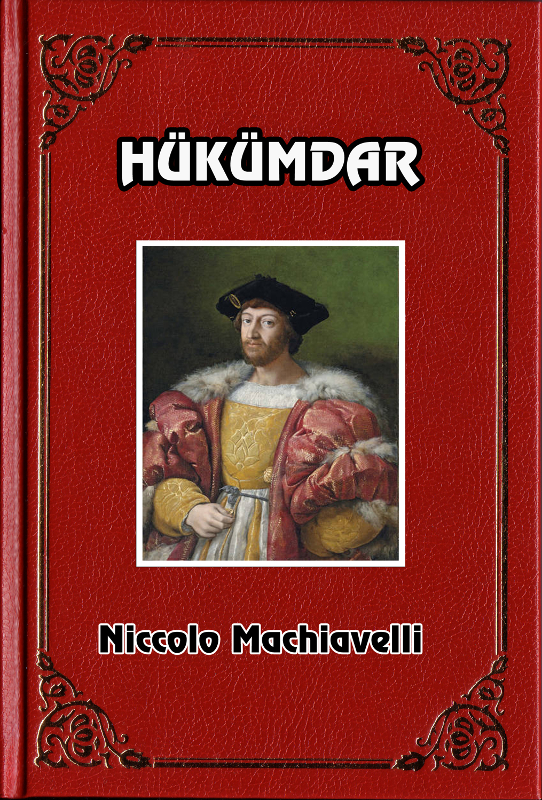

HÜKÜMDAR
(İL PRİNCİPE)
Niccolo Machiavelli
NICCOLO MACHİAVELLİ'DEN YÜCE LORENZO DE MEDİCİ'YE
Bir hükümdarın sevgisini kazanmak isteyenler, çoğu kez ona en değerli eşyalarını, ya da onun en çok hoşlanacağını sandıkları şeylerini sunarak kendilerini tanıtırlar. Bu sebeple çoğu kez, atlar, silahlar, sırma kumaşlar, değerli taşlar ve onun büyüklüğüne yaraşır buna benzer süslü eşyalar verirler.
Ben de yüce efendimize olan bağlığıma tanıklık edecek bazı şeylerle kendimi tanıtmak istedim. Büyük adamların yaptıkları işler konusundaki bilgilerden başka, eşyalarım içinde size sunacak daha değerli bir şey bulamadım. Bu bilgilerden zamanımıza ait olanlarını uzun deneylerimle, eskiye ait olanlarını da sürekli okumalarımla edindim. Uzun süre düşündüm ve büyük özen göstererek bu bilgileri küçük bir kitap haline getirdim. Yüce efendimize, bunu sunuyorum.
Bu kitabın, katınıza sunulacak değerde olmadığını biliyorsam da, iyilikseverliğiniz sayesinde hüsnükabul göreceğini umuyorum. Uzun süre büyük çalışmalar ve tehlikeler pahasına edindiğim bilgileri, size kısa zamanda sağlayacak olan bu kitaptan daha büyük bir armağan sunmaya olanağım yoktur. Kitabımın, çoğu yazarların yaptığı gibi, uzun cümleler ya da içerikle ilgisi olmayan dış süslerle süslemedim.
Konusunun öneminden ve delillerinin doğruluğundan başka bir beğenilme sebebi amaçlamadım.
Sıradan bir insan olarak, hükümdarların yönetimle ilgili konularına değinmek cüretini gösterdiğim için, kendini beğenmişlikle suçlanmak da istemiyorum. Manzara resmi yapanların, dağları ve yüksek tepeleri iyi görmek için alçak ovalara, alçaktaki yerleri iyi görmek için de yüksek tepelere çıkmaları gerektiği gibi, halkın tabiatını iyi tanımak için hükümdar olmak, hükümdarlarınkini iyi tanımak için de halktan biri olmak gerekir.
Yüce efendimiz, bu küçük armağanı kendilerine hangi iyi duygularla sundumsa, dilerim ki aynı iyi duygularla karşılarlar. Dikkatle okuyup incelerlerse, talihlerinin ve diğer niteliklerinin kendilerine vaad ettiği yüksekliğe ulaşmalarını ne kadar istediğimi anlayacaklardır. Ve eğer yüce efendimiz bu yükseklikten arasıra aşağılara bakarlarsa kaderimin sürekli ve büyük eziyetini ne kadar haksız olarak çektiğimi göreceklerdir.
I. BÖLÜM
KAÇ ÇEŞİT HÜKÜMDARLIK VARDIR VE BUNLAR HANGİ YOLLARLA KAZANILIR
İnsanlar üzerinde hüküm sürmüş olan ve halen de bu hükmü sürdüren devletlerin, beyliklerin tümü ya cumhuriyet ya da hükümdarlık olarak ortaya çıkarlar.
Hükümdarlıklar ya soydan geçmedirler —bu durumda aynı soydan gelenler uzun süre orada egemenliğini sürdürür— ya da yenidirler.
Yeni hükümdarlıkların bir kısmı tamamen yenidirler. Francesco Sforza'nın Milano'daki yönetimi böyleydi.
Bir kısmı ise onu ele geçiren hükümdarın soydan geçme devletine kattığı parçalar (ek devletler) gibidirler.
Napoli krallığının İspanya kralı karşısındaki durumunda olduğu gibi.
Bu şekilde ele geçirilmiş ülkeler ya bir hükümdarın yönetimi altında yaşamaya, ya da özgür yaşamaya alışkındırlar. Bu ülkeler ya başkalarının ya da kendilerinin silahları ile ele geçirilirler. Ya talibin yardımıyla ya da yetenekle kazanılırlar.
II. BÖLÜM
SOYDAN GEÇME HÜKÜMDARLIKLAR
Burada cumhuriyetlerden söz etmeyeceğim. Başka bir yerde bu konuyu ayrıntılı olarak ele aldım. Sadece hükümdarlıklar üzerinde duracağım. Yukarıdaki ayırımları izleyerek bu çeşit devletlerin nasıl yönetilebileceğini ve hangi yollarla elde tutulabileceğini inceleyeceğim.
Derim ki, soydan geçme devletlerin elde tutulmasındaki güçlük yeni devletlerin elde tutulmasındaki güçlüklerden daha azdır. Burada yapılacak şey ataların koydukları ölçülerin dışına çıkmamak ve zaman içersinde sııyun akışına uymaktan ibarettir, öyle ki, azıcık yeteneği olan bir hükümdar her zaman devletini elde tutabilir. Elverir ki olağanüstü bir güç onu elinden almasın. Bu durumda bile istilâ edenin ufak bir zayıflık anında onu tekrar ele geçirebilir.
İtalya'da Ferrara dükü örneğimiz var : 1484 yılında Venediklilerin, 1510 yılında da Papa II. Giulino'nun saldırılarına karşı koyabilmesi bu bölgede uzun süre egemenlik sürdürmüş olmasındandır. Asıl hükümdarın halkını ezmeye pek fazla ihtiyacı yoktur. Bu sebeple daha çok sevilir. Aşırı derecedeki kusurları yüzünden bir kin yaratmamışsa onun hakkında sevgi beslenmesi doğal olacaktır. Egemenliğin eskiliği ve devamlılığı içinde hatıralar ve değişiklik sebepleri kaybolup gider. Oysa her değişiklik daima yeni bir değişikliğin tohumlannı bırakır
III. BÖLÜM
KARMA HÜKÜMDARLIKLAR
Asıl güçlükler yeni hükümdarlıklarda ortaya çıkar. Eğer hükümdarlık büsbütün yeni değil de başka bir hükümdarlığın parçası (üyesi) gibi ise —bu durumda tümüne birden karma hükümdarlık denebilir—
buradaki değişiklikler herşeyden önce tüm yeni hükümdarlıklarda görülen doğal bir güçten kaynaklanır : Bu da insanların daha iyisini bulmak umudu ile efendilerini değiştirmek istemeleridir. Bu umut onları yönetenlere karşı silahlanmaya götürür. Aldanırlar. Deneyler az sonra durumun daha kötüye gittiğini gösterir. Bu, doğal ve her zaman görülen başka bir zorunluluğun sonucudur : Yeni hükümdar gerek askerleriyle, gerek istilanın sonucu olan sayısız kötülüklerle yeni uyruğunu her zaman baskı altında tutmak zorunda kalır, öyle ki ülkeyi istila ederek zarar verdiğiniz insanların tümü size düşman olur. Üstelik sizi oraya yerleştiren ve umdukları derecede memnun edemediğiniz, ayrıca onlara olan minnetiniz yüzünden sert yöntemler kullanamadığınız insanlara karsı da dostluğunuzu sürdüremezsiniz. Silah gücünüz ne olursa olsun bir ülkeyi ele geçirmek için o ülke halkının sizden yana olmasına ihtiyacınız vardır. Fransa kralı XII. Louis bu sebeple, çarçabuk ele geçirdiği Milano'yu yine çarçabuk kaybetti.
Birincisinde onu Milano'dan atmak için Lodovico Sforza'nın kendi kuvvetleri yetmişti. Çünkü önceleri krala kapılarını açan halk sonra aldandığını görmüş ve yeni hükümdarın verdiği sıkıntılara dayanamaz olmuştu.
Bir ayaklanmadan sonra ikinci kez ele geçirilen ülkenin kaybedilmesi daha güçtür. Çünkü hükümdar ayaklanmadan yararlanarak güvenliğini sağlayacak tedbirlerin alınmasında, suçluları cezalandırmakta, şüpheli kişileri göz altına almakta ve zayıf taraflarını güçlendirmekte daha az kararsızlık gösterir.
Öyle ki Fransa'yı ilk kez Milano'dan atmak için dük Lodovico'nun kendi gücü yettiği halde ikinci kez atması için bütün dünyayı ittifaka çağırmak, Fransız ordularını yerle bir etmek ve Fransızları İtalya'dan kovmak gerekmişti. Bu da biraz önce değindiğim sebepler yüzündendir. Bununla beraber Fransa iki kez de Milano'yu kaybetti. Birinci kaybın genel sebeplerini söyledim. Şimdi ikinci kaybın sebeplerini —Fransa kralının olanaklarını ya da benzer durumdaki bir hükümdarın olanaklarını göstererek— inceleyelim.
İşgal edilerek kendisinden daha eski, soydan geçme bir devlete bağlanan devletler ya sınır komşusudurlar ve aynı dili kullanırlar ya da durum böyle değildir. Birinci durumda —özellikle daha önce bağımsız yaşama gelenekleri de yoksa— işgal edilen devletlerin elde tutulması çok kolaydır. Eski hükümdarın soyunu ortadan kaldırmak yeter. Eski yaşama koşulları korunur ve gelenekler de aynı kalırsa insanlar rahatça yaşayacaklardır. Bu Burgonya, Brötanya, Gaskonya ve Normandiya örneğinde görüldü. Bunların dillerinde bazı farklılıklar da olsa aşağı yukarı aynı alışkanlıkları vardır; örfleri birbirine benzer. Uyuşmaları kolaydır.
Bu ülkeleri ele geçiren birinin bunları elde tutmak için iki şey yapması gerekir : Birincisi eski hükümdarın soyundan olan insanların tümünü ortadan kaldırması, ikincisi ise kanunları değiştirmemesi ve vergileri artırmaması. Böylece işgal edilen ülkeler az bir zaman sonra soydan geçme eski devletle birleşirler, tek ve aynı devlet haline gelirler.
Ancak işgal edilen ülkelerin dil, gelenek ve örgütlenme biçimleri farklı olursa güçlükler çıkmaya başlar.
Buralarda tutunmak için büyük bir şansa ve yönetim ustalığına sahip olmak gerekir.
İyi ve etkin çarelerden biri de işgal edenlerin gidip o bölgeye yerleşmeleridir. Bu daha güvenilirdir ve sürekli bir egemenlik sağlar. Türkler öyle yaptılar. Yunanistan'a yerleşmeseydiler bütün önlemlere rağmen orada tutunamazlardı, işgal edilen bölgeye yerleşilirse çıkan karışıklıklar anında görülür ve derhal çaresine bakılır. Orada yerleşik değilseniz karışıklıkları ancak büyüdüğü zaman fark edersiniz. Ve iş işten geçmiştir.
Ayrıca, bu durumda ülke memurlar tarafından soyulmaz. Halk hükümdara kolaylıkla baş vurma olanağına sahip olur. Böylece halk, hükümdarı hakkında iyi duygular besliyorsa onu göstermeye olanak bulur; hükümdarı sevmiyorsa ondan korkması sağlanmış olur. Yabancılar arasında bu beldeye saldırmak isteyenler kararsızlık göstereceklerdir. Çünkü işgal ettiği bölgede oturan hükümdarı oradan söküp atmak çok güçtür.
Diğer bir çare de ülkenin kilit bir iki bölgesine göçmen yerleştirmektir. Bu yola başvurulmalıdır. Aksi halde bu kilit bölgelere çok sayıda asker göndermek gerekecektir. Oysa göçmenler daha az masraflıdır. Halkın pek azı onlardan zarar görür : yani sadece göçmenlerin yerleştirilmesi için kimlerden ev ve tarla alınmışsa bu kişiler zarar görürler. Bunlar da dağıldıkları ve fakir düştükleri için kötülük yapmak ellerinden gelmez.
Diğerleri ise bir yandan zarar görmedikleri için sessiz dururlar, öte yandan da malmülkü elinden alınanların durumuna düşme korkusuna kapılarak sinerler. Sonuç olarak, göçmenler masrafsızdırlar, hükümdara bağlıdırlar ve az zarar verirler. Söylediğim gibi bunlardan zarar görenler de sağa sola dağıtıldıkları ve fakir oldukları için kötülük edemezler, üstünde durulması gereken şey şudur : insanlar ya elde edilmeli ya da onların kökü kazınmalıdır; hafif baskılara karşı intikam almaya kalkarlar, fakat ağır baskılara karşı direnemezler. Bir insana baskı yapıldığı zaman öyle davranmalı ki intikam almaya olanak bulamasın.
Eğer göçmenlerin yerine askerlerden yararlanmaya kalkışılırsa Devletin masrafları çok fazlalaşır. Bütün gelirler kışlalar tarafından tüketilmiş olur. Öyle ki kazanç kayıba dönüşür. Sonra askerlerin sık sık konak değiştirmesi halka zarar verir. Herkes onlara düşman kesilir. Bu yenik düşmüş düşmanlar kendi ülkelerinde oldukları için size zarar verebilecek güçtedirler. Sonuç olarak denebilir ki, bir bölgede asker bulundurmak ne kadar yararsız ise göçmen yerleştirmek o kadar yararlıdır.
Adetleri kendi ülkesindekinden farklı olan bir ülkeyi ele geçiren hükümdar, kendisinden daha zayıf komşu devletlerin koruyucusu ve lideri olmalı, kuvvetli olanları zayıflatmaya çalışmalıdır. Özellikle bu bölgeye kendisi kadar güçlü bir devletin ayak basmasını kesinlikle önlemelidir, ihtirasları ya da korkuları yüzünden memnun olmayan kimselerin bir yabancı devleti ülkeye sokmaları her zaman mümkündür. Tarihte görülmüş bir şeydir bu. Romalılar Etoller tarafından Yunanistan'a sokuldular. Romalılar ayak bastıktan her yerde halkın çağrısını almışlardır. Olağan bir durumdur bu. Kuvvetli bir devlet kendisinden daha zayıf olan yabancı bir ülkeye girdiği zaman, o yerde daha zayıf olanlar kendilerinden; daha kuvvetli olanlara duydukları kin yüzünden bu yabancı güçlere katılmak isterler. Öyle ki, yabancı devletin bu zayıf kişileri elde etmesi için fazla bir şey yapması gerekmez. Çünkü onlar kuvvetli devletle birleşmek için kendileri harekete geçerler. Kuvvetli devletin yapacağı şey otoritesini korumak ve onların fazla güçlenmesine yer bırakmamaktır. Bunun için de kendi ordusuna dayanması yeter. Böylece ordusu ile diğer tarafın güçlenmişini önleyecek ve bölgenin tek hâkimi olacaktır. Bu şekilde davranmayan devlet az bir zaman sonra tüm elde ettiklerini kaybeder, elde bulundurduğu süre içinde de sayısız güçlüklerle karşılaşır.
Romalılar bu kuralları hayranlık verici bir biçimde uygulamışlardır : işgal ettikleri ülkelere göçmen yerleştirmişler, zayıf ülkeleri oldukları gibi bırakmışlar, güçlü olanların gücünü törpülemişlerdir. Kendi bölgelerinde güçlü yabancı devletlerin etkinlik kazanmalarına olanak vermemişlerdir. Bu konuda Yunanistan bölgesini örnek olarak göstermek yeter : Romalılar, Akhailer vo Etolleri oldukları gibi korumuşlar, Makedonya krallığını zayıflatmışlar, Antiokhus'u buradan çıkarmışlardır (kovmuşlardır). Akhai ve Etollere bazı olanaklar sağlanmış ise de hiçbir zaman onların fazla güçlenmelerine izin verilmemiştir.
Philippos'un kurnazlıkları, kendisini küçültmeden, Romalıların dost gibi davranmalarına yetmemiştir.
Antiokhus'un bütün gücünü zorlamasına rağmen bölgenin bir kısmını elde tutmasına izin verilmemiştir.
Akıllı hükümdarların bu durumlarda ne yapmaları gerekiyorsa Romalılar da onu yapmışlardır. Onlar sadece o gün var olan karışıklıklara değil, ilerde ortaya çıkacak karışıklıklara da çare aramak zorundadırlar. Öyle ki sorunlar önceden görülerek daha kolay çözüm getirilir.
Hastalık iyice yerleşirse tedavi edilmez bir hale gelir. Doktorlar akciğer vereminin başlangıç döneminde tedavisinin kolay, fakat teşhis edilmesinin zor olduğunu söylerler. Zaman geçince teşhis edilmez ve çaresine bakılmazsa hastalık belirginleşir ve tedavisi güçleşir. Devlet işlerinde de durum aynıdır. Sorunlar önceden görülürse —ki bu ileriyi görenlerin harcıdır— çözüm getirilmesi kolay olur. Hastalıklar herkesin göreceği derecede genişlerse, artık çare kalmaz.
Romalılar bunun sakıncalarını önceden görerek her zaman çare buldular. Savaştan kaçınmak için işleri sürüncemede bırakmadılar. Çünkü onlar biliyorlardı ki savaş kaçınılmaz bir şeydir ve onu ertelemek başkalarının işine yarar, işte bu yüzden Romalılar, Philippos ve Antiokhus'a karsı Yunanistan'da savaştılar.
Aksi halde onlarla İtalya'da savaşacaklardı. Her ikisiyle de savaşmaktan kaçınabilirlerdi. Bunu yapmadılar.
Günümüzün bilgiçlerinin her gün tekrarladıkları «zamanın getireceği iyilikleri iteklemek» ilkesini benimsemediler. Cesaret ve ihtiyatlılıklarının üstün geleceğine inandılar. Gerçekten zaman onlara iyilik getirebileceği gibi kötülük de getirebilirdi.
Şimdi tekrar Fransa'ya dönelim. Söylediklerimden hiçbiri acaba orada uygulandı mı, ona bakalım. Burada VIII. Charles'dan sözetmeyeceğim. İtalya'da uzun süre hüküm sürdüğü için hareketlerini daha iyi izleme olanağını bize veren XII. Louis'den söz edeceğim. Ve göreceksiniz ki bu kişi, kendi ülkesinden farklı yapıdaki bir ülkeyi elde tutmak için ne yapmak gerekiyorsa onun aksini yapmıştır.
Louis İtalya'ya Venediklilerin ihtirası yüzünden girdi. Venedikliler Louis'nin İtalya'ya girmesiyle Lombardiya'nın yarısını ele geçirmek istiyorlardı. Kralın bu davranışını kınamıyorum, İtalya'ya girmek isteyince bu ülkede hiç dostu olmayan, üstelik kendinden önceki Kral Charles'ın beceriksizliği yüzünden bütün kapıları kapalı olan Louis'yi, önüne çıkan işbirliği önerisinden yararlanmak zorunda bırakmıştır.
Başka bir hata yapmamış olsaydı girişiminde başarılı olabilirdi. Lombardiya'yı ele geçirdikten sonra.
Charles'ın kaybettiği saygınlığı yeniden kazanmış oldu. Genova teslim oldu. Floransa onun dostluğunu kazandı. Montova markisi, Ferrara dükü, Bentivogli'ler, kontes Furli, Faenza, Pesaro, Ilimino, Camerino, Piombino derebeyleri ve Lucea'lılar, Pisa'lılar, Siena’lılarla diğer bütün derebeyleri onun dostluğunu kazanma yarışına girdiler. Venedikliler, Lombardiya'da sadece iki şehir elde etmek için İtalya'nın üçte ikisini Fransız kralı Louis'ye teslim ettikten sonra ihtiyatsızlıklarının farkına vardılar.
Bu kral eğer söylediğim kurallara uysa ve bazıları Kiliseden, bazıları Venediklilerden korktukları için her zaman kendisine bağlanmak zorunda olan bu dostlarını korumasını ve savunmasını bilseydi İtalya'da kolaylıkla saygınlığını sürdürebilirdi. Bu yolla üstün güçlere karşı kendini güvenceye almış olurdu. Fakat kral Milano'ya girer girmez aksini yaptı; Papa Alessandro'nun Romagne bölgesini istila etmesine yardımcı oldu. Bunu yapmakla kendini zayıf düşürdüğünü anlamadı. Dostlarını elinden çıkararak kendini onlardan yoksun bırakıyor, manevi gücüne bir o kadar da maddi güç katarak Kiliseyi kuvvetlendiriyordu. Bu ilk hatasından sonra da hatalı yolda ilerledi, öyle ki Allessandro'nun ihtirasına sınır koymak ve onun Toscana'ya hâkim olmasını önlemek için İtalya'ya gelmeğe mecbur oldu. Kiliseyi güçlendirmesi ve dostlarından yoksun kalması yetmiyormuş gibi, Napoli krallığını İspanya ile bölüşmek gibi bir çılgınlıkta bulundu. İtalya'nın tek hâkimi iken kendine bir rakip yarattı; bölgedeki memnuniyetsizlerin ve ihtiras sahiplerinin sığınabilecekleri bir rakip. Napoli'yi haraca bağlayacağı, orada kendine bağlı bir kral bulunduracağı yerde kralı oradan attı ve bir gün kendisini kovabilecek başka birini yerleştirdi.
Fetih isteği normaldir ve doğal bir şeydir. İnsanlar bunu yapabiliyorlarsa kınanmamalı, övülmelidirler.
Fakat başaramayacakları halde istiyorlarsa kınanacak bir şeydir bu. Fransa kralı kendi güçleriyle Napoli'yi ele geçirebilecek idiyse bunu yapmalıydı. Bu güçten yoksun idiyse orayı başkaları ile paylaşmamalıydı.
Lombardiya'yı Venediklilerle bölüşmesinin bir özürü vardı; kral bu suretle İtalya'ya ayak basmış oluyordu.
Napoli'nin bölüşülmesinin hiçbir özürü yoktur. Sadece kınanacak bir iştir bu.
Kral Louis beş hata işledi : Zayıf devletleri mahvetti. Kuvvetli bir devletin gücünü artırdı. Çok kuvvetli bir devleti İtalya'ya soktu, İtalya'ya gelip yerleşmedi. Oraya göçmen yerleştirmedi. Eğer Venediklilerin egemenliklerine son vermek gibi altıncı bir hatayı islememiş olsaydı yine de ayakta kalabilirdi. Kilise güçlendirilmemiş, İspanya İtalya'ya sokulmamış olsaydı Venediklileri çökertmek şüphesiz akıllıca ve gerekli bir davranış olacaktı. Fakat bunlar yapıldıktan sonra Venediklilere dokunmamak gerekirdi. Çünkü onların eskisi gibi güçlü olmaları Lombardiya'ya yaklaşmak isteyen diğer devletlere engel olurdu.
Kral Louis'nin, savaştan kaçınmak için Papa altıncı Allessandro'ya Romagne bölgesini, İspanya'ya, da Napoli'yi bırakmak zorunda kaldığı söylenecek olursa, söyle cevap vereceğim : Savaştan kaçınmak için bir karışıklığın gelişmesine hiçbir zaman izin verilmez. Aslında savaş kaçınılmaz bir olgudur. Olsa olsa kendi aleyhinize erteleyebilirsiniz bunu. Eğer bazıları Kralın Papaya — evliliğini geçersiz kılması ve Rouen piskoposunu kardinal yapması şartıyla— böyle bir girişimde bulunmak için söz verdiğini öne sürecek olurlarsa onlara ilerideki sayfalarda «Hükümdarların sözlerine bağlılıkları»nı incelerken cevap vereceğim.
Kral Louis, fethettikleri ülkeleri ellerinde tutmak isteyen hükümdarların uymaları gereken kurallardan hiçbirine uymadığı için Lombardiya'yı kaybetmiştir. Bunda şaşacak bir şey yoktur; son derece doğal bir sonuçtur bu. Valantino dükü (Papa Allesandro'nun oğlu Cesar Borgia bu adla anılırdı) Romagne bölgesini işgal ettiği zaman Nantes şehrinde Rouen kardinaline bunu böylece söyledim. Kardinal, İtalyanların askerlik sanatından bir şey anlamadıklarını söyledi. Ben de kendisine Fransızların devlet işlerinden habersiz oldukları şeklinde cevap verdim. Bu işten anlasaydılar Kilise'nin bu kadar güçlenmesine izin vermezlerdi, dedim. Deneylerle kanıtlanan şudur : İtalya'da Kilise'nin ve İspanya krallığının güçlenmesine Fransa sebep olmuştur. Fransa'nın İtalya'dan silinmesine de bunlar (Kilise ve İspanya krallığı) sebep olmuşlardır. Buradan, hemen hemen hiç şaşmaz bir genel kural çıkarıyorum : Başka devletleri kuvvetlendiren hükümdar kendini çökertir. Çünkü birini kuvvetlendirmek ya güçle ya da kurnazlıkla gerçekleşir. Bunların her ikisi de yeni kuvvetlenen devlet için sakınılacak şeylerdir.
IV. BÖLÜM
İSKENDER TARAFINDAN İŞGAL EDİLEN DARA
KRALLIĞI ONUN ÖLÜMÜNDEN SONRA
HALEFLERİNE KARŞI NEDEN
AYAKLANMAMIŞTIR
Yeni fethedilen bir devletin elde tutulmasındaki güçlükler göz önünde bulundurulursa, Büyük İskender'in kısa bir süre içinde Asya'ya egemen olması ve burayı ele geçirir geçirmez ölümünden sonra bütün bu ülkenin ayaklanması akla yakın görünürken, haleflerinin buraları nasıl tutabildikleri ve onların kendi ihtirasları yüzünden aralarında çıkan güçlüklerden başka güçlüklerle karşılaşmamış olmaları şaşırtıcı gelebilir. Şöyle cevaplayabilirim bunu : Hatırlayabildiğimiz bütün devletler iki farklı biçimde yönetilmişlerdir : Ya başta mutlakiyetçi bir hükümdar vardır; yönetime yardımcı olan bakanlar onun kulları gibidirler. Hükümdarların izni ve isteği ile bu görevlere gelmişlerdir. Ya da devletin basında bir hükümdar ve yönetimi paylaşan beyler vardır. Bu beyler Bakanlık görevlerini hükümdarın izni ve isteği ile değil soylu olmalarının bir gereği olarak yürütürler. Bu beylerin kendi özel devletleri ve onları senyör olarak kabul eden uyrukları vardır.
Bir hükümdar ve onun kulları tarafından yönetilen devletlerde hükümdarın yetkileri çok büyüktür. Ülkenin her yerinde ondan başka bir egemenlik sahibi görülmez. Bakan ya da memur sıfatı ile başkaları bu egemenliği kullansa bile halkın onlara karşı özel bir bağlılığı yoktur. Bu iki çeşit yönetimin günümüzdeki örnekleri Türk padişahı ile Fransa kralında görülür. Türk hükümdarlığı tek bir padişah tarafından yönetilir.
Diğerleri kapıkullarıdır. Padişah ülkesini sancaklara ayırmış ve oralara valiler tayin etmiştir. Padişah valileri istediği zaman istediği biçimde değiştirebilir. Fransa kralı ise kalabalık bir soylular sınıfı ile kuşatılmıştır. Bu soyluların kendilerine, bağlı uyrukları ve ayrıcalıklı durumları vardır. Kral onların bu ayrıcalıklarını —kendini tehlikeye atmadan— ellerinden alamaz.
Bu iki çeşit yönetim biçimi incelenirse, Türk hükümdarlığının ele geçirilmesinin çok güç, fakat bir kez ele geçirilirse onu elde tutmanın ise çok kolay olduğu görülür. Buna karşılık. Fransa krallığını ele geçirmek kolay fakat onu elde tutmak çok güçtür.
Türk hükümdarlığını ele geçirmekteki güçlük şuradan doğar. Saldırmak isteyen devleti bu ülkeden çağıracak beyler olmadığı gibi halkın ayaklanması da umut, edilemez. Çünkü herkes padişahın kulu olduğu için onları baştan çıkarmak güçtür. Baştan çıkarılsalar bile bu fazla bir işe yaramaz. Çünkü söylediğimiz sebeplerden dolayı halk onlarla birlikte hareket etmez. Osmanlı devletine kim saldırırsa onu birlik içinde bulacağını hesaplaması gerekir. Bu nedenle umudunu başkalarının iç karışıklığından çok kendi öz kuvvetlerine bağlamalıdır. Fakat bir kez yenik düşüp ordusu bozguna uğrayacak olursa hükümdar soyundan gelenlerin dışında kimseden korkmaya gerek kalmaz. Onlar da yok edilirse, diğerlerinin halk katında saygınlıkları olmadığı için artık çekinilecek hiçbir kimse kalmaz. Zaferden önce onlardan bir şey umulmaması gerektiği gibi zaferden sonra da onlardan korkulması için sebep yoktur.
Fransa gibi yönetilen devletlerde durum tümüyle farklıdır. Burada krallığın bazı beylerini elde ederek ülkeye kolaylıkla girilebilir. Memnun olmayanlar ve değişiklik isteyenler her zaman bulunur. Bunlar söylediğim sebeplerden dolayı size kapıları açabilir ve zaferinizi kolaylaştırabilirler. Fakat sonra buraları elde tutmak istediğiniz zaman, ister size önce yardım etmiş olanlar, ister zarar verdiğiniz kişiler olsun, sayısız güçlükler çıkarırlar. Hükümdarın soyunu ortadan kaldırmak yetmez. Geri kalan beyler hareketin başını oluştururlar. Bunların tümünü memnun etmek ya da öldürmek mümkün olmayınca da fırsat ele geçer geçmez savaşı kaybetmiş olursunuz.
Dara krallığının yönetim biçimine bakarsak bunun Türk hükümdarının yönetim biçimine benzediğini görürüz. Bu yüzden İskender Dara krallığını kesin bir biçimde çökertmek zorunda kalmıştır. Zaferden sonra Dara ölünce İskender yukarıda belirtilen sebeplerle rahat bir şekilde bu ülkenin sahibi oldu. Eğer ondan sonra gelenler birlik olabilselerdi burada rahatça egemenliklerini sürdürebilirlerdi. Gerçekten bu devlette kendilerinin yarattıkları karışıklıklardan başka bir karışıklık olmadı. Fakat yönetim biçimi Fransa gibi olan devletleri elde tutmak o kadar kolay değildir. Romalılara karşı İspanya'da, Fransa'da ve Yunanistan'da sık sık meydana gelen ayaklanmalar bu memleketlerde birçok beylerin bulunması yüzündendir. Bu beyliklerin hatıraları durduğu sürece Romalıların bu ülkelerdeki egemenlikleri sallantıda kalmıştır. Ne zaman ki imparatorluğun sürekliliği ve gücü sayesinde bu beylerin hatıraları silindi, ancak o zaman güvenlik sahibi oldular. Daha sonra kendi aralarında sürtüşmeler doğunca her biri bir bölgede egemenliğini sürdürüp o yerin sahibi oldu. Fakat bu bölgelerde eski beylerin soyu tükenince Romalılardan başka bir egemenlik tanımadılar.
Bütün bu olanlara iyice bakılırsa İskender'in Asya'yı elinde tutmakta bulduğu kolaylıkla, Pyrrhus ve benzerlerinin ele geçirdikleri yerleri tutmakta uğradıkları güçlüklerde şaşılacak bir taraf yoktur. Bu sonuç, fatihlerin niteliklerinden değil, ele geçirilen yerlerin farklı yapılarından kaynaklanır.
V. BÖLÜM
İŞGALDEN ÖNCE KENDİ ÖZEL YASALARI İLE
YÖNETİLEN ŞEHİRLERİ VE HÜKÜMDARLIKLARI
NASIL YÖNETMEK GEREKİR
Fethedilen devletlerin kendi yasaları içinde özgür yaşama gelenekleri varsa bu devletleri elde tutmanın üç yolu vardır. Birinci yol onları yıkmaktır, ikincisi o devletin ülkesine, bizzat gidip yerleşmektir. Üçüncü yol da işgal edilen devleti kendi yasaları ile bırakmaktır. Fakat son durumda bu devleti haraca bağlamak, burada kendine bağlı bir yönetim kadrosu oluşturmak gerekir. Hükümdar tarafından yaratılan bu yeni yönetim kadrosu kendi varlığının hükümdarın dostluğuna dayandığını bilir. Ve onu korumak için her şeyi yapar. Özgürlüğe alışkın bir şehiri yıkmak istemiyorsanız orayı yerli yöneticilerle yöneterek daha kolay elde tutabilirsiniz. Ispartalılar ve Romalılar bunun örneğini verdiler. Ispartalılar Atinalı ve Thebai'yi birkaç kişilik oligarşik bir yönetimle elde tuttular. Buna rağmen bu iki şehiri yine de kaybettiler. Romalılar Kapus, Kartaca ve Numanzia'yı elde tutmak için buraları yakıp yıktılar. Buna karşılık Yunanistan'ı Ispartalıların yaptıkları gibi kendi yasaları içinde özgür bırakarak elde tutmak isteyen Romalılar başarıya ulaşamadılar.
Öyle ki burayı korumak için ülkenin birçok şehrini yakıp yıkmak zorunda kaldılar. Gerçekten, ele geçirilen bir şehri güvenli bir biçimde korumanın yolu orayı yakıp yıkmaktır. Özgürlüğe alışmış bir kenti ele geçiren kişi orayı yıkmazsa, o kentin kendisini yıkmasını beklemelidir. Çünkü özgürlüğü ve eski alışkanlıkları adına baş kaldıracak olan şehir halkı her zaman tetiktedir. Ne zamanın geçmesiyle ne de bir çıkar sağlamak suretiyle eski durumlarını unutmaları mümkündür. Şehir halkı dağıtılıp yok edilmezse her fırsatta özgürlüklerini hatırlayacaklardır.
Piza'nın, yüz yıl Floransa egemenliği altında yaşadıktan sonra yaptığı bunun güzel bir örneğidir. Ülkeler bir hükümdarın emri altında yaşamaya alışmışlarsa ve hükümdarın soyundan kimse kalmamışsa iş kolaylaşır.
Bir yandan itaat etmeye alışmışlardır, diğer yandan hükümdar soyundan kimse kalmamıştır. Kendi aralarında itaat edecek birini bulamazlar, özgür yaşamasını bilmezler. Silaha sarılma konusunda da gevşektirler. Sonuç olarak bir hükümdar için böyle bir yeri ele geçirmek çok kolaydır. Fakat cumhuriyetlerde daha çok canlılık, daha çok kin ve daha çok intikam duyguları kalır. Geçmişteki özgürlüklerinin hatırası insanların yakasını bırakmaz. Bu nedenle cumhuriyetleri elde tutmak için en etkin yol ya onları tümüyle yakıp yıkmak ya da gidip oralarda yerleşmektir.
VI. BÖLÜM
BİR HÜKÜMDARIN KENDİ YETENEĞİ VE
ORDUSU İLE KAZANDIĞI
YENİ DEVLETLER
Yeni hükümdarlıklardan, yeni hükümdarlardan söz etmeme bu konuda çok büyük örnekler vermeme kimse şaşmasın, insanlar çoğu kez başkalarının geçtikleri yolu izler, başkalarını taklit ederler. Bu yol bütünü ile tutulmasa da, taklit edilenin seviyesine ulaşılmasa da ihtiyatlı bir insanın yapacağı şey yine de büyük adamların yolunu izlemek, bunu taklit etmektir. Tam bir başarıya ulaşılmasa da ihtiyatlı bir insanın yapacağı şey yine de büyük adamların yolunu izlemek, bunu taklit etmektir. Tam bir başarıya ulaşamasa da en azından bir yere yaklaşır, ihtiyatlı nişancılar da aynı şeyi yaparlar. Hedeflerinin çok üstünde bir yeri nişan alırlar. Bu hedefi vurmak için değil orayı nişanlayıp gerçek hedeflerini vurmak için. Yeni devlete sahip olan yeni hükümdarın bu devleti korumakta —kişisel yeteneğine göre— az ya da çok güçlükleri olur. Sıradan bir insan iken hükümdar olmak ya yetenek ya da talih işidir. Güçlüklerin çoğu ya birincisinin ya da ikincisinin yardımı ile ortadan kalkar. Bununla beraber talihe daha az yer bırakan hükümdarın tutunma imkânı daha çoktur. Ona kolaylık sağlayan bir şey de başka yeri olmadığı için işgal ettiği bölgeye gidip yerleşmesidir.
Fakat talihleriyle değil de kendi yetenekleriyle hükümdar olmuş olanlardan söz edecek olursak bunların en önemlileri Musa, Keyhüsrev, Romulus, These ve benzerleridir. Gerçi Musa bu göreve Tanrı tarafından getirilmiştir. Bu yüzden ondan söz etmek gerekmez. Ancak Tanrı ile konuşma liyakatine sahip olması bile ona hayran olunması için yeter. Fakat bir krallıklar fetheden ya da krallıklar kuran Keyhüsrev ve diğerlerine bakarsak hayranlık uyandırıcı olduklarını görürüz. Her birinin eylemleri ve izledikleri yollar büyük üstadları Musa'nınkinden farklı değildir. Hayatları ve eylemleri incelenirse talihin onlara fırsattan başka bir şey vermediği görülür. Bu fırsat onlara, istedikleri biçime sokmalaniçin hammaddeyi sağladı. Bu fırsat olmasaydı yetenekleri boşa gidecekti. Yetenekleri olmasaydı bu fırsat bir işe yaramayacaktı.
Musa'nın ortaya çıkışı için İsrail halkının Mısır'da esir olması ve bu esaretten kurtulmak için onun arkasından gitmesi gerekiyordu. Romulus'un Roma kralı olması, yeni bir devletin kurucusu olması için Albe'de kalmaması, doğar doğmaz terk edilmiş bulunması gerekiyordu. Keyhüsrev'in ortaya çıkışı için Perslerin Med imparatorluğunun baskılarından bıkmış olmaları ve Medlerin de uzun süren barış
döneminden ötürü gevşemiş olmaları gerekiyordu. Atinalılar dağınık bir durumda olmasalar These, yeteneklerini ortaya koyamayacaktı. Fırsatlar bu insanlara yaradı; üstün yetenekleriyle bu fırsatları değerlendirdiler. Ülkelerine mutluluk ve refah sağladılar.
Bunlar gibi hükümdarlığı kendi yetenekleriyle kazananlar, bulundukları yerlere güçlüklerle gelirler. Fakat iktidarlarını kolaylıkla korurlar. Karşılaştıkları güçlüklerin bir kısmı, devletlerini kurmak ve güvenliklerini sağlamak için zorunlu olarak oluşturdukları yeni düzen ve yöntemlerden kaynaklanır. Yeni düzen oluşturmak kadar güç, başarı şansı az ve uygulanması tehlikeli olan başka bir şey yoktur. Çünkü eski düzenden çıkarları olanların tümü düzeni değiştirenlerin düşmanıdırlar. Yeni düzenden yararlanacak olanlar da sadece gevşek bir destek sağlarlar. Bu desteğin gevşek olmasının sebebi biraz eski düzenden yana olanların düşmanlığından korkmaktan, biraz da insanların yeni ve denenmemiş şeylere karşı duydukları güvensizlikten kaynaklanır. Bundan şu sonuç çıkar : Düşmanlar her zaman şiddetle saldırırlar.
Diğerleri gevşek bir şekilde karşı koyarlar. Öyle ki, hükümdar bunlarla tehlikeden tehlikeye düşer.
Burada bir noktaya iyice dikkat etmek gerekir. Yenilik getirmek isteyenlerin ya bu işin altından kalkacak kadar kendi güçleri vardır ya da başkalarına dayanarak böyle bir ise girişirler. Bu girişimleri için ya rica ve yalvarma yoluna ya da zora başvuracaklardır. Rica ve, yalvarma ile bu iş yürütülemez. Yalnız kendi güçlerine dayanıp zor kullanabilirlerde başarısızlık ihtimali azdır.
Silahlı peygamberlerin başarıya ulaşmaları, silahsız olanların ise. başarısızlığa uğramaları bu yüzdendir.
Çünkü belirttiğim sebeplerden başka, milletlerin karakterleri de değişkendir. Onları bir tarafa yönlendirmek kolaydır. Fakat orada tutmak zordur. Bunun için o şekilde davranmak gerekir ki inanmadıkları zaman bile onları zorla inandırmak mümkün olsun.
Musa, Keyhüsrev, These ve Romulus silahtan yoksun olsalardı uzun süre halkı kendilerine bağlayamazlardı. Günümüzde Jerome Savonarole kardeşin başına gelen budur. Halk ona olan güvenini kaybedince perişan oldu. Halkın güvenini koruyacak araçlardan yoksun olduğu gibi, inançsızları zorlayacak araçları da yoktu. Yeni düzen getirmek isteyenlerin işleri zordur. Her adımda büyük tehlikelerle karşılaşırlar. Bu güçlükleri aşmak için cesaret ve yetenek sahibi olmaları gerekir. Fakat bu güçlükleri aştıktan sonra tehlike kalmaz. Güvenli, saygın ve mutlu olurlar.
Bu büyük örneklerden sonra, bunlara küçük bir örnek daha eklemek istiyorum. Bunun, önceki büyüklerle bir benzerliği vardır. Siracusa'lı Hieron örneğidir bu. Hieron sıradan bir vatandaş iken talihinin yardımı ile Siracusa'ya hükümdar oldu. Bu yer halkı baskı altında ezilirken onu başa geçirdi. Böylece Hieron. üstün yeteneklerini kanıtlamış oldu. Aslında hükümdar olmadan önce de yetenekleri biliniyordu. Tarihçiler ondan kral olması için krallıktan başka hiçbir eksiği olmayan kişi olarak söz etmişlerdir.
Hieron eski milis örgütünü dağıtıp yenisini kurdu. Eski ittifakları bozdu, yenilerini geliştirdi. Bütünü ile kendisine bağlı askerlere ve dostlara sahip olduktan sonra yönetimini kolaylıkla temellendirdi. Öyle ki, büyük güçlüklerle geldiği yerini rahat bir bicimde korudu.
VII. BÖLÜM
BAŞKALARININ SİLAHI VE TALİHİN YARDIMI İLE KAZANILAN YENİ HÜKÜMDARLIKLAR.
Sıradan bir kişi iken talihin yardımı ile hükümdar olanların çok az güçlükleri olur. Fakat hükümdar olduktan sonra yerlerini korumaları çok güçtür. Gelişlerinde hiçbir güçlük yoktur. Adeta uçarak ulaşırlar buraya, fakat yerlerine geçer geçmez güçlükler ortaya çıkmaya başlar. Bu hükümdarlar ya para karşılığında ya da hediye edilmek suretiyle devlete sahip olmuşlardır. Dara'nın Yunanistan'da, İonya ve Hellespont şehirlerinde — kendi güvenliğini ve şöhretini sürdürmek için— yarattığı hükümdarlıklarda ve Roma İmparatorluğu'nda sıradan insanların askerleri elde ederek imparator olmalarında olduğu gibi.
Bu hükümdarları yerlerinde tutan iki şey, onları oraya getirenlerin iradeleri ve talihleridir. Öyle ki her ikisi de değişkendir ve süreklilikten yoksundur. Bu kişiler yerlerini korumasını bilmezler ve bunu yapamazlar.
Bunu bilmezler; çünkü kendi özel hayatını yaşayan bir içişi eğer büyük bir yetenek ve zekâ sahibi değilse devlet yönetimini bilemez. Bunu yapamazlar; çünkü kendilerine bağlı ve güvenebilecekleri askeri güçleri yoktur. Aynca birden bire doğan devletler —tıpkı tabiatta birdenbire ortaya çıkan ve çabuk gelişen bitkiler gibi— kök salamazlar ve ilk fırtınanın yıkıcı etkilerine karşı kendilerini koruyamazlar.
Söylediğim gibi birden bire hükümdar olanlar talihin kendilerine sunduğu olanakları değerlendiremez ve yönetime geçtikten sonra üstün yetenekleriyle —başkalarının önceden hazırladığı gibi— yönetimin temellerini kuramazlarsa yerlerinde duramazlar.
Kişisel yetenek ya da talih sonucu hükümdar olmak konusunda zamanımızdan iki örnek vermek istiyorum
: Bunlar Francesco Sforza ve Cesar Borgia örnekleridir. Sforza, sıradan bir vatandaş iken olağanüstü yetenekleri sayesinde Milano dükü oldu. Büyük çabalarla kazandıklarını kolaylıkla korudu. Buna karşılık Valantino dükü diye anılan Cesar Borgia babasının sayesinde iktidar sahibi oldu. Başkalarının gücü ve talihin yardımı ile kazanılan bir devletin korunması için yetenekli ve ihtiyatlı bir kişinin yapacağı her şeyi deneyen Cesar Borgia, babasının ölümü ile kendisi de iktidarını kaybetti. Yukarıda değindiğim gibi yönetiminin temelini önceden hazırlamayan hükümdar, büyük bir ustalıkla onu sonradan kurmak zorundadır. Mimar için güç, bina için tehlikeli de olsa bu işin yapılması gerekir.
Eğer Cesar Borgia'nın yaptığı bütün işler incelenecek olursa müstakbel iktidarı için önemli temeller atmış
olduğu görülür. Yeni bir hükümdara onun yaptıklarından daha iyi bir örnek gösterilemez. Aldığı bütün tedbirlerin başarılı sonuç vermemesi onun hatası değildir. Bu, olağanüstü derecede bir talihsizliğin sonucudur.
Oğlunun dukalığını genişletmek isteyen VI. Allessandro büyük güçlüklerle karşılaştı, Kilise'ye ait olmayan hiçbir ülkeyi ona vermenin imkânsızlığını görüyordu. Kilise’ye ait olan ülkeleri almak istese, Venediklilerin ve Milano dükünün buna asla razı olmayacaklarını biliyordu. Faenza ve Rimini uzun zamandan beri Venediklilerin himayesi altında idiler.
Bundan başka İtalya'daki silahlı güçleri, özellikle kendisinin yararlanabilecek olduğu güçler Papalığın büyümesinden korkabilecek olanların (Orsiniler, Colonnalar ve yandaşlarının) ellerinde olduğu için bunlara güvenemezdi. Bu durumda, engellerin kırılması ve ülkenin bir kısmına egemen olunabilmesi için İtalya'nın altüst edilmesi gerekiyordu. Venedikliler sayesinde bu işi kolayca başardı. Venedikliler başka bir maksatla
—işgal etmeleri için— Fransızları İtalya'ya çağırmışlardı. Papa VI. Allessandro bu girişime karşı koymadı.
Hatta kral XII. Louis'nin birinci evliliğini geçersiz kılmayı kabul ederek ona kolaylık gösterdi. Böylece bu kral Venediklilerin yardımı ve VI. Allessandro'nun onayı ile İtalya'ya girdi. Kral Milano'ya girer girmez Papa, Romagne bölgesini ele geçirmek için ondan askeri yardım isteğinde bulundu. Kral, kendi prestiji için bu isteği kabul etti.
Valantino dükü (Cesar Borgia) böylece Romagne bölgesine sahip olduktan ve Colonnaları yendikten sonra burayı korumak ve daha ileriye gitmek istiyordu. Ancak iki şey onu engelliyordu : Biri, kendisine pek bağlı gözükmeyen askerleri, ikincisi Fransa'nın iradesi. Daha önce yararlandığı Orsinilerden çekiniyordu.
Orsini'lerin sadece yeni ülkeleri ele geçirmesine engel olmalarından değil, daha önce kazandığı yerlerden de çıkarmalarından korkuyordu. Fransa kralından da aynı şekilde çekiniyordu.
Orsinileri tanımıştı. Faenza'nın ele geçirilmesinden sonra Bologna’ya saldırdıkları zaman gönülsüz davranmışlardı.
Krala gelince, onun niyetlerini Urbin dukalığını ele geçirdikten sonra Toscana'ya saldırmak üzere iken anlamıştı. Kral, onu bu girişiminden caydırmıştı. Böylece Cesar Borgia, artık talihe ve başkasının silahı ve talihine bağlanmamak kararını aldı. ilk iş olarak Roma'daki Orsini ve Colonna taraftarlarını zayıflattı. Onları tutan bütün soylulara büyük paralar vererek, niteliklerine göre önemli görevlere getirdi, öyle ki birkaç ay içinde bütün bu soylular düke bağlanmaya başladılar. Bundan sonra —Colonna zaten dağıtılmıştı—
Orsini'lerin ortadan kaldırılması için fırsat bekledi. Bu fırsatı buldu ve ondan iyi bir şekilde yararlandı.
Orsiniler, dükün ve Kilisenin güçlenmesinin kendi yıkımları demek olduğunu geç anladılar. Perouse bölgesindeki Magione şehrinde bir toplantı düzenlediler. Bu toplantıdan, Urbin ayaklanması, Bomagne kargaşalığı ve sayısız tehlikeler doğdu. Ancak dük Fransızların yardımı ile her birini bastırdı.
Fakat işlerini düzene soktuktan sonra ne Fransızlara ne de başka yabancı güçlere güvenmeyerek, bir gün onlarla boy ölçüşmemek için hile yoluna başvurdu. Düşüncelerini o kadar iyi gizledi ki Orsiniler Sinyor Paola aracılığı ile dükle barıştılar. Dük, Paolo'ya giysiler, para ve atlar vererek onun güvenini kazanmak için her şeyi yaptı. Orsiniler saflıkta o derece ileri gittiler ki Sinigaglia'da dükün avucunun içine düşecek hale geldiler. Orsinilerin ileri gelenlerini ortadan kaldıran dük geri kalanının dostluğunu kazandı.
Yönetimini sağlam temellere dayandıran dük, Urbin dukalığı ile bütün Romagne bölgesini tutmuş
oluyordu. Rahatının tadını çıkarmaya başlayan bu yöre halklarını elde etmişti. Bu işleri kayda değer ve başkalarına örnek olur nitelikte bulduğum için, değinmeden geçmek istemedim.
Dük, Romagne bölgesini ele geçirdiği zaman buranın beceriksiz kişiler tarafından yönetildiğini gördü.
Onlar halkı yönetecek yerde soymuşlar, birleştirecek yerde ikilik yaratmışlardı. Öyle ki ülke baştan başa hırsızlık, yağma ve her türlü kötülüğü batağına düşmüştü. Bunları gidermek ve ülkede dirliği sağlamak için iyi bir yönetimin oluşturulması gerektiğine karar verdi. Bu iş için sert ve becerikli bir insan olan Ramiro d'Arco'yu görevlendirdi. Ona geniş yetkiler verdi. Bu kişi, çok kısa zamanda ülkenin dirliğini sağlayarak büyük bir ün kazandı. Fakat dük Borgia sonradan, halkın nefretini çekeceğini düşünerek baskıyı kaldırdı. Ülkenin ortasında sivil bir mahkeme kurdurdu. Bu mahkemenin çok iyi bir başkanı vardı.
Her şehir burada kendi avukatı ile temsil ediliyordu. Dük, başlangıçta gösterilen şiddetin halkta bir nefret yarattığını biliyordu. Bunu ortadan kaldırmak halkı yatıştırmak ve tümüyle kendi yanına çekmek için Ramiro'yu öldürttü. Böylece bazı zulümler yapılmışsa da kendisi tarafından değil de, zalim yaradılışlı Ramiro tarafından yapıldığını göstermek istiyordu. Bir sabah vakti Cesana'da şehir meydanında onun ikiye ayrılmış cesedini gören halk hem sevindi hem de şaşkına döndü. Fakat biz konumuza dönelim, istediği şekilde kuvvetlendikten ve kendisine zarar verebilecek komşuların büyük bir kısmını yere serdikten sonra, kendini çok güçlü bulan dük, fetihlerini sürdürmek isterken yalnız Fransa'dan çekiniyordu. Geç de olsa hatasını anlayan Fransa kralının onun genişlemesine (kuvvetlenmesine) hiç bir zaman katlanmayacağını biliyordu.
Bu yüzden yeni dostlar aramaya başladı. Gaeta'yı kuşatan İspanyolları ortadan kaldırmak için Fransızların Napoli krallığına girişleri sırasında onlara karşı kararsız bir tavır takındı. Maksadı, Fransa'ya karşı kendini güvenceye almaktı. Papa Allessandro sağ olsaydı bunu çarçabuk sağlardı.
Bu dönemde izlediği siyaset işte böyleydi. Geleceğe yönelik riyasetine gelince : Alessandro tarafından kendisine verilen şeyleri yeni Papa'nın elinden almasından çekiniyordu. Bunu engellemek için dört çare düşündü : Birincisi, yerlerinden ettiği tüm soyluların kökünü kazıyarak, Papa'nın onları tekrar canlandırmasına engel olmak, ikincisi, Roma'nın tüm soylularını kendi tarafına çekerek onlar aracılığı ile Papa'yı dizginlemeye çalışmak. Üçüncüsü, dini liderleri olabildiğince kendi çevresine çekmek. Dördüncüsü, babası Alessandro ölmeden, olabildiğince güçlenerek kendi başına ilk saldırıyı önleyecek duruma gelmeye çalışmak.
Alessandro öldüğü zaman bu dört işin üçü tamamlanmış, dördüncüsü de tamamlanmak üzereydi.
Soyduğu soylulardan yakalayabildiklerinin tümünü öldürmüş, pek azı kurtulabilmişti. Roma soylularının tümünü kendi tarafına çekmişti. Dini liderlerin çoğu onun yanındaydı. Ülkesini genişletmek konusuna pelince, Toscana'ya egemen olmayı düşünüyordu. Perugia ve Piombino'yu ele geçirmişti. Ayrıca Pisa'yı koruması altına almıştı, İspanyollar tarafından Napoli krallığından kovulan Fransızlardan çekinmek için artık sebep kalmamıştı. Herkes onun dostluğunu kazanmak zorundaydı. Pisa'yı ele geçirdi. Bundan sonra Lucca ve Siena şehirleri —korkuları ve Floransa'ya duydukları kin yüzünden— kolayca boyun eğerlerdi.
Floransalıların kurtulmaları olanaksızdı. Bunu başarsaydı (Papa Alessandro'nün öldüğü yıl başarabilirdi) o kadar güç ve saygınlık kazanırdı ki, kendi kendine yetebilir, başka hiç bir güce dayanmak ihtiyacını duymazdı. Fakat Alessandro, dükün kılıcını çekmesinin beşinci yılında öldü. Oğluna sağlam yer olarak sadece Romagne bölgesini bıraktı. Diğer ülkeler iki kuvvetli düşman ordusu tarafından çevrilmiş
durumdaydı, üstelik dük ölümcül bir şekilde hastaydı. Ancak dük o kadar şiddetli azim sahibi, o kadar yürekli bir insandı ki ve insanları kazanmayı ya da mahvetmeyi o kadar iyi biliyordu ki, bu iki büyük ordu karşısında olmasa ya da hastalanmasaydı diğer bütün güçlükleri yenerdi.
Romagne ülkesinin kendisini bir aydan fazla beklemesi, yarı ölü bir durumda olmasına rağmen Roma'da güvenlik içinde kalabilmesi, Baglioni, Vitelli ile Orsinilerin Roma'ya gelmelerine rağmen ona karşı bir şey yapmamış olmaları, kurduğu düzenin sağlam temellere dayandığını gösterir. Gerçi istediği kişiyi Papalığa getiremedi. Ama en azından istemediği kişilerin oraya gelmesine engel oldu. Alessandro öldüğü zaman kendisi hasta olmasaydı her şey kolay olacaktı. Babası Alessandro'nun ölümünden sonra olabilecek her şeyi düşündüğünü ve her şeye bir çare bulduğunu, ancak onun öldüğü gün kendisinin de ölümcül derecede hasta olabileceğini düşünmediğini, dük bana ikinci Giulino'nun Papalığa seçildiği gün anlatmıştı.
Dükün yaptığı işleri özetledim. Onu kınamak elimden gelmez. Tam tersine, o talihinin yardımı ve başkalarının gücü ile hükümdar olan herkese örnek gösterilecek biridir, düşüncesindeyim. Çünkü o, yürekli ve yüksek amaçlı biri olarak başka türlü davranamazdı. Alessandro'nun kısa süren yaşamı ve kendi hastalığı, düşüncelerini gerçekleştirmesine engel oldu.
Yeni ülkesinde düşmanlarına karşı güvenliğini sağlamak, dostlar edinmek, hile ya da kuvvet kullanarak yenmek, kendini halka sevdirmek ya da onları korkutmak, askerleri kendine bağlamak ve onların saygısını kazanmak, zarar verebilecek ya da zarar vermek zorunda kalacak olanları yoketmek, eski düzeni yenileştirmek, sert ve iyiliksever, yüce gönüllü ve hoşgörülü olmak, itaatsiz milisleri yok etmek ve yeni bir milis örgütü kurmak, iyilikle ya da korku salarak hükümdar ve kralların dostluklarını korumak isteyen bir kişi için Valantino dükünün yaptıklarından daha taze örnekler bulunamaz.
Onun tek kınanabilecek davranışı II. Giuliuo'nun Papa seçilmesi içindedir. Kötü bir seçimde bulundu. Daha önce söylediğim gibi, kendi istediği bir kişiyi Papalığa getiremeyince, en azından istemediği bir kişinin Papa olmasını engellemeliydi. Daha önce kötü davrandığı ya da Papa olduktan sonra kendisinden korkmaları gerekecek kardinallerin Papa seçilmesine asla izin vermemesi gerekirdi. Çünkü, insanlar özellikle hınç ya da korku yüzünden düşman olurlar.
İncittiği kardinaller arasında San Piero ad Vincula ve San Giorgio kardinalleri ile Kardinal Colonna ve Ascanio Sforza vardır. (Machiavelli, Giovanni Colonna ile Ascanio Sforza'yı isimleri ile anıyor, diğerlerini ise görevleri ile).
Diğerlerinin de Papa seçildikleri takdirde ondan korkmaları için sebepleri vardı. Bunlardan sadece Rouen kardinali ile İspanyolları hariç tutmak gerekir: İspanyollar, hısımlık ve gördükleri yardım yüzünden, Rouen kardinali ise Fransa Krallığının kendisini tutması yüzünden korkuları yoktu. Bu durumda dükün bir İspanyolu Papa yapması gerekirdi. Bu elinden gelmeyince San Piero ad Vincula kardinalinin değil, Rouen kardinalinin Papalığını benimsemesi gerekirdi. Büyük insanların yeni hizmetler karşısında eski hakaretleri unutacaklarını sanan kimse aldanır. Dük de bu seçimde aldandı. Bu da onun yıkımına sebep oldu.
VIII. BÖLÜM
CİNAYET İŞLEYEREK HÜKÜMDAR OLANLAR
Hiçbir yeteneğe ve talihe sahip olmadan, sıradan bir insanı hükümdarlığa getiren iki yol daha vardır.
Bunlara da değinmek gerekir. Hatta burada cumhuriyetlerden söz etseydik bu yollardan biri hakkında uzun uzun durmamız gerekecekti. Bu yollar şunlardır : Ya kötülük ve cinayetle ya da yurttaşların yardımı ile hükümdar olunur. Birinci yol konusunda — doğruluğunu ve haklılığını tartışmadan— biri eski diğeri yeni iki örnek vereceğim. Bu iki örnek, onları taklit etmek zorunda olanlar için yeterli olacaktır.
Sicilyalı Agatokles, orta sınıftan bile değil, aşağı sınıftan biri olduğu halde Sicilya kralı olmuştur. Bir çömlekçinin oğlu olan Agatokles, yaşamının bütün dönemlerinde rezillikler yapmıştır. Bununla beraber cinayetlerine büyük çapta kafa ve beden yeteneği katmıştır. Milis kuvvetlerine katıldı, orada derece derece yükselerek Siracusa komutanlığına kadar geldi. Buraya iyice yerleştikten sonra, kendisine gönül rızası ile teslim edilen şehri zorla ve başkasına bağlı olmaksızın yönetmek istedi. Ordusu Sicilya'da savaşan Kartacalı Amilcar ile görüştükten sonra bir sabah, devlet işlerini görüşmek bahanesiyle Siracusa halkını ve senato üyelerini topladı. Halkın en zengin olanlarını ve senato üyelerini askerlerine öldürttü. Ve böylece hiçbir direnişle karşılaşmadan hükümdarlığı ele geçirdi. Gerçi Kartacalılar tarafından iki kez yenilgiye uğratıldı ve sonunda onlar tarafından kuşatıldı. Ancak ülkesini savunmayı başardığı gibi, ordusunun bir kısmını şehrin savunması için bırakarak diğer kuvvetleri ile Afrika'ya saldırdı. Az bir zaman sonra Kartacalılar kuşatmayı kaldırmak zorunda kaldılar. Sicilya'yı ona bırakıp Afrika ile yetinerek onunla anlaşma yoluna gittiler.
Bu adamın yaptığı işlere ve yeteneklerine bakacak biri, talihe bağlanacak hiçbir şey göremez, ya da çok az şey görür. Yukarıda söylediğimiz gibi herhangi birinin yardımı ile değil, bin türlü güçlük ve tehlike ile askerlik hayatında kazandığı yer sayesinde hükümdar olmuş ve sonra da güçlü ve tehlikeli önlemlerle yerini korumuştur. Yurttaşları öldürmek, dostlara ihanet etmek, imansız, merhametsiz ve dinsiz olmak değerlilikle nitelenemez. Bu yollar insanı iktidara getirebilir ama onur kazandırmaz.
Ancak Agatokles'in tehlikelere göğüs germesindeki cesareti, kötü talihe dayanmasında ve onu yenmesindeki yürekliliğine bakılacak olursa onun en büyük komutanlardan hiç de aşağı kalmadığı görülür.
Bununla beraber korkunç kıyıcılığı, insanlık dışı davranışları, sayısız cinayetleri yüzünden o, üstün insanlardan sayılamaz. Başarısında ne faziletin ne de talihin rolü vardır.
Günümüzdeki örnek Oliveretto de Fermo örneğidir. Altıncı Alessandro papa iken, Oliveretto de Fermo, çocuk yaşında öksüz kalmış, Giovanni Fogliani adındaki dayısı tarafından büyütülmüş, iyi yetişmesi için çok genç yaşta milis kuvvetlerinde Paolo Vitelli'nin yanına verilmişti. Paolo öldükten sonra onun kardeşi Vitellozzo'nun emrine girdi. Yeteneği, vücut ve ruh sağlamlığı ile az zamanda sivrildi ve ordunun önemli insanlarından biri oldu. Fakat başkalarının emri altında olmak ona aşağılık bir iş gibi geldiği için, Vitellozzo'nun desteği ve vatanlarını özgürlük içinde görmektense esaret altında görmeyi tercih eden bazı Fermoluların yardımı ile Fermo şehrini işgal etmeyi kararlaştırdı. Dayısı Fogliani'ye mektup yazarak, uzun süre gurbette kaldığını kendisini ve memleketini görmek istediğini bu ara mal ve mülkünü de görmüş
olacağını bildirdi. Ancak şeref ve itibarından başka bir düşüncesi olmamış, vaktini boşa geçirmemiş biri olduğunu hemşehrilerine göstermek istiyordu. Bu yüzden şehre girerken yanında dostları ve maiyetinden meydana gelecek yüz atlı bulunmasını, Fermo halkının kendisini törenle karşılamasını istedi. Böylesine karşılanma, sadece kendisine değil, onun tarafından yetiştirildiği için dayısına da şeref verecekti.
Dayısı, yeğenini iyi karşılamak için her şeyi yaptı : Fermo halkı tarafından törenle karşılanan Oliveretto şehre yerleşti. Birkaç gün içinde, işleyeceği cinayetler için tasarılar geliştirdi. Bir şölen düzenledi ve bu şölene dayısı Giovanni Foglianni ile şehrin tüm ileri gelenlerini çağırdı. Yemeğin ve bu tür şölenlerde âdet olan eğlencelerin bitiminden sonra Oliveretto, Papa Alessandro ile oğlu Cesare'ın yaptıkları büyük işlerden söz açarak ilginç bir tartışma ortamı yarattı. Dayısı ve orada bulunan diğer bazıları da tartışmaya girince, bu tür konuların gizli bir yerde konuşulması gerektiğini söyleyerek, birden bire ayağa kalktı. Ve bir odaya girdi. Giovanni ve diğerleri de onu izlediler. Oturmaya vakit kalmadan odanın gizli yerlerinden çıkan askerler Giovanni ve yanındakilerin tümünü öldürdüler. Sonra, Oliveretto ata binip şehri dolaştı. Başkanlık sarayını kuşattı, öyle ki, herkes korkusundan boyun eğmek zorunda kaldı. O da kendisini hükümdar ilan etti. Durumdan memnun olmayıp kendisine zarar gelebilecek olanları öldürttü. Sivil ve askeri alanda yeni düzenlemeler getirdi. Öyle ki yönetimi elinde tuttuğu süre içinde sadece güvenliğini sağlamakla kalmadı; bütün komşularına korku saldı. Eğer Cesar Borgia, Orsiniler ve Vitellilerle birlikte onu da tuzağa düsürmeseydi yıkılması Agatokles'inki kadar güç olacaktı. Yukarıda söylediğim gibi Cesar Borgia, Sinigaglia'da Orsini'leri ve Vitelli'leri yakaladığı zaman onu da ele geçirdi. Ve cinayetinden bir yıl sonra hainlikte üstadı olan Vitolozzo ile birlikte boğuldu.
Agatokles ve benzerlerinin sonsuz ihanet ve zulümlerden sonra nasıl olup da ülkelerinde güvenlik içinde yaşayabildikleri, dış güçlere karşı savunabildikleri, uyruklarının kötülüklerinden korunabildikleri şaşırtıcıdır.
Çünkü birçokları, değil savaş zamanında, barış zamanında bile, zulümleri ile devletlerini koruyamamışlardır. Öyle sanıyorum ki, bu, zulmün iyi ya da kötü kullanılmasından doğmaktadır. Zulmün iyi kullanılması (kötülüğe iyi denebilirse) bir kez ve güvenliğin gerektirdiği anda kullanılmasındandır.
Zulüm sürekli olarak uygulanmaz; hemen ardından halka iyi davranmak gerekir. Zulmün kötü kullanılması ise, başlangıçta az olan, giderek daha da azaltılacağı yerde artırılan zulümdür. Birinci yolu izleyenler Tanrı'nın ve insanların yardımıyla sorunlarına bir çare bulabilirler. Agatokles örneğinde olduğu gibi. Diğer yolu izleyenlerin başarı şansları yoktur.
Bu düşünceden hareket ederek, denebilir ki, bir ülkeyi ele geçiren kişi, uygulamak zorunda olduğu sert yöntemleri her gün tekrarlamamak için, bunları tasarlamalı ve bir anda hepsini uygulamalıdır. Kötülükler tekrarlanmayınca halk güvenlik kazanır ve hükümdara bağlanır. Korku ya. da yanlış değerlendirme yüzünden başka, türlü davranan bir hükümdarın her zaman hançerini elinde gezdirmesi gerekir. Sürekli tazelenen kötülükler yüzünden halkın kendisine güveni kalmayacağı için kendisinin de halka güveni olamaz.
Yapılacak bütün kötülüklerin bir anda yapılması gerekir. Böylece daha kısa zamanda duyulacağı için daha az acı verir. Buna karşılık iyilikler azar azar yapılmalıdır. Böylece tadına daha iyi varılır. Ayrıca bir hükümdar uyruğuyla öyle yaşamalıdır ki, iyi ya da kötü hiçbir olay onu değiştiremesin. Çünkü sıkıştığı zaman kötülük yapmaya eli varmaz, iyilik yaparsa fayda vermez. Böyle davranmak zorunda olduğuna hükmederler. Kimseyi memnun edemez.
IX. BÖLÜM
SİVİL HÜKÜMDARLIK ÜZERiNE
Bir yurttaş cinayet işleyerek ya da başka bir şiddet kullanarak değil de yurttaşlarının yardımı ile hükümdarlığa gelirse, bu hükümdarlığa sivil hükümdarlık denir.
Bunun için çok değerli bir insan olmaya gerek olmadığı gibi çok şanslı olmak da gerekmez. Kurnaz olmak yeter. Bu tür hükümdarlığa ya halkın ya da seçkinlerin yardımıyla ulaşılır. Çünkü bütün sitelerde birbirine zıt iki eğilim vardır. Halk, seçkinlerden baskı ve zulüm görmek istemez. Diğer yandan, seçkinler de halkı baskı ve zulüm altında tutmak isterler. Birbirine zıt bu iki eğilimden şu sonuçlar doğabilir : Ya hükümdarlık, ya özgürlük, ya da düzensizlik.
Hükümdarlığa ya halkın ya da seçkinlerin yardımı ile ulaşılır. Bu, iki taraftan birinin yakalayacağı fırsata bağlıdır. Zenginler, halka karşı koyamayacaklarını gördükleri zaman, kendi aralarından birini hükümdar yaparak onun gölgesi altında hırslarını doyururlar. Buna karşılık halk da, seçkinlere karşı koyamayacağını görünce, bir kişiye sığınır, onu hükümdar yapar ve kendini korur. Seçkinlerin yardımı ile hükümdar olanlar, halkın yardımı ile bu yere gelenlere göre daha güç durumdadırlar. Çünkü çevresindeki kişiler onu kendilerine eşitmiş gibi görürler. Bu yüzden hükümdar onlara gerektiği gibi emir veremez. Fakat halkın yardımı ile hükümdar olanlar tek başlarınadırlar. Ve kendilerine boyun eğmeyecek hiç kimse yoktur, ya da pek azdır. Ayrıca, seçkinleri namuslu bir biçimde ve başkalarına haksızlık etmeden memnun etmeye imkân yoktur. Oysa halkı memnun etmek mümkündür. Halk zenginlerden daha anlayışlıdır. Zenginler zulmetmek isterler, Halkın istediği sadece ezilmemektir. Şunu da ekleyelim, halkın düşman kesilmesi hükümdarın güvenliğini bozar; halk kalabalıktır. Oysa, seçkinlerin düşmanlıklarına karşı hükümdar kendini koruyabilir. Çünkü onların sayısı çok değildir.
Halkın düşman olmasından bir hükümdarın bekleyebileceği en kötü şey onun tarafından terkedilmektir.
Oysa seçkinlerin düşmanlığı sadece onlar tarafından terk edilme korkusu yaratmaz. Korkulacak başka şeyler de vardır. Çünkü bunlar daha ileri görüşlü ve hilekârdırlar. Kendi güvenlikleri için, hükümdarın aleyhine dönerler ve başka birini ararlar. Hükümdar, her zaman aynı halkla birlikte yaşamak zorundadır.
Oysa seçkinler için durum böyle değildir. Hükümdar isterse bunları her gün değiştirebilir, yerlerinden edebilir ya da onlara yeni olanaklar saklayabilir. Bu konuyu daha iyi açıklamak için seçkinlere iki açıdan bakmak gerekir. Bunlar ya bütünüyle hükümdarın yanında olurlar ve ona bağlanırlar ya da bağlanmazlar.
Bağlı olanları —fazla aç gözlü olmamaları şartı ile— sevmek ve onlara saygı göstermek gerekir. Bağlı olmayanlara da iki türlü bakmak gerekir. Bunlar ya korkak ve gevşektirler. Sebep bu ise, bu insanlardan yararlanılabilir. Özellikle iyi düşüncelere sahip olanlar, iyi günlerde size şeref katarlar. Kötü günlerde de size bir zararı dokunmaz. Hükümdara bağlı olmamalarının sebebi kişisel ihtirasları ve hesaplarından kaynaklanıyorsa, bu hükümdardan çok kendilerini düşündüklerini gösterir. Bu durumda hükümdarın onlardan bir düşmandan çekinir gibi çekinmesi gerekir. Çünkü bunlar kötü zamanda hükümdarın yıkılmasına yardımcı olurlar.
Halkın yardımı ile hükümdar olan birinin her zaman onun kendisine olan sevgisini korumaya çalışması gerekir. Bu kolay bir şeydir. Çünkü halk zulüm görmemekten başka bir şey istemez. Halka karşı olarak seçkinlerin yardımı ile hükümdar olanlar, her şeyden önce halkı kazanmaya çalışmalıdırlar. Halkı koruyup gözetirlerlerse bu kolaylıkla gerçekleşir. Çünkü insanlar kötülük bekledikleri yerden iyilik gördükleri zaman daha fazla minnettarlık duyarlar. Halkın sevgisini kazanmanın değişik yolları vardır. Bu konuda kesin bir kural gösterilemez, hal ve zamana göre bu yollar değişik olabilir. Ancak şu kadarını söylemek gerekir ki, hükümdarın her zaman halkının sevgisine ihtiyacı vardır. Aksi halde kötü günlerde çaresiz kalır.
Isparta hükümdarı Nabis, Yunanistan'ın ve muzaffer Roma ordularının saldırılarına hedef olduğu zaman, bu tehlikeleri atlatmak için adamlarından çok azına karşı kendini güvenceye aldı. Bu ona yeterli geldi.
Eğer halk ona düşman olsaydı asla yeterli olmazdı.
Söylediklerime karşı, şu ünlü atasözü ile karşı konulmasın : «Halka dayanan, balçık üzerinde bina kurmuşa benzer». Bu söz, halktan birinin, düşmanlarından ve yüksek memurların baskısından korunmak için halka dayanması ve ondan yardım beklemesi halinde doğrudur. Roma'da Gracco’ların, Floransa'da Grigio Scali'nin başına gelmiştir bu. Fakat halka dayanan kişi hükümdarsa, emretmesini biliyorsa, yürekli bir kişiyse, talihsizliklerden ve tehlikelerden çekinmeyip başkalarına cesaret verebiliyorsa, hiçbir zaman halk tarafından aldatılmayacak, tam tersine kendisini sağlam temeller üzerinde bulacaktır. Bu hükümdarlıklar sivil yönetimden mutlakiyetçiliğe doğru kaydıkları zaman tehlikeye düşerler. Çünkü bu hükümdarlar ya bizzat ya da yüksek memurları ile yönetimi sağlar. Yüksek memurlar aracılığı ile yönetimin sağlanması halinde durum daha tehlikelidir. Çünkü devlet bu insanların istek ve iradelerine bağlıdır. Ve bunlar, özellikle bir kargaşalık anında hükümdarı kolaylıkla otoritesinden yoksun bırakabilirler; hükümdara itaat etmek istemezler ya da halkı ona karşı kışkırtabilirler. Bu durumda hükümdar, mutlak yönetimi ele geçirmekte geç kalmış olur. Çünkü halk, yüksek memurlara itaat etmeye alışmıştır, hükümdara itaat etmek istemez. Zor dönemlerde hükümdar, güvenilir insan bulmakta güçlük çeker.
Barışta, ölümün uzak olduğu dönemde, herkes onun yanındadır. Fakat tehlike anında, devletin vatandaşlara ihtiyacı olduğu zaman o kadar insan bulunmaz. Ve böyle bir deney ancak bir kez yaşanabildiği için çok tehlikelidir.
Akıllı hükümdar, yurttaşlarını her zaman ve her durumda kendisine, muhtaç bırakmalıdır. Onların sürekli olarak bağlılığını sağlayacak tek yol budur.
X. BÖLÜM
HÜKÜMDARLIKLARIN GÜÇLERİ NASIL ÖLÇÜLMELİDİR
Hükümdarlıkların nitelikleri incelenirken bir noktanın daha göz önünde tutulması gerekir : Bir hükümdar, gerektiğinde kendini savunabilecek kadar bir devlete sahip midir, yoksa başkalarının yardımına mı muhtaçtır? Bu konunun iyice aydınlatılabilmesi için şunu söyleyeceğim. Bence, yalnız kendi güçlerine dayananlar, insan ve para güçleri ile iyi bir ordu oluşturup her türlü saldırıya karşı koynbilen hükümdarlar, yeterli hükümdarlardır. Buna karşılık kendi başlarına savaşa girişemeyen ve kendi şehirlerinin kale duvarlarına kapanıp kalan hükümdarlar her zaman başkalarına muhtaçtırlar. Birincilerden söz etmiştik.
Yeri geldiğinde yine de söz edeceğiz.
İkincilere gelince, bu hükümdarlara şehirlerini kuvvetlendirip donatmak ve geri kalanlarla fazla uğraşmamaktan başka, önerilebilecek bir şey yoktur. Çünkü hükümdar şehrini kuvvetlendirince ve yukarıda söylediğim gibi halkı ile ilişkilerini iyi düzenlerse, kolay kolay ona saldırılamaz. Çünkü insanlar her zaman güç işlere girişmekten çekinirler. Ülkesini kuvvetlendirip donatmış ve halkı tarafından nefret duyulmayan bir hükümdara saldırmak hiçbir zaman kolay değildir.
Almanya'da şehirler çok bağımsızdırlar. Toprakları oldukça azdır, imparatora istedikleri zaman itaat ederler. Ne imparatordan ne de kuvvetli komşularından korkarlar. Çünkü bu şehirlerin her biri kaleler ve geniş hendeklerle çevrilmiştir. Çok sayıda topları ve her zaman depolarında bir yıl yetecek kadar, yiyecek, içecek ve yakacakları vardır. Bu şehirleri kuşatmanın uzun ve zahmetli olacağını herkes bilir. Buralarda, hazineye zarar vermeden halkı beslemek için —şehrin hayat damarlarını oluşturan mesleklerde— her zaman bir yıllık iş vardır. Aynca bu şehirlerde, askerlik eğitimine çok önem verilir.
Bu şekilde kuvvetlendirilip donatılmış bir şehre sahip olan ve halkın nefretini üzerine çekmemiş bulunan bir hükümdar, saldırıya uğramaz. Ona karşı saldırıya geçmek isteyen biri bulunsa bile kısa sürede kendini küçük düşürüp çekilir. Çünkü bu dünyada işler o kadar belirsiz ve değişkendir ki, kimse bir yıl boyunca boşu boşuna bir şehri kuşatmaz. Fakat halkın şehir dışında malı mülkü olur da bunların düşman tarafından yağma edilmesini halk görür ve sabrı taşar, uzun süren kuşatma ve kişisel çıkar duygusu hükümdarı unutturur, denirse, buna şöyle cevap veririm. Kudretli ve yürekli bir hükümdar, halkına, bazen bu kötü durumun çok sürmeyeceğini, söyleyerek, bazan düşmanın vahşeti ile korkutarak, ya da çok ileri gidenleri ustalıkla güvence altına alarak, her zaman bu güçlükleri yenebilir. Ayrıca, düşman ülkeyi yakıp yıkacaksa doğal olarak bunu gelir gelmez yapar. Bu aşamada, düşmana karşı koyanlar, henüz ateşli ve savunma gayreti içinde olurlar. Hükümdarın bundan daha az endişe etmesi gerekir. Çünkü birinci aşama sona ermiş, iş işten geçmiştir. Halkın da ateşi düşmüştür. Artık çare yoktur. Bu durumda halk, uğruna evini barkını yaktırdığı hükümdarının etrafında daha sıkı bir biçimde toplanır, ona minnet duyar, insanların yaradılışı böyledir. Kendilerine yapılan iyilikler için olduğu kadar, kendilerinin yaptıkları iyilikler için de bağlılık duyarlar.
Bütün bunlar dikkate alınırsa, ihtiyatlı bir hükümdar için, savunma araçları ve yiyecek içeceği sağlanmış
bir şehri uzun süre savunmak güç olmayacaktır.
XI. BÖLÜM
DİNSEL HÜKÜMDARLIKLAR
Simdi de dinsel hükümdarlıklardan söz edeceğim.. Buradaki bütün güçlük hükümdarlığın kazanılmasından önce görülür. Bu hükümdarlıklar ya talih ya da yetenekle elde edilir. Fakat kazandıktan sonra onu korumak için ne talihe ne de yeteneğe gerek vardır. Çünkü bu hükümdarlıklar eski dinsel kurumlara dayanırlar ve bunlar o kadar güçlü kurumlardır ki ne şekilde yönetilirlerse yönetilsinler hükümdar her zaman yerini korur.
Bir ülkeye sahip oldukları halde onu savunma gereğini duymayan, uyrukları oldukları halde onu yönetme gereğini duymayan yalnız dinsel devletlerdir. Savunmasız bıraktıkları halde devletleri ellerinden alınmaz.
Yönetimsiz bıraktıkları halde halk onlardan kurtulmayı ne düşünür ne de bunu yapabilir. Güvenlik içinde ve mutlu olan hükümdarlıklar sadece bunlardır.
Fakat insanüstü yöntemlerle yönetildiklerinden ve insan aklının bu alana yetişmesi imkânsız olduğundan bunlardan söz etmem küstahlık olur. Tanrı'nın işidir bu. Bununla beraber, bugün Kilise'nin nasıl olup da bu kadar maddi bir güce ulaştığı, bir Fransız kralını korkutabildiği ve onu İtalya'dan kovabildiği, aynı zamanda Venediklileri çökertebildiği sorulabilir. Oysa Papa Alessandro'dan önce değil İtalyan devletleri, en küçük baronlar ve beylikler bile Kilise'nin maddi gücünü küçümsemişlerdi. Herkesin bildiği bir şey de olsa yeniden sözünü etmeyi gereksiz saymıyorum.
Fransa kralı VIII. Charles İtalya'ya girmeden önce bu bölge Papa'nın, Venediklilerin, Napoli kralının, Milano dükünün ve Floransalıların yönetimi altındaydı, iki temel tasaları vardı bunların. Biri, yabancı bir devletin İtalya'ya girmesini önlemek, ikincisi de, içlerinden hiçbirinin topraklarını genişletmemek.
Aralarında en çekinilecek olanlar Papa ile Venediklilerdi. Venediklileri tutabilmek için, Ferrare savunmasında olduğu gibi diğerlerinin işbirliği yapmaları gerekiyordu. Papayı gemlemek için ise Roma baronlarından yararlanılıyordu. Bunlar, Orsini'ler ve Colonnalar diye ikiye ayrılmışlardı ve aralarında sürekli düşmanlık vardı. Papanın gözü önünde silah elde dolaşmaları Papalığı zayıf ve âciz düşürüyordu. Bazen IV. Sisto gibi yürekli bir Papa çıksa bile, ne talihi ne de yeteneği güç durumdan kurtulmasına yetmemiştir.
Bunun sebebi Papalık süresinin kısalığıdır. Bir Papa, ortalama olarak yaşadığı on yıl içinde bu ocaklardan ancak birini söndürebiliyordu. Sözgelimi bir Papa Colonna'ları yıksa, Orsini'lere düşman olan başka bir Papa Colonnaları diriltiyordu. Fakat bu da Orsinileri yok etmeye zaman bulamıyordu. Bu durum İtalya'da Papa'nın maddi gücünün azımsanmasına sebep oluyordu.
Sonunda Alessandro çıkageldi. Para ve asker gücü ile bir Papa'nın ne kadar kuvvetli bir duruma gelebileceğini gösterdi. Dük'ün yaptığı işleri anlatırken söylediğim gibi, Valantino dükünün yardımı ve Fransızların İtalya'ya inmelerinden yararlanarak yaptığı işler bunun tanığıdır. Gerçi, amacı Kiliseyi değil oğlunu güçlendirmekti. Fakat, kendisinin ve oğlunun ölümünden sonra Kilise onun tüm elde ettiklerinin mirasına kondu, Alessandro'dan sonra II. Giulio Papa oldu. Kilise güçlenmiş durumdaydı. Bütün Romagne bölgesi ve Roma baronları yerle bir edilmiş, Alessandro'nun şiddetli takibi sonunda bütün gruplar çökertilmişti. Ayrıca Alessandro'dan önce hiçbir zaman denenmemiş olan para bulma işinin yolu açılmıştı.
Papa Giulio, Alesandro'nun yolunu izlemekle kalmadı, daha da ileri gitti. Bologna'yı almayı, Venediklileri yok etmeyi ve Fransızlan İtalya'dan kovmayı kafasına koydu. Ve tasarladığı bütün bu işleri büyük bir başarı ile gerçekleştirdi. Bütün bunları özel çıkarlar için değil, Kilise'yi kuvvetlendirmek için yaptı.
Ayrıca Orsini ve Colonna'ları nasıl buldu ise aynı durumda bıraktı. Bunlar kendi aralarında karışıklık çıkaracak sorunlara sahip olsalar da iki sebepten dolayı rahat duruyorlardı. Birincisi Kilise'nin gücünden korkmalarıydı. Bu da aralarındaki anlaşmazlığın kaynağı oluyordu. Kendilerine taraftar kardinallere sahip oldukça da aralarındaki anlaşmazlık bitmeyecektir. Çünkü Roma'da ve dışarıda karışıklıkları körükleyen bu kardinallerdir. Ve senyörlcr de bunları desteklemek zorunda kalırlar. Böylece yüksek dereceli din adamlarının ihtirasları yüzünden baronlar arasında anlaşmazlık ve geçimsizlikler doğar.
Papa Leone, Papalığın çok güçlü döneminde bu makama geldi. Alessandro ve Giulio, silahları ile bu kurumu nasıl güçlendirdiyseler, onun da iyiliği ve tükenmez erdemleriyle daha büyük ve daha saygın bir hale getirilmesi umulur.
XII. BÖLÜM
MİLİSLERİN ÇEŞİTLERİ VE PARALI ASKERLER
Tanıtmak istediğim bütün güçlü hükümdarlıkları ayrıntılı bir biçimde inceledikten, gelişme ve çöküş
sebeplerini gösterdikten ve birçoğunun bu hükümdarlıkları nasıl kazanıp koruduklarını belirttikten sonra, şimdi de bu hükümdarlıklardaki savunma ve saldırı konularından söz etmem gerekiyor.
Bir hükümdarlığın sağlam temellere dayanması gerektiğini, aksi halde yıkılıp gideceğini daha önce söylemiştim, ister yeni, isterse eski ve karma olsun, bütün devletlerin başlıca temelleri iyi kanunlar ve iyi ordulardır, iyi orduların bulunmadığı yerde iyi kanunların bir işe yaramayacağı ve iyi orduların bulunduğu yerde iyi kanunların bulunması gerektiği için kanunlar üzerinde durmayıp, yalnızca ordulardan söz edeceğim.
Bir hükümdar, devletini ya kendi askerleriyle, ya da paralı askerlerle; ya yardımcı askerlerle ya da karma askerlerle savunur. Paralı ve yardımcı askerler faydasız ve tehlikelidirler. Hükümdar, devletinin güvenliğini paralı askerlerle sağlamak isterse hiçbir zaman güvence içinde olamaz. Çünkü bunlar arasında birlik yoktur; haris, disiplinsiz ve sadakatsizdirler. Dostlar arasında yürekli, düşman karşısında korkak olurlar.
Ne Tanrı korkusu ne de iyi niyetleri vardır; öyle ki yıkımınızı ancak saldırıyı erteleyebildiğiniz kadar geciktirebilirsiniz. Barışta onlar tarafından, savaşta düşman tarafından soyulursunuz. Onların size bağlanmaları için paradan başka bir araç yoktur. Ve ödediğiniz para da uğrunuzda ölmeleri için yeterli değildir. Savaşmadığınız dönemlerde asker olmayı pekâlâ isterler. Ancak savaş gelip çattığı zaman kaçarlar ya da kaçmak isterler.
Bunu kanıtlamak o kadar güç bir iş değildir. Bugünkü İtalya'nın perişan durumu, uzun süre paralı askerlere güvenmiş olmasından başka bir sebebe dayanmamaktadır. Bu askerler başlangıçta bazı gelişmeler göstermişler, kendi aralarında kahraman insanlar olarak görünebilmişlerdir. Fakat bir yabancının gelmesiyle ne mal oldukları ortaya çıkmıştır. Öyle ki, Fransa kralı Charles İtalya'yı tebeşirle alabilmiştir (1). Bunun sebebi günahlarımızdır, diyenler doğru söylüyorlardı. Fakat bu günahlar, onların sandıkları günahlar değil, benim söylediklerimdir. Yani hükümdarların hırsı ve açgözlülüğüdür. Onlar da bunun cezasını çekmişlerdir.
Bu çeşit askerlerin ne gibi kötülükler getirebileceğini açık bir biçimde göstermek istiyorum. Paralı askerlerin komutanları bazen çok değerli askerlerdir. Bazıları da böyle değillerdir. Komutanlar değerli iseler onlara güvenemezsiniz. Çünkü size baskı yaparak, ya da sizin isteğinize aldırmadan başkalarına baskı yaparak her zaman kendilerini güçlendirmeye bakarlar. Komutanlar değersiz ise, bu da sizin için bir yıkım sebebidir.
Paralı olsun olmasın eli silah tutan bütün komutanların aynı şeyi yapacağı şeklindeki itirazı şöyle cevaplayabilirim. Savaşı hükümdar ya da cumhuriyet çıkarır. Hükümdar bizzat komutanlık görevini üstlenmelidir. Cumhuriyette ise bu görev vatandaşlardan birine verilir; bu kişi yeteneksiz çıkarsa değiştirilir. Yetenekli biri ise, yetkilerini aşmaması için yasalarla bağlanmalıdır. Büyük işleri sadece silahlanmış cumhuriyetlerin ve hükümdarların yaptığı, para ile tutulmuş askerlerin zarar vermekten başka bir işe yaramadıkları deneylerle kanıtlanmıştır. Ayrıca kendi öz kuvvetleriyle donatılmış bir cumhuriyet yönetimi, kendi komutanının baskısına karşı, yabancı güçlerle donatılmış bir cumhuriyetten daha iyi korunmuş sayılır.
Roma ve Isparta kendi orduları ile uzun süre özgür yaşamışlardır. İsviçreliler günümüzde, güçlü orduları ile çok özgürdürler. Paralı askerlere ilişkin eski bir örnek Kartaca'da gösterilebilir. Kartacalılar, Romalılara karşı ilk savaşlarından sonra kendi paralı askerleri tarafından neredeyse esir alınacak oldular. Üstelik bu askerlerin, komutanları kendi uyruklarındandı. .Makedonyalı Philippe. Epaminondas'ın ölümünden sonra Thebaililer tarafından komutanlığa getirildi. O da, zaferi kazandıktan sonra Thebai'lileri esir aldı.
Dük Philippe'nin ölümünden sonra Milanolular, Venediklilere karşı savaşmak için Francesco Sforza'yı para ile tuttular. Sforza, düşmanları Gravaggio'da yenilgiye uğrattıktan sonra —efendileri olan Milanolulara baskı yapmak için— onlarla birlik oldu.
Francesco Sforza'nın babası, Napoli kraliçesi Giovanna'nın para ile tutulmuş komutanı iken bir gün onu korumasız bıraktı. Öyle ki Kraliçe, tahtını korumak için Aragon kralının kucağına düşmek zorunda kaldı.
Venedikliler ve Floransalılar eskiden bu tür askerlerle ülkelerini genişletmişler ve komutanları hükümdar olmaya kalkışmamış, tam tersine onları savunmuşlardır, şeklinde bir soru yöneltilirse bu soruya karşı şunu söyleyeceğim: Floransalıların büyük şansları vardı. Çünkü en çok çekinecekleri komutanların kimileri savaş
kazanamamış, kimileri engellerle karşılaşmış ya da ihtiraslarını başka yerlere yöneltmişlerdi. Giovauni Aucut savaş kazanamamış bir komutandı. Bu yüzden sadakati denenmemişti. Fakat herkes kabul eder ki, savaş kazansaydı Floransalıları emri altına alırdı. Sforza, her zaman Braccio'nun kuvvetleri ile ilgilenmiştir.
Bunlar karşılıklı birbirlerini kolluyorlardı. Francesco ihtirasını Lombardiya'ya, Braccio’da Kilise ve Napoli Krallığına yönetmişti. Günümüzün olaylarına gelelim. Floransalılar, halktan biri iken büyük üne erişmiş, akıllı bir adam olan Paulo Vitelli'yi kendilerine komutan yaptılar. Vitelli Pisa'yı almış olsaydı Floransalıların onun emrine gireceklerini kimse yadsıyamaz. Çünkü Vitellin’in düşman tarafına geçmesi onların ölümü demek olacaktı. Yanlarına aldıkları zaman da ona itaat etmek zorundaydılar.
Venediklilerin gelişmelerine bakılırsa, bunların kendi başlarına savaştıkları zaman, güvenlik içinde ve şerefle işleri yürüttükleri görülür. (Kara savaşlarına girişmelerinden önceki durum buydu.) iyi silahlanmış
soylular ve halk kitleleri yiğitçe savaşıyorlardı. Fakat kara savaşlarına başladıkları zaman kahramanlıklarını unuttular, İtalyan savaş geleneklerine uydular.
Karadaki ilk gelişmelerinde, gerek devletlerinin küçük olmasından gerekse büyük ünlerinden dolayı, komutanlarından fazla çekinmiyorlardı. Fakat Carmignuola'nın yönetimi altında sınırlarını genişlettikçe, hatalarını anladılar. Milano dükünü yendiği zaman onun yeteneğini gördüler. Diğer yandan savaşkanlığındaki duraklamayı da fark ettiler. Onunla bu savaşı başarıya ulaştıramayacaklarını, çünkü bunu istemediğini, ayrıca elde ettiklerini kaybetmeden onu kovamayacaklarını düşündüler. Güvenliklerini sağlamak için onu öldürmek zorunda kaldılar.
Venedikliler bundan sonra, Bergameli Barthelemy, San Severinolu Roberto, Pitigliano kontu gibi komutanlara sahip oldular. Bu komutanlarla Venediklilerin savaş kazanmayı değil kaybetmeyi beklemeleri gerekirdi. Nitekim sonraları Vaila'da bu da başlarına geldi. Sekiz yüz yılda binbir zahmetle kazandıklarını bir günde kaybettiler. Çünkü bu tür askerlerin zaferleri yavaş, zayıf ve cılız, fakat kayıpları ani ve şaşırtıcı olur.
Bu örnekler, sözü, uzun yıllar paralı asker kullanan İtalya'ya getirmişken işi baştan alıp bu askerlerin ortaya çıkışlarına ve gelişmelerini göstermek istiyorum. Böylelikle daha iyi çare bulunabileceğini düşünüyorum.
Son zamanlarda imparatorluğun İtalya'nın dışına kaymasından ve Papa'nın büyük bir maddi güce ulaşmasından hemen sonra İtalya'nın parçalanıp birçok devlete ayrıldığı iyi bilinmelidir. Büyük şehirlerin çoğu, eskiden İmparatorluğun koruması altında kendilerini esir olarak kullanan soylulara karşı ayaklandılar. Kilise de dünya, işlerinde güç kazanmak için bu ayaklanmaları destekledi. Birçok şehirde halk, yönetimi ele geçirdi. Öyle ki İtalya hemen hemen bütünü ile Kilise'nin ve birçok cumhuriyetin eline geçti. Bu papazlar ve bu halk silah taşımaya alışkın değildiler, Bu yüzden parayla tutulmuş yabancı askerleri kullanmaya başladılar. Bu tür askerlerin tutulmasını ilk kez öneren Alberigo da Conio'dur. Onun yetiştirmeleri arasında, dönemlerinde bütün İtalya'ya egemen olmuş olan Braccio ve Sforza vardır.
Onlardan sonra diğerleri geldi. Ve zamanımıza kadar İtalya'da ordulara komutanlık ettiler.
Bunların yüzünden İtalya, Kral Charles'ın istilasına uğramış, kral Louis tarafından soyulmuş, kral Ferdinand tarafından çiğnenmiş ve İsviçrelilerin hakaretine uğramıştır.
Bu komutanlar ilk iş olarak, kendilerine saygınlık kazandırmak için piyade askerlerinin saygınlıklarını yok ettiler. Bunların kendilerine ait devletleri olmadığı ve kendi sanatları ile yaşadıkları için çok sayıda piyade askerini besleyemiyorlardı. Az sayıda piyade askeri de onlara saygınlık kazandıramazdı. Bu yüzden atlı askerleri tercih ediyorlardı, Yeter sayıda atlı askerin beslenmesi daha kolay ve daha saygınlık kazandırıcı idi. işler o hale geldi ki, yirmi bin kişilik bir ordunun içinde iki bin piyade bulunmaz oldu. Bunun dışında, savaşta taraflar birbirlerini öldürmeden, fidyesiz esir almak suretiyle komutanlar kendilerine ve askerlerine zahmet ve korku vermemekte her türlü ustalığı gösterdiler. Geceleyin, kaleye saldırmazlar, kaledekiler de dışarıya ateş etmezler. Ordugâhlarının etrafına siper kazmazlar, hendek açmazlar. Kışın sefere çıkmazlar. Bütün bunlar kendileri tarafından uydurulan ve askeri kurallara bağlanan konulardır.
Böylece zahmetten ve tehlikeden kaçınırlar. İtalya'yı köleliğe ve şerefsiz yaşamaya sürükleyen bunlardır.
(1) Papa VI. Alessandro'nun kullandığı bir deyimdir. Bu deyim Fransız ordularının ele geçirdikleri binaları tebeşirle işaretlemelerinden kaynaklanır.
XIII. BÖLÜM
YARDIMCI, KARMA VE ULUSAL ASKERLER
İşe yaramaz askerlerden biri de yardımcı askerlerdir. Bir hükümdarın yardım ve savunma için çağırdığı kuvvetlerdir bunlar. Son olarak birkaç yıl önce Papa Giulio, Ferrare ile giriştiği savaşta paralı askerlerin fenalıklarını gördükten sonra yardımcı asker kullanmaya yöneldi, İspanya kralı Ferdinand'ın orduları ile birlikte gelip kendisine yardım etmesini istedi.
Bu askerler kendileri için iyi ve yararlı olabilirler. Fakat onları çağıran için her zaman zararlıdırlar. Çünkü yenilirlerse siz de kaybedersiniz; savaşı kazanırlarsa siz onların esiri olursunuz. Tarihin eski dönemleri bu tür örneklerle dolu olmakla birlikte, ben daha yeni bir örneği Papa II. Giulio örneğini söylemeden geçemeyeceğim. Bu adam, Ferrare'yi yenmek istediği için en olmayacak biçimde kendisini bir yabancının kucağına attı. Fakat şansı iyi gitti; yaptığı kötü seçimin sonuçlarına katlanmadan üçüncü bir olanak doğdu. Yardımcı askerleri Ravenne'de yenik düştüğü sırada, gerek kendisinin ve adamlarının gerekse diğerlerinin beklentilerinin aksine İsviçreliler ortaya çıktı ve bunlar galip orduları kovaladılar. Böylece Giulio, hem düşmanlarının eline düşmekten, hem de paralı askerlerine esir olmaktan kurtuldu. Düşmanları kovalanmıştı; başarıyı da paralı askerleri ile değil, yabancı kuvvetlerin gücü ile kazanmıştı.
Floransalılar tamamen silahsız oldukları için Pisa'yı almak üzere on bin Fransız askerini oraya yoladılar. Bu davranışları ile de kendilerini hayatlarının en büyük tehlikesine attılar.
İstanbul imparatoru, komşularına karşı koymak için on bin Türk askerini Yunanistan'a soktu. Savaş bittiği zaman oradan çıkmadılar. Bu da Yunanistan'ın Türkler tarafından işgal edilmesinin başlangıcı oldu.
Yardımcı askerler, ancak savaş kaybetmek isteyenlerin kullanacakları askerlerdir. Bunlar paralı askerlerden daha tehlikelidirler. Çünkü birlik ve beraberlik içindedirler ve sizden değil başka birinden emir almaya alışmışlardır. Paralı askerlerin, zaferden sonra size karşı koymaları için daha çok zamana ve daha iyi fırsata ihtiyaçları vardır. Çünkü birlik ve beraberlik içinde değildirler, sizin tarafınızdan çağrılmışlardır ve paralarını sizden almaktadırlar. Başlarına geçirdiğiniz komutan, kısa zamanda onları size karşı kullanamaz.
Kısaca söylemek gerekirse, paralı askerlerin savaştaki gevşekliği ve tembelliği, yardımcı askerlerin ise değeri en büyük tehlikedir. Akıllı bir hükümdar her zaman bu tür askerleri kullanmaktan kaçınır. Kendi askerlerine dayanır. Çünkü başkalarının gücüne dayanarak kazanılacak başarıyı gerçek bir başarı saymadığı için, onlarla olmaktansa kendi askerleri ile yenik düşmeyi tercih eder. Cesare Borgia'yı ve eylemlerini anmadan geçmeyeceğim. Borgia, tümü Fransız olan yardımcı askerlerle Romagne bölgesine girdi. Ve onların yardımı ile Imola ve Forli'yi ele geçirdi. Fakat sonra bu tür askerlerin kullanılmasının güvenceli olmadığını görerek, daha az tehlikeli bulduğu paralı askerleri kullanmaya başlardı. Orsinilerle Vitellileri paralı asker olarak tuttu. Daha sonra, paralı askerlerin de şüpheli, sadakatsiz ve tehlikeli olduğunu görünce onları bıraktı ve sadece kendi askerlerinden yararlanmaya başladı. Kendi başına kaldığı ve yalnız kendi askerlerine dayandığı zamanki ünü ile, yalnız Fransızlara, sonra Orfini ve Vitellilere dayandığı zamanki ünü karşılaştırıldığı zaman bu tür ordular arasında ne gibi farklar olduğu kolayca görülebilir. Kendi ordusuna tümüyle egemen olduğunu herkesin gördüğü zaman kazandığı saygınlığı başka hiçbir zaman görmemişti.
İtalya ile ilgili ve yeni örneklerden uzaklaşmak istemezdim. Ancak yukarıda sözünü ettiğim Siracuzalı Hieron örneğine değinmeden geçemeyeceğim. Söylediğim gibi bu kişi Siracuzalılar tarafından komutanlığa getirildiği zaman, kısa sürede, paralı askerlerin bir işe yaramadıklarım anladı. Bu askerlerin başında bulunanlar, tıpkı bizim İtalya'dakiler gibi davranıyorlardı. Bunlar; tutmanın ya da bunlara yol vermenin imkânsız olduğunu görünce hepsini kılıçtan geçirdi. Bundan sonra sadece kendi askerleri ile savaşa katıldı; başkalarına ait askerleri kullanmadı. Kitabı Kadim'in (Ahdi Atik'in) bu konuya ilişkin bir hikâyesini de hatırlatmak isterim. Davud, Filistinli kışırtıcı Goliat'a karşı savaşmak isteyince, hükümdar Saul, cesaretlendirmek için onu kendi silahları ile donattı. Davud bu silahları kuşanınca kendini pek güven içinde görmeyip reddetti. Düşmana karşı kendi sapanı ve bıçağı ile savaşmak istedi.
Sonuç, olarak şunu söyleyeceğim. Başkalarının silahı ya üstünüzden dökülür, ya ağır gelir ya da sıkar.
XI. Louis'nin babası VII. Charles, talihli ve yetkinliği ile Fransa'yı İngilizlerin elinden kurtarınca, kendi özel ordusunu kurmak gereğini duydu. Ve ülkesinin her tarafında atlı ve piyade birlikleri oluşturdu. Daha sonra oğlu Louis, piyade birliklerini dağıtarak İsviçre'den paralı asker almaya başladı. Bu hata ondan sonra gelenler tarafından da tekrarlandı. Bugün gördüğümüz gibi bu hatalı tutum bu krallıktaki bütün kötülüklerin kaynağı oldu. İsviçrelilere büyük ün sağlamakla kendi insanlarını küçük düşürdü. Piyade birliklerini dağıtmakla, atlılarını yabancı birliklere bağlı bıraktı. İsviçrelilerle birlikte savaşmaya alıştıkları için, onlarsız başarıya ulaşamayacakları düşüncesine kapıldılar. Fransızların, İsviçrelilere karşı yetersiz kalışları ve onlar olmadan başkaları ile savaşa girişememeleri bu yüzdendir.
Fransız orduları, bir kısmı paralı askerlerden, bir kısmı da yerli askerlerden oluşan karma, ordulardır. Bu tür ordular, sadece paralı askerlerden ya da sadece yardımcı askerlerden oluşan ordulardan daha yüksek; ancak milli ordulardan çok aşağı düzeydedirler. Verdiğim örnek yeter bir açıklama getirmektedir. Eğer Charles'ın getirdiği düzen korunsa ve geliştirilseydi Fransa Krallığı yenilmez bir durumda olurdu. Fakat ihtiyatsızlık insanı öyle bir işe başlatır ki, başlangıçtaki iyi görüntü altta yatan zehiri göstermez. Tıpkı verem ateşi gibidir.
Kötülükleri ancak geldikleri zaman gören hükümdar akıllı biri değildir. Fakat önceden gören akılda herkeste bulunmaz.
Eğer Roma İmparatorluğunun yıkılışının, birinci sebebi aranırsa, bu, Gotların paralı asker olarak tutulmaya başlanmasında görülür. Roma İmparatorluğunun kuvvetleri bundan sonra yozlaşmaya başladı, Romalıların kaybettikleri tüm iyi nitelikler Gotlara geçti.
Şu halde sonuç olarak denilebilir ki. bir hükümdar kendi askerine sahip değilse hiçbir zaman güvenlik altında olamaz. Düşmanlıklara karsı içtenlikle karşı koyacak ve onu koruyacak kimsesi olmadığı için kaderin oyuncağı olur. İyi bir atasözü vardır bu konuda : «Kendi öz gücüne dayanmayan bir yönetim kadar zayıf ve kararsız birşey olamaz», öz kuvvetler, yurttaşlardan ve kendi adamlarınızdan oluşturduğunuz kuvvetlerdir. Bunların dışındakiler paralı ya da yardımcı askerlerdir. Yukarıda belirttiğim esaslar incelenir ve Büyük İskender'in babası Philippe'in ve diğer hükümdarların ve birçok cumhuriyetlerin nasıl güçlendiklerine, nasıl silahlandıklarına bakılırsa, ulusal ordu oluşturmanın yöntemleri kolaylıkla bulunur.
XIV. BÖLÜM
HÜKÜMDARIN ORDUYA İLİŞKİN GÖREVLERİ
Bir hükümdar, savaştan ve orduyu düzenleyip onun disiplinini sağlamaktan başka bir düşünceye sahip olmamalı, başka bir işle uğraşmamalıdır. Çünkü komuta edenin tek işi budur. Bu öyle bir iştir ki sadece hükümdar olarak doğanları bu yerde tutmakla kalmaz, fakat çoğu kez halktan birini bu yerlere çıkarır.
Buna karşılık, askerlikle uğraşmaktan çok eğlenceyi seven hükümdarların devletlerini kaybettikleri görülür.
Bu kaybı doğuran birinci sebep askerlik sanatına önem vermemektir. Buna karşılık bu sanata önem verilirse yeni devletler kazanılır.
Francoise Sforza, halktan biri iken Milano dükü oldu. Çünkü silahlıydı. Oysa çocukları, askerliğin güçlüklerinden kaçındıkları için, düklükten sıradan bir yurttaş durumuna düştüler. Silahsız olmanın doğurduğu kötülükler arasında küçük düşmek de vardır. Aşağıda söyleyeceğim gibi, bir hükümdarın kaçınması gereken rezaletlerden biridir. Silahlı bir insanla silahsız bir insan mukayese edilmez. Silahlı bir insanın silahsız birine itaat etmesi ve silahsız bir insanın silahlı hizmetçileri arasında güvenlik içinde olması aklın almayacağı bir şeydir.
Birindeki küçümseme ile öbüründeki şüphe yüzünden uyum sağlanamaz. Sonuç olarak, savaş sanatını bilmeyen bir hükümdar hiçbir zaman askerlerinden saygı göremez ve askerlerine güvenemez.
Şu halde, bir hükümdarın askerlik sanatından uzak durmaması gerekir. Bu işlerle barış zamanında, savaş
zamanından fazla ilgilenmelidir. Bunu, teorik ve pratik olarak iki türlü yapabilir.
Pratik olarak, askerlerini her zaman hareketi: hazır halde tutmanın yanında, hükümdarın av ile ilgilenmesi, böylece vücudunu yorgunluğa alıştırması gerekir. Hükümdar, aynı zamanda arazinin durumunu öğrenmeli, dağların yüksekliğini, ovaların yayımını, vadilerin girintilerini, nehir ve bataklıkların durumunu bilmelidir. Ve bunlara büyük önem vermelidir. Bunları bilmesinin iki yararı olacaktır. Önce, ülkesini iyi tanımakla onu daha iyi savunmayı öğrenecektir. Bundan sonra, bu yerleri tanımakla, gerek duyacağı diğer bütün yerlerin durumunu kolaylıkla anlayabilir. Çünkü, sözgelimi Toscana'daki tepeler, vadiler, ovalar, nehir ve bataklıklar diğer bölgedekilere benzerler. Öyle ki bir bölgenin bilinmesiyle diğer bazı bölgelerin tanınması iyice kolaylaşır. Bu konuları iyi bilmeyen bir hükümdar, iyi bir komutanda bulunması gereken birinci nitelikten yoksun sayılır. Çünkü bu nitelik, düşmanı bulmayı, orduyu yerleştirmeyi ve yönetmeyi, savaş düzeni almayı, bir şehri iyi bir şekilde kuşatmayı öğretir.
Akhailerin hükümdarı Philippoemenis hakkında tarihçilerin yaptıkları övgülerden biri onun barış
zamanında, savaş yönetme tekniklerinden başka bir işle uğraşmaması üzerinedir. Dostları ile arazide gezerken sık sık durup onlara sorular sorarmış : Düşman şu tepede olsa, biz de ordumuzla burada bulunsak hangimiz daha avantajlı durumda olurduk Savaş düzenimizi bozmadan onlara nasıl yanaşırdık?
Geri çekilmek için ne yapardık? Onlar geri çekilseler biz nasıl kovalardık? Bir savaşta ordunun başına gelebilecek bütün durumları, yol boyunca dostlarıyla görüşür, onların düşüncelerini alır; kendi düşüncelerini anlatır, gerekçelerini gösterilmiş. Böylesine sürekli düşünmeleri sayesinde, ordularını yönetirken hiçbir zaman çaresini bulamayacak bir güçlükle karşılaşmamış.
Askerlik sanatının teorik yönüne gelince, bir hükümdarın tarih okuması gerekir. Böylece büyük adamların eylemleri üzerine kafa yormuş olur. Savaşlarda nasıl davrandıklarını görür. Başarılarının ve yenilgilerinin nedenlerini —birini örnek almak öbüründen kaçınmak için — inceler. Hükümdar, özellikle geçmişteki önemli insanların yaptıklarına bakmalıdır.
Büyük İskender'in Achille'i, Sezar'ın İskender'i, Scipion'un Keyhüsrev'i taklit ettiği söylenir. Xenophon'un yazdığı Keyhüsrev'in hayatını okuyan biri, daha sonra Scipion'un hayatını okuyacak olursa bu taklidin kendisine ne kadar saygınlık kazandırdığını; dürüstlük, nezaket, insanlık ve cömertlikte, Xenophon'un Keyhüsrev üzerine yazdığı özelliklere ne kadar sahip olmaya çalıştığını görür.
İşte akıllı hükümdar böyle davranır. Barış zamanını boş yere harcamaz; kötü günlerinde yararlanmak için hazırlanır. Öyle ki, bir gün talihi yaver gitmezse, onun doğuracağı güçlüklere karşı hazırlıklı olur.
XV. BÖLÜM
İNSANLAR VE ÖZELLİKLE HÜKÜMDARLAR
HANGİ İŞLERDEN DOLAYI ÖVÜLÜR
YA DA YERİLİRLER
Şimdi de hükümdarın uyruklarına ve dostlarına, karşı nasıl davranması gerektiğini görelim. Birçok yazarın bu konuya değindiğini biliyorum. Bu yüzden ben yeniden yazarken, özellikle diğerlerinin görüşlerinden ayrıldığım zaman, kendini beğenmiş sayılmaktan korkuyorum. Oysa, maksadım okuyuculara yararlı şeyler söylemektir. Hayalden çok, gerçeğin ardına düşmek bana daha uygun geliyor. Birçok kişi, gerçekten hiçbir zaman görülmemiş ve işitilmemiş cumhuriyetler ve hükümdarlıklar tasarlamışlardır. Yaşananla yaşanması gereken arasında o kadar fark var ki, yaptığını yapması gereken için bir kenara bırakan kişi varlığını korumaktan çok yok olmayı öğrenmiş olur. O halde varlığını sürdürmek isteyen bir hükümdarın iyi olmamayı öğrenmesi ve koşulların gereklerine göre davranmayı bilmesi gerekir.
Hükümdarlar konusundaki hayal ürünü düşünceleri bir yana bırakıp gerçekler üzerinde durursak derim ki, bütün insanlar ve —yüksek durumda olduklarından dolayı daha çok göz önünde oldukları için— özellikle bütün hükümdarlar iyi ya da kötü nitelikleriyle anılırlar. Kimi cömert, kimi açgözlü, kimi gaddar, kimi merhametli, kimi yalancı, kimi sözünün eri, kimi korkak, kimi yürekli, kimi nazik, kimi kibirli, kimi sefih, kimi temiz, kimi mert, kimi hilekâr, kimi inatçı, kimi uysal, kimi sert, kimi yumuşak, kimi dindar, kimi dinsiz,... olarak anılır.
Bu saydığım niteliklerden iyi olanlarının bir hükümdarda bulunmasının övgüye değer olduğunu herkes kabul eder: bunu biliyorum. Ancak bunların tümünün bir arada bulunması, bunların tümüne uyulması insanın doğasına uygun olmadığından, hükümdarın, en azından, kendisini yerinden edecek derecedeki kusurlardan kaçınmasını bilmesi gerekir. Diğer kusurlara gelince, hükümdar bunlardan kaçınabiliyorsa kaçınsın, kaçınamıyorsa fazla tasalanmasın. Hatta devletim rahat bir biçimde korumasına yarayan bazı kusurlara sahip olmaktan da yüksünmesin. Çünkü her yönü ile iyice bakılırsa bazı özellikler meziyet gibi gözükür fakat yıkım getirir; bazı özellikler de kusur gibi gözükür fakat güvenlik ve esenlik sağlar.
XVI. BÖLÜM
CÖMERTLİK VE CİMRİLİK
Cömert tanınmak iyidir. Bununla beraber bu konuda ün yapacak kadar cömert davranmak sizi batırır.
Gerektiği kadar ve ölçü ile davranırsanız bu da cömertlik sayılmayacak adınız cimriye çıkacaktır.
İnsanlar arasında cömert diye tanınmak istiyorsanız hiçbir debdebeden kaçınmamanız gerekir. Bu durumda bütün malvarlığınız, yok olur. Bir hükümdar cömertlik sıfatını korumak istiyorsa para bulmak için yurttaşlarına olağanüstü ağır vergiler yüklemek, onların mallarına el koymak gibi para getirici bazı girişimlerde bulunmak zorunda kalır. Bu da halkın nefretini çeker. Fakir düşünce de saygınlığı azalır.
Cömertliği yüzünden çok kişiyi fakir düşürdüğü, çok az kişiye yararı dokunduğu için durumu naziktir. En küçük bir olayda tehlikeye düşer. Hükümdar, bu durumunu görüp tavrını değiştirirse bu kez de çok kısa sürede adı cimriye çıkar.
Bir hükümdar, adının cömerte çıkmasının kendisine zararı dokunmadan cömertlik yapamıyorsa —tedbirli biriyse— cimri tanınmaktan çekinmemelidir. Çünkü tutumluluğu ile, geliri kendisine yettiği, kendisi ile savaşa girişeceklere karşı savunabildiği, halka ağır vergiler yüklemeden işleri kotardığı görülünce, zamanla daha cömert sayılacaktır, Öyle ki, kendilerinden hiçbir şey almadığı büyük çoğunluğa karşı cömert, kendilerine hiçbir şey vermediği küçük bir azınlığa karşı da cimri sayılacaktır.
Çağımızda, sadece cimri diye tanınanların büyük işler yaptıkları görülür. Diğerleri batmışlardır. Papa II.
Guionu, Papalığı elde etmek amacıyla cömertlik sıfatından yararlandıktan sonra bu sıfatını korumak için hiçbir tasa duymadı. Çünkü savaşmak istiyordu. Halka olağanüstü vergiler koymadan birçok savaşlar yaptı. Biriktirdiği paralarla savaş harcamalarını karşıladı. Şimdiki İspanya kralı, cömertlik heveslisi olsaydı hiçbir zaman bu kadar zafer kazanamazdı.
Bir hükümdar cimri diye tanınmaktan fazla yüksünmemelidir. Yeter ki halkı soymasın, kendi kendini savunabilsin, yoksulluk ve itibarsızlığa düşmesin. Çünkü bu kusuru ile yönetimi elinde tutmaktadır. Biri çıkıp ta Cesar, cömertliği ile imparator oldu; birçokları da cömertlikleri ile yüksek mevkilere geldiler, derse ona şu cevabı veririm : Siz ya hükümdarsınız ya da hükümdar olmak yolundasınız. Birinci durumda cömert olmak hiçbir yarar sağlamaz. Hükümdar olma yolundayken cömert gözükmenin yararı vardır.
Cesar, Roma imparatoru olmak isteyenlerden biriydi, imparator olduktan sonra cömert kalarak uzun süre yaşasaydı ve harcamalarını kısmasaydı imparatorluğu çökerdi.
Biri cevap olarak, birçok cömert hükümdarın orduları ile büyük işler başardıklarını söylerse, şunu söyleyeceğim : Hükümdar ya kendinin ve uyruğunun ya da başkalarının kesesinden harcar. Birinci durumda eli sıkı davranmalıdır. Diğer durumlarda istediği kadar cömert davranmalıdır. Ordusuyla sefere çıkan, şehirleri yağma ederek başkalarını haraca bağlayan bir hükümdarın cömert davranması gerekir.
Aksi halde askerleri arkasından gelmez. Size ve uyruğunuza ait olmayan serveti dağıtabilirsiniz.
Keyhüsrev, Cesar ve İskender böyle yaptılar. Çünkü başkalarının malını harcamak ününüzü azaltmaz, aksine çoğaltır. Oysa kendi malınızı harcamak size zarar verir. Dünyada cömertlik kadar insanı bitiren bir şey yoktur. Cömert davrandıkça cömertlik yapacak gücünüz kalmaz; yoksul ve itibarsız bir duruma düşersiniz. Ya da yoksulluktan kurtulmak için soyguncu ve iğrenç bir insan olursunuz. Oysa bir hükümdarın aşağılık ve iğrenç olmaktan kaçınması gerekir. Cömertlik her zaman insanı bu yollara götürür. Bu nedenle cömertlik uğruna adımızın nefret uyandırıcı bir soyguncuya çıkmasındansa, böyle bir duyguyu yaratmayacak cimriliği kabul etmek daha akıllıca bir davranıştır.
XVII. BÖLÜM
ZALİMLİK VE MERHAMET
SEVİLMEK Mİ YOKSA KORKULMAK MI
DAHA İYİDİR
Şimdi hükümdarların diğer niteliklerine gelelim. Her hükümdar zalim değil merhametli gözükmeyi istemelidir. Bununla beraber bu merhametin yerinde kullanılması gerekir. Cesar Borgia zalim olarak tanınırdı. Bununla beraber bu zalimliği bütün Romagne bölgesini düzene sokmuş, birleştirmiş barış ve esenliğe ulaştırmıştı. Dikkat edilirse, böyle zalimliğin, Floransa halkının zalim gözükmemek için Pistoia şehrinin yıkımına göz yuman merhametinden daha merhametli olduğu görülür. Uyruğunu birlik ve beraberlik içinde tutmak isteyen bir hükümdar merhametsizlikle suçlanmaktan çekinmemelidir. Çünkü bütün bir ülkeyi altüst edecek soygun ve kıyıma yol açacak düzensizliğe göz yummaktansa ibret verici bazı cezalandırmalarda bulunmak daha insanca olacaktır. Hükümdarın ceza vermek için yapacağı kıyım çok az insana yöneliktir. Oysa düzensizliğin doğuracağı zarar tüm toplumu ilgilendirir. Bütün hükümdarlar içinde zalim denmekten kaçınmayacak olanlar yeni hükümdarlardır. Çünkü yeni devletler tehlikelerle dolu olur. Virgile, Didon'un ağzından şunları söylüyor :
Res dura, et regni ııovitas me talia cogunt
Moliri, et late fines, custode tueri.
(Güç şartlar ve saltanatımın yeniliği beni bu yöntemleri kullanmaya ve böylece sınırlarımı korumaya zorluyor)
Bununla beraber, hükümdar kolay inanıp harekete. geçmemeli, kendi gölgesinden de korkmamalıdır.
Bazen sıkı bazen gevşek davranmalı, ne aşırı güven gösterip tedbirsizliğe, ne de aşırı güvensizlik gösterip çekilmez bir hale düşmemelidir.
Kurada bir sorun çıkmaktadır : Korkulan bir insan olmaktansa sevilen bir insan olmak mı, yoksa sevilen bir insan olmaktansa korkulan bir insan olmak mı daha iyidir? Buna cevap olarak, hem sevilen hem de korkulan bir insan olmak gerekir, derim. Fakat bu iki özelliği bir arada bulundurmak güç olduğundan birisinden vazgeçmek gerekirse korkulan bir insan olmak daha iyidir, derim. Çünkü insanlar genellikle nankör, değişken, iki yüzlü, tehlikeden kaçan, çıkarlarında hasis yaradılıştadırlar. Kendilerine iyilik yaptıkça sizinle olurlar. Onlara ihtiyacınız olmadığı zaman, yukarıda söylediğim gibi, kanlarını mallarını, canlarını, çocuklarını size adarlar. Fakat tehlike başgösterince herkes ortadan kaybolur. Sadece onların sözlerine dayanan bir hükümdar, başka önlemler almadığı için yok olup gider. Çünkü onların dostluğu para gücü ile kazanılmıştır, gönül yüceliği ile değil. Bu dostluklar hak edilir ama kullanılamaz; bir ihtiyaç halinde bunlara dayanılamaz. insanlar, sevilen kişilerin şiddetinden çok korkulan kişilerin şiddetinden çekinirler. Çünkü insanlar, yaradılıştan kötü oldukları için bir çıkar karşısında sevgi bağları yok olur. Oysa korku ile bağlanmış insanlar ceza tehdidi altında oldukları için bu bağlar hiçbir zaman onların yakasını bırakmaz.
Bununla beraber hükümdar, halkı öylesine korkutmalı ki sevilmese bile nefret de uyandırmasın. Çünkü korkutmakla nefret uyandırmamak pekâlâ bir arada bulunabilir. Halkın malına mülküne ve ırzına dokunulmazsa bu sağlanabilir. Gerektiği zaman birinin kanına girilebilir. Buna yol açan nedenler açık bir şekilde belirtilirse sorun yoktur. Ancak özellikle kimsenin malına dokunmamak gerekir. Çünkü insanlar babalarının kaybını unuturlar da mallarının kaybını unutmazlar. Ayrıca, başkasının malına el koymak için sözde nedenler hiçbir zaman eksik olmaz. Yağma ile yaşamaya başlayan biri her zaman bir neden uydurur. Fakat insan öldürmek için bol neden bulunmaz.
Fakat hükümdar ordusunun başında bulunduğu ve kalabalık bir askeri topluluğu yönettiği zaman zalim diye anılmaktan asla çekinmemelidir. Aksi halde ordusunda birlik sağlayamaz, askerlerini savaşa hazır bir duruma sokamaz.
Anibal'in hayranlık uyandırıcı davranışlarından biri, büyük ve çeşitli halklardan oluşan ordusu ile yabancı ülkelerde savaşırken, ne askerlerin kendi aralarında ne de kendisi ile askerler arasında —ne işlerin iyi gittiği ne de kötü gittiği zamanlar— hiçbir geçimsizlik yaratmamış olmasıdır, diye söylenir. Bu, onun aşırı derecede sert davranmasından başka bir sebebe bağlanmaz. Bu davranış sayısız meziyetleri ile birlikte onu askerlerinin gözünde saygın ve korkulur bir kişi yapmıştır. Bu niteliği olmasaydı diğer nitelikleri ile bu etkileri yaratamazdı. Bunu iyi göremeyen bazı yazarlar, bir yandan onun yaptıklarına hayranlık duyarken diğer yandan bu sonucu sağlayan temel nedeni eleştiri konusu yaparlar.
Diğer niteliklerin yeterli olmadığını en açık biçimde gösteren şey Scipion örneğidir. Yalnız günümüzde değil tarihin bütün dönemlerinde eşine az rastlanır bir komutan olan bu kişinin orduları İspanya'da isyan ettiler.
Bunun nedeni Scipion'un aşırı hoşgörüsü, askeri disiplinin gereklerine aykırı olarak askerlerine geniş, özgürlükler tanımış olmasıdır. Bu hatası, Fabio Masimo tarafından Senato'da açık bir biçimde yüzüne vurulmuş; ona Roma ordusunun bozguncusu adı verilmiştir.
Locresliler Scipone'nin küçük rütbeli bir komutanı tarafından yok edildikleri zaman bunun intikamı alınmadı; bu komutanın küstahlığı onun tarafından cezalandırılmadı. Bu, Scipion'nun aşırı hoşgörüsü yüzünden oluyordu. Öyle ki Senato'da üyelerden biri onu savunmak için, bazı insanların başkalarının hatalarını cezalandırmaktan çok kendilerinin hata yapmamayı daha iyi bildiklerini, söyledi. Scipion'un bu tavrı devam etseydi şüphesiz zamanla yıldızı sönerdi. Fakat Senato'nun denetimi altında olduğu için bu tehlikeli niteliği açığa çıkmadı; üstelik ününü geliştirdi.
Korkulmak ve sevilmek konusunda söylediklerime dönüyorum. Ve sonuç olarak diyorum ki, insanlar mademki kendi isteklerine göre korkuyorlar, o halde akıllı bir hükümdar başkalarına ait olan şeylere değil, kendine ait olan şeylere dayanmalıdır. Ancak daha önce söylediğim gibi nefret uyandırmamaya özen göstermesi de gerekir.
XVIII. BÖLÜM
HÜKÜMDARLAR SÖZLERİNİ NASIL TUTMALIDIR
Bir hükümdarın sözünde durmasının, sinsi değil içtenlikle davranmasının ne kadar övgüye değer olduğunu herkes kabul eder. Fakat deneyler bize göstermektedir ki, büyük işler yapmış hükümdarlar verdikleri sözleri fazla dikkate almamışlar, ustalıkla insanları aldatmışlardır. Sonunda, doğruluğa dayanmış olanları geçmişlerdir.
Bilmek gerekir ki mücadelenin iki yolu vardır : Biri kanun yolu, diğeri kuvvet yoludur. Birincisi insanlar, ikincisi hayvanlara özgüdür. Fakat, çoğu zaman olduğu gibi, birinci yol yeterli gelmediği zaman ikinci yola başvurmak gerekir. Bu nedenle hükümdar insanca davranmayı da, hayvanca davranmayı da bilmelidir. Bu kural eski yazarlar tarafından örtülü bir biçimde öğretilmiştir : Bu yazarlar, Achille'in ve diğer birçok hükümdarın, yetişmeleri için üstü insan altı at olan Chiron adlı yaratığa teslim edildiklerini yazarlar. Böyle bir yetiştiriciye sahip olmak onların insan ve hayvan yaradılışlarının her ikisini de öğrenmeleri gerektiğini söylemekten başka bir şey değildir. Böylece hükümdar, insan ve hayvan yaradılışını kendinde toplar. Biri olmadan diğeri sürekli varlığını koruyamaz.
Hayvanları taklide gerek duyan hükümdar tilki ve aslanın niteliklerini iyi bilmelidir. Çünkü aslan tuzaklara karşı, tilki de kurtlara karşı kendini savunamaz. Şu halde tuzakları tanımak için tilki, kurtları korkutmak için de aslan olmak gerekir. Sadece aslan olmakla yetinenler birşey bilmiyor demektir.
Sonuç olarak, ihtiyatlı bir hükümdar, kendine zararı dokunuyorsa, verdiği sözü tutmaz. Söz vermesini gerektiren şartlar değişmişse yine sözünde durmasına gerek yoktur, insanlar iyi olsalardı bu davranış
biçimi kötü olurdu. Fakat insanlar kötü olduklarına ve onlar verdikleri sözde durmadıklarına göre siz de verdiğiniz sözde durmak zorunda değilsiniz. Bir hükümdarın kurallara uymamasının haklı sebepleri hiçbir zaman eksik olmaz. Günümüzde bunun binlerce örneğini verebilirim. Birçok vaadlerin ve barış
görüşmelerinin hükümdarların sözlerinde durmamaları yüzünden boşa gittiğini gösterebilirim.
En iyi tilki olabilen hükümdar en iyi sonuca ulaşmıştır. Hükümdarın rolünü çok iyi oynaması, gerçek amaçları konusunda açık vermemesi gerekir. İnsanlar o kadar alışkındırlar ki aldatmak isteyen biri mutlaka aldanacak birini bulur.
Yakın zamanlara ait birçok örnek var ki, bunlardan birini söylemeden geçmek istemiyorum, VI.
Alessandro insanları aldatmaktan başka hiçbir şey yapmamış, başka bir şey düşünmemiştir. Ve her zaman aldatabilecek insanlar bulmuştur. Hiçbir insan onun kadar güvenli vaadlerde bulunmasını bilmemiş, hiç.
birini tutmadığı büyük antlar vermemiştir. Bununla beraber aldatmacaları onu her zaman başarıya götürdü. Çünkü çevresini iyi tanıyordu.
Bir hükümdarın yukarıda saydığım niteliklerin tümüne sahip olması şart değildir; fakat öyle gözükmesi gerekir. Hatta daha ileri gidip diyebilirim ki, bu niteliklerin tümüne sahip olmak tehlikelidir. Bu niteliklere sahipmiş gibi gözükmek yararlı olur. Merhametli, vefalı, insancıl ve doğru bir insan olarak gözükmek, fakat gerektiği kadar tümüyle aksine davranabilecek kadar ruhsal hazırlık içinde olmalıdır.
Şunu da belirtmek gerekir ki, bir hükümdar, özellikle yeni bir hükümdar, adını iyiye çıkaracak tüm davranışlarda bulunamaz. Çünkü devleti korumak için çoğu kez verdiği söze, merhamete, insanlığa ve dine aykırı davranışlarda bulunmak zorunda kalabilir. Bu nedenle hükümdarın, şartlara ve esen rüzgârın değişikliklerine uyabilecek bir yeteneğe sahip olması, yukarıda söylediğim gibi, olabildiğince iyilikten uzaklaşmaması, fakat, gerekli olan yerde kötülüğe başvurmasını bilmesi gerekir.
Hükümdar, yukarıda belirttiğim nitelikleri taşımayan bir sözü söylememeye özen göstermelidir, öyle ki, onu görüp işitenler, merhametin, bağlılığın, insanlığın, doğruluğun ve dindarlığın ta kendisi olduğunu sansınlar. Bu son niteliğe sahipmiş gibi gözükmek kadar gerekli bir şey yoktur. Çünkü insanlar genellikle ellerinden çok gözleriyle yargılarlar. Herkes sizi nasıl görünüyorsanız öyle görür. Fakat çok az kişi sizi olduğunuz gibi kavrar. Bu azınlık da her zaman devlet tarafından desteklenen, kamuoyuna karşı gelemez.
İnsanların eylemlerinde, (özellikle yargılayıcıları olmadıkları için hükümdarların eylemlerinde), sadece sonuçlara bakılır.
Hükümdar sadece yaşamını ve devletin varlığını sürdürmeyi amaçlar. Bunu sağlamak için başvuracağı araçlar her zaman doğru ve övgüye değer olacaktır. Çünkü halk sadece görünüşe bakar. Dünya da halk yığınlarından oluşur. Çoğunluğun dayanacağı yer belli olduğu sürece azınlığın hesabı yapılmaz.
Adını vermenin gereksiz olduğu zamanımızın hükümdarlarından biri, doğruluk ve barıştan başka söz etmez; fakat her ikisinin de düşmanıdır. Bu ilkelere de uysaydı ününü ve tahtını çoktan kaybederdi.
XIX. BÖLÜM
HOR GÖRÜLMEKTEN VE NEFRET EDİLMEKTEN KAÇINMALIDIR
Yukarıda belirttiğim niteliklerden önemli olanları üzerinde durduğum için, burada özet olarak diğerlerinden sözedeceğim. Yukarıda biraz değindiğim gibi, hükümdar kendisini küçük düşürecek ya da nefret uyandıracak davranışlardan kaçınmasını bilmelidir. Bunlardan kaçınırsa görevini yapmış sayılır ve diğer kusurlarından kendisine bir zarar gelmez. Daha önce söylediğim gibi, en önemlisi uyruğunun mallarına ve ırzlarına dokunmamaktır. Bunlardan sakınmalıdır. Çünkü genellikle insanlar mallarına ve onurlarına dokunulmazsa rahat dururlar. Bu durumda, ufak bir azınlığın ihtirasından başka savaşacak bir şey kalmaz. Bu da çeşitli yollarla ve kolay bir şekilde durdurulabilir. Döneklik, hafiflik, cesaretsizlik, kararsızlık hükümdarın horlanmasına sebep olur. Bunlardan, tehlikeden kaçar gibi kaçınmalıdır.
Davranışlarında büyüklük, yüreklilik, ağırbaşlılık ve güçlülük görülmelidir. Öyle ki, uyruğunun özel işlerindeki dalaverelerine karşı aldığı kararların değiştirilmezliği bilinsin. Kimse onun düşüncesini değiştirebileceğini ve onu aldatabileceğini aklından geçirmesin.
Kişiliği hakkında böyle bir yargı uyandıran hükümdar büyük ün kazanır. Böyle üne sahip bir hükümdara karşı gizli bir suikast kolaylıkla yapılmaz. Ona kolaylıkla saldırılmaz. Düşmanları onun mükemmel bir insan olduğunu ve uyruğu tarafından saygı gördüğünü bildikçe kolaylıkla kaldıramazlar. Bir hükümdar iki şeyden çekinebilir. Biri kendi uyruğundan, diğeri dış güçlerden. Hükümdar, dış güçlere karşı iyi bir ordu ve iyi dostlarla kendini savunur, iyi ordusu olduğu sürece iyi dostları olacaktır. Dış güçlere karşı güvenliği sağlam olduğu sürece —en azından bir suikastla ortalık kanştırılmamışsa— içerdeki durum da her zaman güvenli olacaktır. Dış güçlerle harekete geçseler bile, hükümdar iyi örgütlenmişse, dediğim gibi yaşamışsa ve gevşememişse —Ispartalı Nabis'in yaptığını daha önce söylediğim gibi— her türlü başkaldırmayı göğüsleyebilir.
Dış güçlerin harekete geçmedikleri zamanlarda da uyrukların gizli bir suikast çıkarmalarından korkulur.
Bunu önlemek için hükümdarın hor görülmemekten ve nefret uyandırmaktan kaçınması, halkın sevgisini kazanması gerekir ki, bunları yukarıda uzun uzun anlatmıştım.
Hükümdarın suikastlara karşı en güvenli çaresi halkın nefretini çekmemektir. Çünkü isyan çıkaranlar, bozgunu yaratanlar, genellikle hükümdarın öldürülmesiyle halkın memnun olacağını düşünürler. Bunu yapmakla halkın öfkesini çekeceklerine inanırlarsa bu işe girişemezler. Çünkü suikastçıların önündeki güçlükler sayısızdır.
Deneyler bize göstermektedir ki, sayısız isyanlar içerisinde başarıya ulaşanları çok azdır. Çünkü isyan edecek kişi tek başına hareket edemez; memnun olmadığını sandığı insanlarla işbirliği yapmak zorundadır. Memnun olmayan birine amaçlarını açıkladığı zaman onu sevindirecek bir fırsat yaratmış olur.
ihanet edip ihbar ederse büyük çıkarlar elde edeceğini düşünebilir. Bir tarafta şüpheli ve tehlikeli bir durum içinde olduğundan ona bağlı kalması için ya çok yakın bir dost ya da hükümdarın amansız bir düşmanı olması gerekir.
Kısaca söylemek gerekirse, suikastçı korku, ve şüphe içindedir. Bu onu durdurur. Oysa hükümdarın tahtı, yasalar, dostları ve onu koruyan devleti vardır. Bütün bunlara halkın sevgisi de katılırsa hükümdara karşı komplo kuracak cesarette bir insanın bulunması imkânsız hale gelir.
Normal olarak bir suikastçı, darbe girişiminden önce bazı talihsizliklerden dolayı korkuyorsa, darbeden sonrası için daha fazla korkacaktır. Suikast yapılınca, halk ona düşman olacak ve sığınacak bir yer bulamayacaktır.
Bu konuda sayısız örnekler verebilirim. Fakat, babalarımızın döneminde göçen bir örnekle yetineceğim.
Bugünkü Messere Annibal'in dedesi, Bologna'da saltanat süren Messer Annibal Bentivoglia, Cannechiler tarafından öldürülünce kundaktaki Giovanni'dcn başka ailede varis kalmamıştı. Bu suikastten sonra halk ayaklandı ve bütün Cannechileri kılıçtan geçirdi. Çünkü Bentivoglio, Bologna halkı tarafından seviliyordu.
Bu sevgi o kadar büyüktü ki Annibal'in ölümünden sonra bu aileden devleti yönetecek biri bulunamayınca, o zamana kadar bir çilingirin oğlu olarak tanınan Annibal'in soyundan biri, şehrin yönetimi için Floransa'dan getirtildi. Giovanni'nin hükümdar olacak yaşa gelmesine kadar şehri bu kişi yönetti.
Buradan su sonucu çıkarıyorum. Halkın sevgisini kazanmış bir hükümdarın komplolara fazla aldırmaması gerekir. Fakat halk onu sevmiyor ve ondan nefret ediyorsa herkesten ve her şeyden korkmalıdır, iyi örgütlenmiş devletler ve akıllı hükümdarlar ülkenin seçkinlerini umutsuzluğa düşürmemek ve halkı memnun etmek için her türlü özeni gösterirler. Çünkü bu konu bir hükümdarın en önemli işlerinden biridir.
Günümüzün en iyi örgütlenmiş yönetimi Fransa Krallığıdır. Orada özgürlüğü ve kralın güvenliğini sağlayan sayısız kurumlar vardır. Bunların en önemlisi yargıçlar kurulu ve onun otoritesidir. Bu krallığı örgütleyen kişi bir yandan seçkinlerin ihtiraslarını ve küstahlığını bildiği için onlan dizginlemek, diğer yandan halkın kininden onları korumak, hükümdarı bu çatışmaya sokmadan, sorunu çözümlemek istemiştir. Halktan yana olunursa seçkinlerin kininden, aksine davranılırsa halkın kininden korumak için hükümdarı bu çatışmanın dışında tutmuştur. Bunun sonucu seçkinleri dizginlemek ve halkın hukukunu korumak için kralın dışında üçüncü bir yargılama kurumu oluşturuldu. Krala ve krallığa bundan daha iyi ve ihtiyatlı bir güvenlik sağlayacak düzen olamazdı.
Buradan çıkarılacak sonuç sudur: Hükümdarlar kin yaratacak davranışları başkalarına yaptırmalı kendileri sadece halkta iyi duygular uyandıracak işlerle uğraşmalıdırlar. Yine sonuç olarak diyorum ki hükümdar seçkinleri korurken halkın nefretini de çekmemelidir.
Roma imparatorlarının bir çoğunun yaşamı ve ölümü söyledikleriniin aksini göstermektedir, denebilir.
Bunlardan bazılarının kusursuz yaşamlarına ve yüksek zekâlarına rağmen tahtlarını kaybettikleri ya da kendi adamları tarafından öldürüldükleri görülür. Bn itirazları cevaplamak için bazı imparatorların niteliklerini ele alacağım. Ve yıkılış sebeplerinin benim belirttiğim sebeplerden farklı olmadığını göstereceğim. Böylece dönemlerinin en dikkate değer niteliklerini de açıklığa kavuşturmuş olacağım.
Filozof Marco'dan Massimino'ya kadar yönetime geçen bütün imparatorları sıralamak yeterli olacaktır sanırım. Bunlar Marco, onun oğlu Commodo, Pertinace, Giulio, Severo, oğlu Caracalla, Macrino, Eliogabalo, Alessandro ve Massimino'dur.
İlk olarak burada bir konuya dikkat etmek gerekecektir. Diğer devletlerde seçkinlerin ihtirasları ve halkın başkaldırmaları ile savaşmak yeterli iken Roma İmparatorluğunda üçüncü bir güçlükle uğraşmak da gereklidir. Bu üçüncü güçlük, askerlerin zalimliği ve aç gözlülükleridir. Birçok imparatorluğun batışının sebebi, aynı zamanda hem askerleri hem de halkı memnun etmenin çok güç olmasıdır. Halk, barış ve sükûnet sever, ılımlı hükümdar isterdi. Askerler ise, savaşkan, zalim ve açgözlü hükümdarları severler, kendilerine çift maaş bağlatmak açgözlerini doyurmak ve zalimliklerini tatmin etmek için onun bu nitelikleri halka karşı kullanmasını isterlerdi.
Bunun sonucu olarak, yaradılışı ve yeteneği bu iki tarafı tutacak kadar saygınlık sağlayamayan hükümdar batıp giderdi. Bu hükümdarlardan çoğu, özellikle yönetim deneyimi olmayanlar, bu iki karşıt eğilimi görünce, halka kötü davranmayı fazla önemsemeden askerlerden yana çıkarlardı. Böyle davranmaları gerekirdi. Çünkü hükümdarlar bir tarafın nefretini nasıl olsa çekeceklerine göre her iki tarafın nefretini çekmeye karsı kendilerini korumalıdırlar. Bunu yapamazlarsa her çareye başvurup en kuvvetli olanların nefretini çekmekten kaçınmalıdırlar. Yenilikleri yüzünden olağanüstü desteğe ihtiyaçları olan imparatorlar, halktan çok askerlere yanaşıyorlardı. Bu davranışları da —askerlere kendilerini saydırmalarını bilip bilmemelerine göre— yarar ya da zarar getirdi.
Marco, Pertinace ve Alessandro, ılımlı, haksever, zalimliğe karşı, insancıl ve yumuşak insanlardı. Pertinace ve Alessandro'nun sonları, yukarıda değindiğim sebeplerden dolayı kötü oldu. Marco ise onurlu bir şekilde yaşadı ve onurlu bir şekilde öldü. Veraset yoluyla imparator olduğu için ne askerlere ne de halka minneti vardı. Ayrıca kendisini saygıdeğer kılan birçok niteliklere sahipti; halkı ve askerleri görevleri içerisinde tutmasını bildi ve hiçbir zaman ne horlandı ne de nefret uyandırdı. Fakat Pertinace askerlerin istememelerine rağmen imparatorluğa geçti. Askerler Commodo dönemine serbest yaşamaya alışmış
oldukları için Pertinace'nin sokmak istediği onurlu yaşamaya dayanamadılar. Bu bir nefret uyandırdı.
Ayrıca Pertinace yaşlılığından dolayı da horlandı. Ve böylece daha yönetiminin başlangıç döneminde yıkılıp gitti.
Burada dikkat edilmesi gereken bir şey var. Nefret kötü davranışlarla kazanıldığı kadar iyi davranışlarla da kazanılır. Bu nedenle hükümdar devletini elinde tutmak için çoğu kez iyi olmamak zorunda kalır. Çünkü tutunmak için ihtiyacınız olduğunu düşündüğünüz topluluk —ister halk, ister asker, isterse seçkinler olsun— .yozlaşmış ise onun suyuna gitmek zorundasınız, iyilik yapmak özgürlüğünüz kalmamıştır.
Alessandro'ya gelelim. O kadar iyi bir insandı ki; övgüye değer başka nitelikleri yanında, on dört, yıllık saltanatı içinde yargılamadan tek bir kişiyi bile öldürmemiş olması da vardır. Bununla beraber yumuşak huyluydu ve devlet işlerini annesine bırakmıştı. Bu yüzden horlanmış, ordu kendisine karşı ayaklanmış ve onu öldürmüştür.
Buna karşılık, Commodo, Severo, Caracalla ve Massimino'yu ele alırsak bunların çok zalim ve açgözlü olduklarını görürüz. Bunlar, askerleri memnun etmek için halka olmadık kötülüklerde bulundular. Severo hariç, hepsinin sonu kötü oldu. Severo, halkı baskı altında tutarak askerlerin kendisine yakınlığı sayesinde başarılıbir yönetim kurdu. Çok yetenekliydi; bu yetenekleri halkı şaşkın bırakıyor, askerleri de sevindiriyordu. Yeni bir hükümdar olarak büyük bir ilgi uyandırıyordu. Tilki ve aslan kişiliğini nasıl kullandığı konusunda birkaç kelime söylemek istiyorum. Bir hükümdarın bu iki kişiliği çok iyi oynaması gerektiğini yukarıda söylemiştim.
Severo, imparator Giuliano'nun gevşekliğini görünce, muhafız askerleri tarafından öldürülen Pertinace'ın intikamını almak için Koma'ya gitmeyi Slavonie'de komutası altında olan ordusuna kabul ettirdi. Bu bahane ile ve imparator olma isteğini hiç belli etmeden ordusu ile Roma'ya yürüdü. Hareketinin öğrenilmesinden önce İtalya'ya, geldi. Komaya girer girmez Giuliano'yu öldürttü. Senato, korkudan onu imparator ilan etti. Bundan sonra imparatorluğa hâkim olmak için Severo'nun iki güç işi kalmıştı.
Bunlardan biri Asya'daydı; Asya orduları komutanı Nigro kendisini imparator ilan etmişti.
Diğer yandan Batı'da Albino'nun benzer istekleri vardı. Her ikisine birden savaş ilan etmesinin tehlikeli olduğunu gördüğü için sadece Nigro'ya saldırdı ve Albino'yu aldatmayı kararlaştırdı. Albino'ya yazdığı mektupta Senato tarafından imparator ilan edildiğini ve bu mevkiini kendisi ile paylaşmak istediğini söylüyordu. Ona Cesar unvanını verdi. Ve Senato'nun kararı ile onu kendine ortak yaptı. Albino bunu gerçek sandı.
Fakat Severo, Nigro'yu yenip öldürdükten ve doğudaki işleri yoluna koyduktan sonra Roma'ya geldi ve Senato'da Albino'nun kendisini öldürmek istediğini, nankörlüğünün cezasını vermek gerektiğini söyledi.
Fransa'ya gidip onu cezalandırması gerekiyordu. Daha sonra bunu yaptı; onu ortadan kaldırdı.
Bu adamın yaptıkları dikkatle incelenirse onun davranışlarında aslanın yırtıcılığı ve tilkinin kurnazlıkları bulunur. Halkın korkuttuğu ve saygı uyandırdığı, askerlerin de nefretini çekmediği görülür. Bu nedenle yeni gelen bu adamın bu kadar güçlü bir imparatorluğu elde tutabilmesine kimse şaşmaz. Yağmacılığına rağmen, büyük bir üne sahip olması yüzünden nefret uyandırmamıştır.
Onun oğlu Antonio’da kendine özgü iyi nitelikleriyle halkın ve askerlerin sevgi ve saygısını kazanmıştı.
Savaşçı bir insandı: yorgunluk nedir bilmezdi. Zevk ve her türlü diğer gevşekliklere karşıydı. Bu yüzden askerlerin sevgisini kazanmıştı.
Bununla beraber o kadar zalim ve kan dökücü idi ki Roma halkının büyük bir kısmını, İskenderiye'nin tüm insanlarını öldürerek herkesin nefretini üstüne çekti. Etrafındaki insanlar da korkmaya başladılar. Sonunda ordusunun ortasında bir yüzbaşı tarafından öldürüldü.
Burada belirtilmesi gereken bir şey vardır. Umutsuz bir cesaretin doğurduğu böylesine suikastlerden hükümdarların kaçınmalarına imkân yoktur. Çünkü ölümden korkmayan herkes bu işi yapabilir. Fakat hükümdarların suikastlardan fazla korkmamaları gerekir; her zaman rastlanan bir olay değildir. Yalnız, hükümdar yakınlarına ve hizmetindeki insanlara ağır hakarette bulunmamalıdır. Antonio, bir yüzbaşının kardeşini alçaltıcı bir biçimde öldürmüştü. Yüzbaşıyı da her gün tehdit ediyordu. Buna rağmen kendi muhafız birliğinde tutuyordu. Antonio bu oldukça büyük hatasını hayatı ile ödedi.
Commodo'ya gelelim. Bu adam imparatorluğu rahatlıkla elinde tutabilirdi. Kendisi Marco'nun oğluydu ve imparatorluğun başına veraset yoluyla geliyordu. Babasının izninden gitmekle halkın ve askerlerin sevgisini kazanabilirdi. Fakat çok zalim ve kaba bir insan olduğu, ve yağma yapmak istediği için askerlerini tamamen serbest bıraktı. Ayrıca imparator olduğunu unutup kendisine yakışmayacak davranışlarda bulunması, sık sık arenaya inip gladyatörlerle dövüşmesi yüzünden askerlerin gözünden düştü. Bir taraftan halkın nefreti diğer taraftarı askerlerin hor görmeleri sonucu bir suikast sonucu öldürüldü.
Şimdi geriye Massimino'nun niteliklerini belirtmek kalıyor. Bu adam çok savaşçı biriydi. Ordu, Alessandro'nun gevşekliği yüzünden yorgun ve bitkin bir durumdaydı. Onun ölümünden sonra imparatorluğa Massimino getirildi. Fakat uzun süre imparatorluğu elinde tutamadı. Çünkü iki şey onu küçük düşürüyor ve nefret edilen bir adam yapıyordu. Birincisi aşağı sınıftan gelmesiydi. Trakya'da çobanlık yaptığını herkes biliyor ve bu onu küçük düşürüyordu, ikincisi çok zalim tanınmasıydı. İmparator seçildikten sonra Roma'ya gidişi ve tahtına oturuşu gecikmiş, onun gelişine kadar Roma'da ve bütün imparatorlukta valiler halka zalim davranmışlardır. Bunun sonucu olarak Massimino'nun adı zalime çıkmıştır. Öyle ki herkes onun aşağı sınıftan gelmesi ve zalimliği yüzünden öfke ve nefret duyuyordu.
Önce Afrika ayaklandı. Sonra Senato ve Roma halkı ile bütün İtalya onun aleyhine büyük bir bozgun hareketine girdi. Buna kendi ordusu da katıldı. Ordu Aquilea'yı kuşattığı halde ele geçiremiyordu; imparatorun zalimliğinden bıkmıştı. Herkesin ona karşı olduğunu gören ordu onu öldürdü.
Ne Eliogabalo, ne Macrino ve ne de Giuliano'dan söz edeceğim. Bunlar tamamen aşağılık oldukları için batıp gittiler. Fakat sözlerimi bağlamak istiyorum.
Diyeceğim ki, günümüz hükümdarlarının askerlerini olağanüstü bir biçimde memnun etmeye o kadar ihtiyaçları yoktur. Biraz ilgi göstermek gerekirse de bu o kadar güç değildir. Çünkü bugünkü hükümdarın eskiden Roma imparatorluğunda olduğu gibi, taşradaki eyalet ve illerini halktan daha fazla memnun etmek gerekiyordu. Çünkü askerler halktan daha güçlü idiler. Bugün Osmanlı devleti ve Sudan dışındaki bütün devletlerin askerlerden çok halkı memnun etmesi gerekir. Çünkü halk askerlerden daha güçlüdür.
Osmanlı devletini bu zorunluğun dışında tutuşumun nedeni, bu ülkede devletin güvenliğini sağlayan ve ona güç veren on iki bin piyade ve on beş bin atlı askerin sürekli olarak hükümdarın yanında bulunmasıdır. Hükümdar askerin dostluğunu başka hiçbir düşünceye bakmadan korumak zorundadır.
Sudan yönetimi de tümüyle askerin elindedir. Bu nedenle bu ülke hükümdarının da halkı dikkate almadan askerlerinin dostluğunu koruması gerekir.
Sudan'ın diğer ülkelerden farklı olduğunu belirtmek gerekir. Bu ülke, Hıristiyanlardaki Papalığa benzer. Ne soydan geçme hükümdarlık ne de yeni hükümdarlık denebilir buradaki yönetime. Hükümdarın oğulları tahtın varisi değildirler. Yönetime, yetkili kişilerin seçtiği kişi geçer. Bu kural çok eski olduğu için buna yeni hükümdarlık diyemeyiz. Ayrıca yeni hükümdarlıklarda karşılaşılan güçlüklerden hiçbiri burada yoktur.
Hükümdar yeni olsa bile yönetim biçimi eski olduğu için soydan geçme bir hükümdarlık varmış gibi görünür.
Fakat konumuza dönelim. Dikkat edilirse yukarıda adını belirttiğim imparatorların kin ve hor görülme yüzünden battıkları görülecektir. Bunlardan bir kısmı diğerlerinden farklı davrandıkları için mutlu sona ulaşmışlar, diğerleri ise basıp gitmişlerdir. Yeni hükümdar olan Pertinace ve Alessandro'nun Marco'yu taklit etmeleri gereksiz hatta zararlı idi. Çünkü Marco veraset yolu ile hükümdarlığa gelmişti. Bunun gibi, Caracalla, Commodo ve Massimino'nun Severo'yu taklit etmeleri de tehlikeli olmuştur. Çünkü onlarda Severo'nun izinden gidecek nitelikler yoktu.
Yeni bir devletin başına geçmiş yeni bir hükümdar Marco'nun yaptıklarını taklit edemez. Severo'nun izinden gitmesi de şart değildir. Fakat devletin sağlam temellere oturtulması konusunda Severo'dan, kurulu bir düzeni korumak için gerekli olanları da Marco'dan öğrenebilir.
XX. BÖLÜM
HÜKÜMDARLARIN SIK SIK YAPTIRDIKLARI
KALELER VE DİĞER ŞEYLER YARARLI MIDIR
YOKSA ZARARLI MI
Devletlerini güvenlik içinde tutmak için, bazı hükümdarlar halkı silahsız bırakmış, bazıları bölücü grupları kışkırtmış, bazıları kendilerine düşman yaratmış, bazıları da saltanatlarının başlangıç, dönemlerinde kendilerine şüpheli gözüken grupların dostluklarını kazanmak istemiştir. Kimi kaleler yaptırmış, kimi ise kaleleri yıktırmıştır. Bu konuda her devletin kendi somut şartlarını dikkate almadan kesin yargılara varılamaz. Buna rağmen mümkün olduğu kadarı ile konuya genel olarak değineceğim.
Yeni hükümdarın uyruğunu silahsızlandırdığı hiç görülmemiştir. Tam tersine, her zaman silahlandırmıştır.
Çünkü silahsız halkı silahlandırmakla elde edilen güç hükümdarın olur. Bundan sonra, şüpheli kişiler hükümdara bağlanır. Daha önce bağlı olanlar bağlılıklarını sürdürürler. Ve herkes ona katılır.
Tüm halkı silahlandırmak mümkün olmadığı için, silahlandırdığınız kişilere yaptığınız iyilikle diğerlerinide güvenle yönetebilirsiniz; kendilerine uygulanan farklı davranış onları minnet altında bırakır.
Silahlandırdığınız kişiler de kendilerini tehlikeli ve onurlu görevlerin insanı sayarak sizi hoşgörürler Fakat halkı silahtan arındırırsamz onları karşınıza almış olursunuz. Çünkü böyle davranmakla onları korkak ya da hain saymış, güvensizlik göstermiş olursunuz. Bu da halkta size karşı nefret duygusu yaratır. Ordusuz kalamayacağınıza göre paralı askerlerden yararlanmak zorunda kalırsınız. Bunlar hakkındaki düşüncelerimi yukarıda söylemiştim. Bu askerler iyi olsalar bile, güçlü düşmanlarınıza ve içerdeki sinsi uyruklarınıza karşı sizi yeterince savunamazlar. Bu nedenle, söylediğim gibi, yeni hükümdarın halkını silahlandırıp bir ordu oluşturması gerekir. Tarih bunun örnekleriyle doludur.
Fakat bir hükümdar, ülkesine yeni bir ülke kattığı zaman bu ülke halkını —burayı ülkesine katarken verdiği savaşta kendisinden yana olmuş olanların dışında— silahtan arındırması gerekir. Hatta bu yeni ülkenin kendisinden yana olmuş insanlarını da zaman içersinde gevşetmeli ve pısırıklaştırmalıdır. Öyle ki elindeki askeri gücün tümü kendi öz ve eski devletinin insanlarından oluşsun.
Atalarınız, özellikle onların akıllı olanları, Pistoia'yı parti kavgaları ile, Pisa'yı ise kalelerle elde tutmak gerektiğini söylerlerdi. Bazı şehirleri kolaylıkla elde tutabilmek için halk içinde bölücülüğü körüklerlerdi.
İtalya'nın az çok denge içinde bulunduğu bir dönemde bu yöntem iyi olabilirdi. Fakat bugün bunun iyi olacağını sanmıyorum. Bölünmelerin en ufak bir yarar getireceğine inanmıyorum. Tam tersine, bölünmüş
şehirler düşman karşısında yok olacaklardır. Çünkü zayıf taraf düşmanla birleşecek, diğer taraf da tek başına dayanamayacaktır
Bence Venedikliler, kendi egemenlikleri altındaki şehirlerde Guelfe ve Gibelin topluluklarını bundan ötürü kışkırtıyorlardı. İşi kan dökmeye kadar götürmelerine izin vermezlerdi, ama aralarındaki düşmanlığı körüklerlerdi. Kendi aralarındaki bu bölünme yüzünden halkın Venediklilere karşı ayaklanmayı aklına getirmeyeceğini düşünürlerdi. Bununla beraber bu düşüncenin yanlış olduğu görüldü. Venedikliler Vaila'da yenilir yenilmez bunların bir bölümü cesaret bularak bütün ülkeyi ellerinden aldılar.
Bu yöntemler hükümdarın zayıflığını gösterir. Güçlü bir devlet içinde bu tür ayrılıkçılığa izin verilmez. Barış
dönemlerinde halkın kolay yönetilmesini sağlayan bu yöntem, savaş zamanlarında tehlikesini derhal gösterir.
Hiç kuşkusuz hükümdarlar aştıkları güçlükler ve bastırdıkları direnişler sayesinde yükselirler. Hatta talih, yeni hükümdarı yüceltmek istediği zaman —onun veraset yoluyla hükümdarlığa gelmeden daha fazla ün kazanmaya ihtiyacı vardır— karşısına düşmanlar çıkarır ve onları yenmek suretiyle yükselmesini sağlar.
Çok kişi, akıllı bir hükümdarın fırsat bulunca ustalıkla düşman kazanmasını ve onları ezerek yüceliğini artırması gerektiğini düşünür.
Hükümdarlar, özellikle yeni olanlar, başlangıçta güvenilir sandıkları kişilerden çok, şüpheli saydıkları kişilerden yarar görmüşlerdir. Siena hükümdarı Pandolfo Petrucci, devletini, diğer insanlardan çok kendisine şüpheli görünmüş kişilerle yönetirdi. Fakat bu konuda kesin genellemelere gitmek de doğru olmaz. Çünkü bu, şartlara göre değişir. Sadece şunu söyleyeceğim : Başlangıçta hükümdara düşman olan insanlar, tutunmak için destek arayan bir yapıya sahipseler hükümdar onları her zaman kolaylıkla kazanabilecektir. Haklarındaki kötü izlenimi silmek isteyecekleri için bu insanlar da hükümdara daha sadakatle bağlanacaklardır. Böylece hükümdar, aşırı güven içinde oldukları için işlerini yapmayan insanlardan çok, bunlardan yararlanmış olacaktır.
Yeri gelmişken, yerli halkın yardımı ile bir ülkeyi ele geçiren hükümdara, kendisine yardım eden yerli halkı bu işe, iten sebepleri hatırlatmadan geçmek istemiyorum. Bunun sebebi yerli halkın hükümdara olan doğal sevgisinden çok, eski yönetimin doğurduğu hoşnutsuzluktur. Böyle olunca onları dost olarak tutmak hükümdar için çok zor olacaktır. Çünkü onları memnun etmek imkânsızdır.
Eski ve yeni örnekler üzerinde uzun uzun düşünülürse bu imkânsızlığın sebepleri bulunur. Hükümdar, eski yönetimden memnun olmadıkları için kendisine dostluk gösteren ve ülkenin içine girmesine yardımcı olanlardan çok, eski yönetimden memnun oldukları için kendisine düşman olanların dostluklarını kazanmanın daha kolay olduğunu görecektir.
Hükümdarlar, düşmanlarının saldırılarını durdurmak, devletin güvenliğini sağlamak ve birdenbire çıkacak bir ayaklanmaya karşı kendilerine bir sığınak bulmak için kaleler yaptırırlar. Bunu doğru buluyorum.
Eskiden beri kullanılan bir yöntemdir. Bununla beraber günümüzde Niccolo Vitelli'nin ülkeyi elde tutmak için Cita di Castello'da iki kaleyi yıktırdığını görürüz. Urbino dükü Guido Ubaldo, Cesar Borgia tarafından kovulduğu ülkesine tekrar döndüğü zaman, bütün kaleleri yıktırdı. Kaleleri yıktırmakla ülkesini kaybetme tehlikesinin daha az olacağını düşünüyordu. Bentivogliler de Bologna'ya dönüşlerinde aynı şekilde davrandılar.
Kaleler yerine ve zamanına göre yararlı da olabilirler zararlı da. Bir işinizde yararlı olur, öbür işinizde ise zararlı olurlar. Bu ise şöyle bakmak gerekir: Hükümdar düşmanlardan çok kendi uyruğundan korkuyorsa kale yaptırması yararlıdır. Fakat uyruğundan çok dış düşmanlardan çekiniyorsa kale yapımına önem vermesi gerekmez. Francesco Sforza'nın Milano'da yaptırdığı kalenin Sforza ailesine verdiği ve vereceği zarar bu ülkedeki başka bir kargaşalıktan daha fazladır. En iyi kale halkın sevgisidir. Eğer halk sizden nefret ediyorsa birçok kaleniz de olsa kendinizi güvencede sayamazsınız. Halk eline silahı aldıktan sonra onun yardımına gelecek yabancı eksik olmayacaktır.
Günümüzde, kalelerin hiçbir hükümdara yarar sağladığı görülmemiştir. Bunun tek istisnası Forli kontesidir. Kocası Kont Giralomo'nun ölümünden sonra, kontes halkın galeyanına karşı kaleye sığınarak Milanoluların yardımını bekledi. Ve devletini böyle kurtardı. O zamanların şartları öyle idi ki yabancılar halka yardım edemezlerdi. Fakat daha sonra Cesar'ın saldırıya geçtiği dönemde Kontes'e düşman olan halk onunla birleşti ve kaleler pek bir işe yaramadı. Bu saldırıda olduğu kadar birinci saldırıda da, Kontes'in güvenliği için, halkın sevgisini kazanmak kalelerden daha yararlı olurdu. Bütün bunları dikkate alarak kale yaptıranları da yaptırmayanları da öveceğim. Fakat kalelerine güvenerek halkın nefretini önemsemeyenleri ayıplayacağım.
XXI. BÖLÜM
DEĞERLİ OLMAK İSTEYEN HÜKÜMDAR NASIL DAVRANMALIDIR
Büyük girişimlerde bulunmak ve kişiliği ile ilgili saygın örnekler vermek kadar hiçbir şey hükümdarı değerli kılamaz. Günümüzün İspanya kralı Ferdinand d'Aragon hemen hemen yeni hükümdar sayılır. Küçük bir kralken Hristyan dünyasının en önemli bir kralı oldu. Eylemlerini incelersek tümünün çok büyük, hatta bazen olağanüstü olduğunu görürüz. Saltanatının başlangıç dönemlerinde Gırnata'ya saldırdı. Bu girişimi büyüklüğünün temelini oluşturdu, önce bu savaşa kimsenin karışmayacağını düşünerek rahat bir şekilde başladı. Kastilya beylerini bu savaşla meşgul ederek onların başka düşüncelere kapılmalarını önledi. Bir yandan da onlar üzerinde büyük bir otorite kazanıyordu.
Kilisenin ve halkın parası ile ordularını besledi. Ve uzun savaş boyunca askerlerini eğitti. Sonraları bu ordu ona büyük ün kazandırdı.
Bunun dışında, daha büyük girişimlerde bulunmak için, her zaman dini bahane ederek Marranolara (dönme Yahudiler ve Araplar) karşı amansız bir saldırıya geçti.
Onları soyarak ülkeden sürdü. Örneği az bulunur zulüm yaptı.
Aynı bahane ile Afrika'ya saldırdı. Sonra, İtalya'ya sonunda Fransa'ya karşı saldırıya geçti. Böylece büyük işlere girip uyruğunun hayranlığını kazanmaya, onu sürekli olarak kendi başarılarıyla meşgul etmeye uğraştı. Savaşlar o kadar birbirinin arkasından çıkarılıyordu ki, halkın kendisinin başkaldırmasına hiçbir zaman fırsat verilmiyordu.
Yine bir hükümdar için —Milanolu Bernabo Visconti'nin örneklerine benzer— ülkenin yönetimi ile ilgili az bulunur örnekler vermek çok yararlı olur . Sivil hayatta iyi ya da kötü olağanüstü bir iş yapan birinin bulunup ödüllendirilmesi ya da cezalandırılması hükümdarın adını dilden dile dolaştıracağı için, yapılması gereken yararlı davranıştır. Özellikle, hükümdar tüm davranışları ile büyük ve olağanüstü insan görünümü vermeye çalışmalıdır.
Ayrıca bir hükümdarın, dost ya da düşman olması, yani ortada kalmaksızın açık bir biçimde bir tarafı tutması halinde de saygınlığı artar. Böyle davranmak tarafsız kalmaktan iyidir. Komşunuz olan iki güçlü devlet savaşa, tutuştukları zaman iki şey olabilir : Kazanacak taraftan çekinebilirsiniz ya da çekinmezsiniz, Her iki durumda da açık bir tavır alıp savaşa katılmanız sizin için yararlı olur. Aksi halde savaşı kazanacak olan tarafın kurbanı olursunuz. Kaybeden taraf da buna. sevinir. Sizi savunup koruyacak kimse de bulamazsınız. Çünkü kazanan taraf, dostluğu şüpheli ve kötü günlerinde kendisine, yardımı dokunmamış
kimseleri istemez. Kaybeden taraf da, elinize silah alıp onun yardımına gitmemiş olduğunuz için sizi arkalamaz.
Antiochus, Etollerin çağrısı üzerine, Romalıları kovmak için Yunanistan'a girmişti. Antiochus, Romalıların dostu olan Akhailere tarafsız kalmaları için elçiler yolladı. Diğer taraftan Romalılar Akhaileri kendi taraflarına çekmeye çalışıyorlardı. Bu is Akhailerin meclisinde tartışma konusu oldu. Antiochus'un elçisi tarafsız kalmalarını öğütlüyordu. Romalıların elçisi buna şöyle cevap verdi : Sizin için en iyi yolun aramızdaki savaşa katılmamanız olduğu söyleniyor. Ben size aksini öğütlüyorum. Eğer savaşa katılmazsanız, umutsuz ve şerefsiz bir şekilde kazanan tarafın kurbanı olursunuz» dedi.
Her zaman şunu görürsünüz : Dostunuz olmayanlar tarafsız olmanızı isterler, dostlarınız ise silaha davranmanızı. Karasız hükümdarlar o günün tehlikelerinden kaçınmak için çoğu kez tarafsız kalmak isterler. Ve çoğu kez de batıp giderler.
Taraflardan birine açık bir biçimde katıldığınız zaman, katıldığınız taraf kazanırsa —güçlü olmasından dolayı ona bağlı sayılsanız bile— size borçlu olur ve size sevgi ile bağlanır. Çünkü insanlar bu derecede nankörlük yapabilecek kadar şerefsiz değildirler. Ayrıca zaferler hiçbir zaman kazanan tarafın birçok şeyi, özellikle adaleti gözardı edeceği kadar açık ve kesin değildirler.
Fakat katıldığınız taraf savaşı kaybederse, o size yapabildiği kadar yardımda bulunur, sizi kabul eder. öyle ki sizi tekrar yükseltecek bir dostluğa katılmış olursunuz.
Birbirleriyle savaşanlar arasında kazanacak olan taraftan hiçbir korkunuz olmadığı durumda da taraflardan birine katılmanız akıllıca bir davranıştır. Akıllı olsaydı onu kurtarabilecek biriyle bir komşunuzu batırmakta işbirliği yapıyorsunuz. Yardımınızla galip gelmemesi imkânsız olduğundan, galibiyet halinde de size tâbi olur.
Burada bir şeye değinmek gerekir. Hükümdar hiçbir zaman başka birine saldırmak için kendisinden daha güçlü biriyle işbirliği yapmamalıdır. (Kartların zorlamasını bunun dışında tutabiliriz) Çünkü galip geldiği zaman onu da kendisine bağlar. Oysa bir hükümdar mümkün olduğu kadar başkalarının dümen suyuna girmekten kaçınmalıdır. Venedikliler Milano dükü ile savaşmak için Fransızlarla birleştiler. Oysa bu işbirliğinden kaçınanbilirlerdi. Batışları bu işbirliği yüzünden oldu.
Fakat, Papa ve İspanya'nın Lombardiya'ya saldırdıkları zaman Floransalıların başına geldiği gibi, işbirliği yapmak kaçınılmaz olunca, yukarıda belirttiğim sebepler yüzünden hükümdarın bunu yapması gerekir.
Hiçbir devlet emin bir seçimde bulunduğunu düşünmemelidir. Aksine, bu konudaki kararların bazı belirsizlikler taşıyacağı düşünülmelidir. Çünkü bir sakıncadan kaçınıp başka bir sakınca ile karşılaşmak olağan şeylerdendir. Bununla beraber ustalık, bu sakıncaların niteliklerini bilmekte ve en az kötü olan tarafı seçmektedir.
Ayrıca hükümdar, her sanat dalında başarılı olmuş kişileri benimseyip övmeli, böylece erdemden yana bir insan olduğunu göstermelidir. İşlerinde rahatça çalışmaları için halkı teşvik etmelidir. Gerek tarım alanında, gerekse ticaret ve diğer alanlarda çalışan insanlara güvence vermelidir. Öyle ki çiftçi, ürünü elinden alınır korkusu ile toprağı boş bırakmasın, tacir, vergi korkusundan yeni girişimlerde bulunmaktan çekinmesin! Hükümdar, bu işleri yaparak ülkesini zenginleştirmek isteyenleri ödüllendirmelidir.
Hükümdar, bundan başka, yılın belirli zamanlarında halkı tören ve eğlencelerle oyalamalıdır. Her şehirde bulunan değişik meslek gruplarının ya da toplulukların toplantılarına zaman zaman katılarak iyilikseverliğini göstermelidir. Bununla beraber bu toplantılarda hükümdara yakışmayacak, mevkiine aykırı gelecek davranışlarda bulunmaktan sakınmalıdır.
XXII. BÖLÜM
HÜKÜMDARIN BAKANLARI
Hükümdarın bakanları seçmesini bilmesi küçük bir iş değildir. Bakanlar hükümdarın anlayış derecesine göre iyi ya da kötü olurlar. Bir hükümdarın zekâ ve anlayışı, çevresindeki insanlarla değerlendirilir. Bunlar yetenekli ve hükümdara bağlı iseler, hükümdarın akıllı biri olduğu yargısına varılır. Çünkü yetenekli olduklarını görmüş ve onları kendisine bağlamasını bilmiştir. Fakat böyle değillerse hükümdar hakkında hiçbir zaman iyi şeyler söylenmez. İlk hatasını bu seçimde yapmış sayılır. Siena hükümdarı Pandolfo Petrucci'nin bakanı Antonio da Venafro'yu tanıyan herkes, böyle bir kişiyi bakan yaptığı için Pandolfo'nun büyük bir insan olduğu yargısına varırdı.
Aslında üç çeşit anlayış derecesi vardır. Birinciler kendiliklerinden anlarlar. İkinciler kendilerine gösterilen şeyleri anlarlar. Üçüncüler ise ne kendiliklerinden bir şey anlarlar ne de başkalarının onlara gösterdikleri şeylerden. Birinciler çok iyi, ikinciler de iyidirler. Üçüncülerse hiçbir işe yaramazlar. Pandolfo, birinci gruba girmese mutlaka ikinci gruba girerdi. Çünkü bir hükümdar hakkında iyi ve kötü diyebilecek bir anlayışa sahipse, yaratıcı zekâsı olmasa da, bakanının iyi ve kötü davranışlarını ayırabilir. Ve onun kötü davranışlarını düzeltir, iyi davranışlarını över. Bakan da onu aldatamayacağını anlar ve doğrulukla iş
yapar.
Bir bakanı iyi tanımak için şaşmaz bir kural vardır. Sizden çok kendini düşünüyor, yaptığı tüm işlerde kendine bir pay ayırıyorsa bu kişi hiçbir zaman iyi bir bakan olamaz. Ona hiçbir zaman güvenilemez.
Devlet işlerini yürüten kişinin kendisini değil hükümdarı düşünmesi, devleti ilgilendirmeyen hiçbir şeyle uğraşmaması gerekir.
Diğer yandan hükümdar da bakanını gözetmeli, ona ikbal ve zenginlik sunarak kendisine bağlanmasını sağlamalıdır. Öyle ki gördüğü ikbal ve zenginlik başka bir istekle bulunmasını önlesin; sahip olduğu saygınlık onu değişikliklerden korkutsun ve hükümdar olmadan yerinde kalamayacağını anlasın.
Hükümdar ve bakanlar bu şekilde davranırlarsa karşılıklı güven içinde olurlar. Başka türlü davranış
hükümdar için de bakanlar için de her zaman zararlı olur.
XXIII. BÖLÜM
DALKAVUKLARDAN NASIL UZAK DURMALI
Önemli bir konu üzerinde durmadan, hükümdarların eğer çok akıllı değilseler ya da kötü bir seçim yapmışlarsa kendilerini güçlükle koruyabilecekleri bir konuya delinmeden geçmek istemiyorum.
Saraylarda çok sayıda bulunan dalkavuklardan söz etmek istiyorum. İnsanlar kendilerini çok beğenirler.
Aldanmaya o kadar yatkındırlar id, bu hastalıktan kendilerini kurtarmaları çok güçtür. Kendilerini bu hastalıktan kurtarmak istedikleri zaman da küçük düşmek tehlikesi ile karşılaşabilirler.
Dalkavuklardan korunmak için, doğruyu size söylemelerinden yüksünmeyeeeğinize insanları inandırmanız gerekir. Fakat herkes size doğruları anlatabildiği zaman da saygınlığınız azalır. Bu nedenle hükümdarın üçüncü bir yol bulması, ülkesindeki akıllı insanları seçerek onlardan sadece kendi sorduğu sorular konusunda bilgi alması, geri kalanlara karıştırmaması gerekir. Fakat bu insanlara her konuda soru sormalı, onların düşüncesini almalı, sonra da kendi anlayışına göre karar vermelidir. Öyle davranmalıdır ki, bu insanlar ne kadar açık konuşurlarsa kendilerinden o kadar memnun kalacağına inansınlar.
Hükümdar, bu insanların dışında kimseyi dinlememeli, aldığı kararlar doğrultusunda hareket etmelidir.
Başka türlü davranırsa ya dalkavukların elinde perişan olur, ya da değişik düşüncelerin etkisi altında sık sık karar değiştirir. Bu da onun saygınlığını azaltır.
Bu konuda zamanımıza ait bir olayı anmak istiyorum. Rahip Luea efendisi imparator Massimiliano'nun kimseye danışmadan hareket ettiğim, bununla beraber hiçbir şeyi kendi kafasına göre yapmadığını söylerdi. Bu durum, onun yukarıda söylediğimiz düşüncelerin aksine hareket, ettiğini göstermektedir, imparator sıkı ağızlıdır, kimseye düşüncelerini açıklamaz, kimseye danışmaz. Düşünceleri eyleme dönüştüğü zaman anlaşılmaya başlar. Ve aynı zamanda çevresinde eleştiriler başgösterir. Gevşek olduğu için bunlardan vazgeçer. Bir gün yaptığını ertesi günü bozar. Ne yapmak istediği anlaşılmaz. Kararlarına güvenilmez.
Buradan hareket ederek diyebiliriz ki, hükümdar her zaman danısmalıdır. Fakat başkalarının isteğine uyarak değil, kendi istediği zammı danısmn.lıdır. Kendisi istemediği zaman başkalarının bu ise heveslenmelerini önlemelidir. Diğer yandan, hükümdar büyük bir sorgulayıcı olmalı, doğruları sabırla dinlemeli, kendisine gösterilen saygı nedeniyle doğruları söylemeycnlerc de kızmalıdır.
Eğer bazıları, hükümdarın akıllı davranışlarını kendisine değil de danışmanlarına yorarlarsa hiç kuşkusuz aldanırlar. Çünkü akıllı olmayan bir hükümdarın iyi danışmanlara sahip olamayacağı genel ve şaşmaz bir kuraldır. Ola ki, bir rastlantı sonucu çok tedbirli birine her sevi bırakmış olsun. Fakat bu da çok uzun süreli devam etmez. Çünkü böyle bir yönetici devleti hükümdarın elinden alır. Diğer yandan, hükümdar akıllı değilse birçok kişiye danışarak edindiği düşünceleri birleştiremez. Danışmanlar da kendi çıkarlarını hesaplarlar. Hükümdar bunları fark edemez ve düzeltemez, insanların yaradılışları genellikle kötü olduğu için, ancak mecbur oldukları zaman iyi davranırlar. Zorunlu olmadıkları zaman kötü olarak karşımıza çıkarlar.
Buradan şu sonucu çıkarıyorum : iyi öğütler kimden gelirse gelsin hükümdarın akıllılığının ürünü sayıoldııklan zaman iyi davranırlar. Mecbur olmadıkları zaman kötü olarak karşımıza çıkarlar.
XXIV. BÖLÜM
İTALYA'DAKİ HÜKÜMDARLAR ÜLKELERİNİ NEDEN KAYBETTİLER
Belirttiğim kurallara iyice uyulursa bunlar yeni hükümdarı eski bir hükümdar gibi gösterir. Onu sanki köklü bir hükümdarmış gibi güvenli ve sağlam kılar. Çünkü yeni hükümdarın yaptığı işler, soydan gelme hükümdarın yaptığı işlerden daha fazla dikkat çeker. Ve yaptıkları işler değerli olarak tanınırsa insanları daha fazla etkiler. Eski bir soya bağlı olmaktan daha fazla bir avantaja sahip olur. İnsanlar eskilerden çok yeni şeylere tutkundurlar. Ve bu yeni şeyler iyi çıkarsa insanlar yan gelip yatarlar, başka bir şey istemezler. Hatta, diğer işlerinde gerektiği gibi davrandığı takdirde onu herşeyleriyle savunurlar. Böylece, yeni bir hükümdarlık kurarak onu iyi yasalar, iyi silahlar, iyi dostlar ve iyi örneklerle donatan hükümdarın sanı iki kat artar. Bunun aksine, hükümdar olarak doğduğu halde, akılsızlığı yüzünden devleti hatıran hükümdann ayıbı da iki kat olur.
Günümüz İtalya'sında Napoli kralı, Milano dükü ve diğer bazıları gibi devletlerini kaybeden hükümdarlara bakarsak, bunların —yukarıda ayrıntılı olarak gösterdiğim gibi— ordu konusunda ortak bir kusurları olduğunu görürüz. Sonra, içlerinden bazıları halkın nefretini kazanmışlar ya da halka kendilerini sevdirmiş
iseler seçkinlerin düşmanlığından korunmasını bilememişlerdir. Çünkü, bir orduyu sefere hazır tutacak kadar gücü olan devlet bu kusurlar olmadan elden çıkmaz. Büyük İskender'in babası olan değil, Tito Quinto'nun yendiği Makedonyalı Philippe, kendisine saldıran Romalılar ve Yunanlılardan daha büyük bir devlete sahip değildi. Bununla beraber iyi bir asker olduğu ve halkı yönetmesini, seçkinlere karşı korumasını bildiği için düşmanları ile uzun süre savaşabilmiştir. Sonunda birkaç şehir kaybetmiş olsa da krallık kendisinde kalmıştır.
Uzun süre yönetimde kaldıktan sonra devletlerini kaybeden İtalya'daki hükümdarlarımız, talihlerini değil, gevşeklikleri yüzünden kendilerini suçlamalıdırlar. Çünkü barış zamanlarında, bu durumun değişebileceğini hiç düşünmediler. Sakin zamanlarda fırtınalı günleri düşünmemek insanların ortak kusurudur. Fırtına estiği zaman savunmaya girişeceklerine kaçmayı düşündüler. Galiplerin küstah davranışlarından bıkacak olan halkın kendilerini çağıracaklarını umut ettiler. Bu tutum, yapılacak başka birşey kalmadığı zaman iyi olabilir. Fakat başka çözüm yollarını aramamak çok fenadır. Başkaları kaldırır diye düşmek hiçbir zaman doğru değildir. Çünkü başkaları sizi her zaman kaldırmaz, ya da kaldırsa bile bu sizin güvenliğinizi sağlamaz. Bu alçakça ve kendinize değil başkalarına dayanan bir savunma biçimidir.
Oysa kendi gücünüze dayanmayan bir korunma iyi, güvenli ve sürekli olamaz.
XXV. BÖLÜM
DÜNYA İŞLERİNDE TALİHİN ETKİSİ
NE KADARDIR BUNA NASIL KARŞI KONULABİLİR
Çoğu kişi, dünya işlerini insanların değiştiremeyeceğine, bunların karşı konulmaz bir şekilde talihe ya da Tanrı'nın isteğine bağlı olduğuna inanır. Bu insanlar dünya işlerini düzene sokacağım diye paralanmaktansa işi kadere bırakmayı düşünebilirler. Bu düşünce, zamanımızda her gün görülen ve insanların düşüncelerini altüst eden devrimler sonucunda değer kazandı. Zaman zaman benim de bu görüşe azcık bir eğilimim oldu.
Bununla beraber, irademizin sonsuz olduğunu kabul etmeden, işlerimizin yarısını talihe bağlayarak diğer yarısının bizim elimizde olduğuna inanıyorum. Talihi, coştuğu zaman ovaları basan, evleri ve ağaçları yıkan toprakları bir yerden söküp başka tarafa sürükleyen nehire benzetirim. Herkes onun önünden kaçar, herkes ona karşı koymadan boyun eğer. Buna rağmen su durulduğu zaman, insanlar kanal ve bentler yapabilirler, öyle ki daha sonra taşkın olduğu zaman suyu kanala akıtarak yada bentlerle hızını keserek tehlikeli olmasını önleyebilirler.
Talih için de aynı şey söylenebilir. O da gücünü karşı konmayan yerlerde gösterir. Saldırısını, kendisini durduracak kanalların ve bentlerin bulunmadığı tarafa yöneltir.
Ülkeyi değişimlerin içine atan ihtilallerin merkezi İtalya'ya bakarsanız bentsiz ve engelsiz bir ova görürsünüz. Eğer Almanya, Fransa ve İspanya gibi gereğince korunmuş olsaydı bu taşkın ya olmayacak ya da bu kadar önemli değişiklikler yaratmayacaktı, işte talihe karşı koymak konusunda genel olarak söyleyeceklerim!
Fakat konunun ayrıntılarına girersek, bugün sağlam olan bir hükümdarın; karakteri ve davranışı değişmediği halde ertesi günü nasıl battığını sorarım. Öyle sanıyorum ki, bu yukarıda ayrıntılı olarak bahsedilen sebepten doğuyor. Yani sadece talihe güvenen hükümdar, bu talih değişince kendisi de mahvoluyor.
Yine öyle sanıyorum ki, zamana ayak uydurabilen hükümdar mutlu, uyduramıyan ise mutsuz olur.
insanlar istedikleri amaca, zenginliğe ve ün kazanmaya ulaşmak için değişik yollar izlerler. Kimi ihtiyatla, kimi şiddetle, kimi sertlikle, kimi ustalıkla, kimi sabırla, kimi ise sabırsızlıkla amacına varmak ister. Ve her biri değişik yollarla oraya varabilir. Aynı yolu izleyen iki kişiden, birinin amacına ulaşmasına rağmen diğerinin ulaşmaması da mümkündür. Diğer yandan farklı yollar izleyerek, —biri sabırla bir başkası coşkunlukla— her ikisinin de mutluluğa ulaştıkları görülebilir. Bu da davranışlarına uyan ya da uymayan, zamanın gereklerinden ileri gelir. Buradan yukarıda söylediğim yere geliyoruz. Değişik şekilde davranan iki kişi aynı amaca ulaşabilir. Aynı şekilde davranan iki kişiden biri amacına ulaşabildiği halde diğeri ulaşamayabilir. İyilik ve kötülük de buna bağlıdır. Bir hükümdar sabır ve ihtiyatla hareket eder ve zaman onun davranışlarına uygun düşerse sonuç iyi olur. Fakat zaman ve işler değiştiği halde tutumunu değiştirmezse yıkılıp gider. Yeterince zamana uyum sağlayacak insan her zaman bulunmaz. Çünkü insanlar ya yaradılışlarının kendilerini götürdüğü yolu değiştiremezler, ya da daha önce başarı kazandıkları yolu değiştirmek istemezler. Ve nihayet sabırlı insan gerektiği zaman atılgan olmasını bilmez ve bu yüzden yıkılır. Oysa zamanın gereklerine göre tabiatını da değiştirebilseydi talihi değişmeyecekti.
Papa II. Giulio, bütün eylemlerinde atılganlık gösterdi. Zaman ve olaylar o kadar kendisine uygundu ki, her zaman başarılı oldu. Henüz Giovanni Bentivogli'nin sağlığında Bologna'ya karşı olan ilk girişimine bakın Venedikliler bundan memnun değillerdi; İspanya kralı da bu girişimi istemiyor, Fransa kralı ile konuyu görüşüyordu. Fakat Papa, kendi şiddet ve atılganlığı ile ordusunun başına geçti. Bu davranış
İspanyol ve Venediklileri kararsız ve hareketsiz bıraktı. Venedikliler korktular, İspanyollar da bütün Napoli krallığını geri almak istediklerinden dolayı hareketsiz kaldılar. Ayrıca Fransa, Papa'yı kendine çekmek ve Venediklilerin gücünü kırmak istiyordu. Bu yüzden Papa'yı gücendirmekten çekiniyordu: istediği yardımı reddedemedi.
Böylece Papa Giulio, kendi başına atılganlıkla yürüyerek başka hiçbir Papanın insani tedbirlerle başaramayacağı işi başardı. Eğer Roma'dan çıkmadan önce diğer bütün papalar gibi, her şeyin hazır olmasını bekleseydi işi başaramazdı. Çünkü Fransa kralı bin bahane bulacak, diğerleri bin çeşit korkutucu sebep ileri süreceklerdi.
Tümü de aynı derecede iyi ve buna benzer olan diğer eylemlerinden söz etmeyeceğim. Hayatının kısalığı ona aksi bir deneyi yaşamaya zaman bırakmamıştır, ihtiyatla hareket edilmesi gereken zamana kadar yaşasaydı yıkılırdı. Çünkü yaradılışından gelen davranışlarını hiçbir zaman değiştiremeyecekti.
Sonuç olarak şunu söyleyeceğim. Talihin değişmesi ile birlikte insanlar yöntemlerinde inat ve ısrar ederler ve talihle uyum sağlarlarsa mutlu olurlar. Fakat bu uyum bozulduğu an mutsuzluk başlar.
Atılgan olmak ihtiyatlı olmaktan daha iyidir, düşüncesindeyim. Çünkü talih dişidir Ona hâkim olmak için sert davranmak gerekir. Serinkanlı olanlardansa böyle davrananlara kendini bırakır. Dişi tabiatından dolayı talih gençlerin dostudur. Çünkü gençler daha az ihtiyatlı, daha atılgandırlar. Ve daha büyük bir cesaretle ona hükmederler.
XXVI. BÖLÜM
İTALYA’Yl ALMAYA VE BARBARLARIN ELİNDEN KURTARMAYA TEŞVİK
Yukarıda belirttiğim bütün hususları göz önünde tutarak bugünkü İtalya'da yeni bir hükümdara onur kazandıracak şartların var olup olmadığını ve akıllı ve erdemli bir kişinin kendisine şeref getirecek, halka yararlı olacak yeni bir yönetimin oluşturulmasının zamanı olup olmadığını kendi kendime sorduğumda, zamanı o kadar uygun görüyorum ki, bundan daha iyi bir zamanın nasıl bulunabileceğini kestiremiyorum.
Daha önce söylediğim gibi, Musa'nın değerinin anlaşılması için İsrail halkının Mısır'da esir olması, Keyhüsrev'in büyüklüğünü değerlendirebilmek için İranlıların Medler tarafından ezilmesi. These'nin yüce kişiliğini tanımak için Atinalıların darmadağınık olmaları gerektiği gibi, İtalyanların kafa ve ruh yüceliğinin tanınması için, İtalya'nın bugünkü sefil duruma düşmesi, Yahudilerden daha köle, İranlılardan daha esir, Atinalılardan daha parçalanmış bir durumda olması; başsızlık, kanunsuzluk, bitkinlik, tükenmişlik içinde, işgal altında olması, kısaca her türlü kötülüğün içinde bulunması gerekiyordu.
Şimdiye kadar bazı kişilerde deha ışığı görüldü. Biz onları Tanrı tarafından gönderilmiş birer kurtarıcı sandık. Fakat daha sonra yollarının en güzel yerinde talih tarafından her zaman nasıl bırakıldıklarını gördük. Öyle ki, İtalya bugün can çekişerek yaralarını saracak birini, Lombardiya'daki soygunlara, Napoli Krallığında ve Toscana'daki haraçlara son verecek kişiyi bekliyor. Barbarların baskı ve küstahlığından kendisini kurtaracak birini yollaması için Tanrı'ya nasıl yalvardığı görülüyor. Bir bayrağın arkasından gitmeye nasıl hazır ve kararlı olduğuna dikkat edin. Yeter ki biri çıksın ve bayrağı eline alsın.
Açıkça görülmektedir ki, bu iş için sizin şerefli soyunuzdan başka biri umulmuyor. Bu şerefli soy, doğuştan yeteneği ve talihi, Tanrı'nın ve Kilisenin yardımı ile bu kurtuluşun önderliğini yapabilir. Daha önce hayatlarını ve eylemlerini anlattığım kişileri göz önüne alırsanız bu is sizin için güç olmayacaktır. Çünkü bu insanlar az bulunur ve üstün kişiler de olsalar yine insandılar. Ve hiçbiri sizin bugünkü şansınıza sahip değildi. Onların işleri sizinki kadar haklı ve kolay değildi. Tanrı da sizin olduğu kadar onların yanında değildi.
Burada büyük bir adalet vardır. Çünkü zorunlu olan her savaş haklıdır. Başka bir şeyden umut kalmayan yerde silahlar kutsaldır. Burada her şey uygundur. Böyle bir durumda büyük güçlükler olmaz. Yeter ki verdiğim örneklerden esinlenesiniz.
Ayrıca burada Tanrı tarafından yapılmış olağanüstü şeyler var : Deniz açıldı. Bir bulut yolunuzu gösteriyor. Kayadan sular fışkırdı. Gökten yiyecek yağdı. Her şey sizin büyüklüğünüzü hazırlamış. Geriye kalanı yapmak size aittir. Tanrı irademizi ve bize ait şerefleri elimizden almamak için her şeyi yapmak istemez.
Sizin şerefli soyunuzdan beklenen işleri, adlarını belirttiğim diğer İtalyanlardan hiçbirinin yapmamış olması şaşırtıcı değildir, ihtilaller ve savaşlar içindeki İtalya'nın askeri yeteneğinin sönmüş görünmesi de yanıltmamalıdır. Bütün bunlar, geçmiş dönemdeki yönetimlerin iyi olmamasından ve kimsenin daha iyi bir örgütlenmeyi getirememiş olmasındandır.
Yeni hükümdar olmuş bir kişiye, getirdiği düzen ve yeni yasalar kadar hiçbir şey onur veremez. Bunlar, iyi yerleştirildikleri ve büyüklük taşıdıkları zaman hükümdar büyük bir saygınlık kazanır, İtalya'da bunların olması için eksik hiçbir şey yoktur. Baştakilerde bir eksiklik olmasa halkta bulunan değer, büyük bir şey olurdu. Düellolara ve tek tek yaptıkları çatışmalara bakarsak İtalyanların kuvvette, ustalıkta ve zekâda başkalarından üstün olduklarını görürüz. Fakat düzenli bir ordu içinde baktığımız zaman bu nitelikler yok oluyor. Bu da komutanların yetersiz olmalarındandır. İşi bilenlere itaat edilmiyor. Herkes komutanlık yapabileceğini sanıyor. Kişisel becerisi ve talihiyle başkalarını yönetecek derecede kendini göstermiş
kimse şimdiye kadar çıkmadı. Bundan dolayı son yirmi yıl içinde yapılan bunca savaşta tümüyle İtalyanlardan oluşan ordular hiçbir iş göremediler. Taro, Alessandria, Capua, Cenova, Bologna ve Mestri savaşları bunun tanığıdır.
Siz de ülkelerini kurtaran o büyük insanların izinde gitmek isterseniz, her şeyden önce, her girişimin temeli olan ulusal orduya sahip olmalısınız. Çünkü bundan daha sadık, daha gerçek ve daha iyi ordu olamaz. Bu askerlerden her biri tek başına iyi olmakla birlikte hükümdarlarının kendilerine komutanlık yaptığını, onun tarafından sayılıp bakıldıklarını gördükleri zaman toplu olarak daha iyi olurlar. Bundan dolayı, yabancılara karşı İtalyan yetkinliğiyle savaşabilmek için böyle bir orduya gerek vardır.
İsviçre ve İspanyol piyadeleri gerçi korkunç sayılırlar. Ancak her ikisinin de kusurları vardır. Başka bir ordu onlara karşı koymakla kalmaz onları yenebilir de. İspanyollar süvari saldırısına karşı dayanıksızdırlar, İsviçreliler ise karşılarında kendileri kadar inatçı bir piyade ile karşılaşırlarsa korkarlar.
Deneylerle görülmüştür ki, İspanyollar Fransız süvarisine karşı duramazlar, İsviçreliler de İspanyol piyadesi karşısında yenik düştüler. Gerçi bu sonuncular konusundaki deneyler tam değildir. Bununla beraber Ravenna savaşında küçük bir örnek verilmiştir. İsviçrelilerle ayın savaş düzenini kullanan Almanlara saldıran İspanyol piyadeleri çeviklikleri ve kalkanları sayesinde düşmanlarının içine girdiler.
Savunma imkânları kalmayan Almanlara rahatça saldırırlar. İspanyollar, süvari hücumuna uğramasaydılar Almanların tümü yok olurdu.
Şimdi bu piyade askerlerinin zayıf tarafları bilindikten sonra, piyadelerden korkmayan ve süvarilere karşı gelebilen bir ordunun oluşturulması mümkündür. Bu da örgütlenme biçiminin değiştirilmesiyle gerçekleştirilebilir. Bu yeni örgütlenme, hükümdara büyüklük ve ün kazandırır.
Bu fırsat kaçırılmamalıdır. Uzun zamandan beri sıkıntı çeken İtalya'nın kurtarıcısını görmek zamanı gelmiştir. Bu kurtarıcının, yabancı istilaları altında kalmış ülkenin tüm yörelerinden ne kadar büyük bir sevgi, nasıl bir intikam ateşi, nasıl sarsılmaz bir inanç, nasıl bir şefkat ve göz yaşı ile karşılanacağını dile getiremem.
Hangi şehir ona kapılarını kapayacak? Hangi halk ona itaat etmeyecektir? Hangi kıskançlık ona karşı koyabilir? Hangi İtalyan ona karşı saygıda kusur gösterebilir? Bu barbar tahakküm herkesin midesini bulandırmaktadır.
Şerefli varlığınız, tüm haklı girişimlerde bulunan umutlarla bu işi üstlensin. Vatanımız onun bayrağı altında saygınlık kazansın. Ve onun koruyuculuğu altında Petrarca'nın şu sözleri gerçek olsun :
«Fazilet, şiddete karşı silahlanacak ve savaş kısa olacaktır. Çünkü İtalyanların yüreklerindeki eski kahramanlık henüz sönmemiştir.»
EKLER
NİCCOLO MACHİAVELLİ'DEN
FRANCESCO VETTORİ’YE
Köydeki evimde oturuyorum. Sizin de bildiğiniz üzere başıma gelen son felaketlerden beri Floransa'da toplam yirmi günden fazla kalmadım. Şimdiye kadar, ardıç kuşlarına elimle tuzaklar kurdum, Gün ağarmadan önee kalkıyor, kuş yakalamak için tuzaklarımı hazırlıyorum. Yolda beni bu tuzaklarla gören biri, Geta dostun, Amphitryon'un kitaplarıyla limandan gelirkenki haline benzetebilir. Bütün bir kasım ayını böyle geçirdim. O zamandan beri, bu vakit öldürme biçimini çok özledim; ne kadar basit ve tuhaf olursa olsun, işte böyle yaşıyorum. Güneşle birlikte kalkıp, ağaçlarını kestirttiğim korularımdan birine gidiyorum.
Orada iki saat kalıyorum ve günlük işleri bir kez daha gözden geçiriyorum ve oduncularımla vakit öldürüyorum : Oduncularım her zaman kavga ediyorlardır, ya kendi aralarında ya da komşularla (...) Korumu bırakıp bir çeşmeye, oradan da kuşluğuma giderim. Koltuğumun altında bir kitap götürürüm.
Dante ya da Petrarca. Bazen de Tibule, Ovidius vb. gibi ikinci sınıf şairlerden birinin kitabı olur : Onların aşklarını okumaya dalarım, bu aşkları bana kendi aşklarımı hatırlatır. Böylelikle geçirmiş olduğum güzel dakikaları yeniden yaşarım. Sonra ana yoldaki hana giderim. Orada gelip gidenlerle konuşur, ülkelerinde neler olup bittiğini sorarım. Böylece birçok şeyler sezer insanların zevk ve kaprislerinin çeşitliliğini gözlemlerim. Öğle yemeği saati gelir. Ve ev halkı ile birlikte fakir çiftliğimin ve küçük mal varlığımın sağlayabildiği yemeklerden yeriz. Öğle yemeğini yer yemez hana geri gelirim. Orada genellikle hancı ile birlikte bir kasap, bir değirmenci, ve iki kireç ocağı işçisi vardır. Bütün bir öğleden sonrasını tavla vs. gibi oyunlar oynayarak geçirmek bayağılığına düşerim. Oyunun sonunda, bin türlü tartışma ve hareketlerle bitmez tükenmez kavgalar gelir. Beynimi tümüyle küflenmekten korumak için böylesine bir pisliğin içine girmem gerekiyor. Böylece feleğin bana yaptığı kötülüğe karşı koyuyor ve oyalanıyorum. Feleğin beni bu kadar düşürdüğü için neredeyse seviniyorum, sonunda yaptıklarından utanıp utanmayacağını merak ediyorum. Hava kararıyor ve eve dönüyorum. Çalışma odama giriyorum. Daha eşikte her günkü çamurlu, eski giysilerimi çıkarıyor, saray giysilerimi giyiyorum. Bu şekilde, saygıdeğerce rüküş bir kılıkla Antik çağın insanlarına karışıyorum. Orada nezaketle karşılanıyor ve her şeyden önce benim olan, kendileri için doğduğum şeylerle besleniyorum. Bu kişilerle konuşmaktan, eylemleri hakkında onlara sorular sormaktan hiç utanmıyorum. Onlar da insanlıklarının gereği olarak bana cevap veriyorlar. Dört saat hiç sıkıntı duymadan kalıyorum, bütün acılarımı unutuyorum, yoksulluktan korkmayı bırakıyorum, ölüm bile beni korkutmuyor. Ve Dante'nin dediği gibi, insan anladığını hatırlamıyorsa bilim değildir, örneği onlarla yaptığım konuşmalardan en önemli olduklarını sandığım konuları yazdım ve De Principatibus adlı bir kitap hazırladım. (Machiavelli, latince olarak bu adı vermişti, onun ölümünden sonra, İtalyanca Principe adı altında yayımlandı. ) Bu kitapta, hükümdarlığın ne olduğunu, kaç çeşit hükümdarlık olduğunu, hükümdarlığın nasıl elde edilip (kazanılıp) muhafaza edildiğini ve nasıl kaybedildiği konularıyla ilgili sorunları elimden geldiğince inceliyorum. Eğer benim değersiz kitaplarımdan birini okuyup sevmişseniz bunu sevmemeniz düşünülemez sanıyorum. Bu kitabın her şeyden önce yeni bir hükümdarın işine yaraması gerekir. Bundan dolayı kitabımı yüce Julien'e ithaf ediyorum. Pilippo Casavechia'nın bundan haberi var. Size konuyu ve yaptığımız tartışmaları kısmen açıklayabilir. Ama yine de kitabı durmadan zenginleştirip düzelttiğimi göz önünde bulundurun.
Bertini ile kitabın yayımlanıp yayımlanmaması konusunda konuştuk. Yayımlanması halinde kitabı bizzat benim götürmemin mi yoksa göndermemin mi daha uygun olacağını görüştük. Yayımlamazsak, korkarım ki Julien okumasın ve tüm çalışmamdan Ardingelli yararlansın. Çektiğim para sıkıntısı beni kitabı yayınlatmaya itiyor : Tükendiğimi hissediyorum ve yoksulluğun uzun vadede beni küçük düşüreceğini sanıyorum. Bunun dışında, Medicilerin bana görev vermelerini çok istiyorum, isterlerse başlangıçta bana bir kaya yuvarlatsınlar. Bundan sonra kendimi onlara beğendiremezsem yalnız kendimi suçlayacağım. Bu kitaba gelince, eğer okurlarsa, Devlet işlerinde hizmete adadığım on beş yıl boyunca ne uyumuş
olduğumu ne de oyunlarla zaman geçirmiş olduğumu göreceklerdir. Herkes, onlara bedavaya gelen, deneylerle dolu bir insandan yararlanmayı kendine görev bilmelidir. Sadakatimden hiç. kuşku duyulmaması gerekir. Her zaman sadakate saygılı oldum. Simdi onu boşa çıkaracak değilim. Sadakatle hizmet görmüş bir insan kırk üç yaşıdaysa —yaşım kırk üç— tabiatını değiştiremez. Ayrıca yoksulluğum bunun kanıtıdır.
10 Aralık 1513
Lettre á Vettori, 10 Decembre 1513
Pléiade, pp 1434 â 1437
MACHİAVELLİ
HIRİSTİYAN DİNİNİN ELEŞTİRİSİ
Dinimiz, eylem adamlarından çok, kendilerini iç dünyalarına adamış alçak gönüllü kişileri yüceltir. Dinimiz, en yüce mutluluğu alçak gönüllülükle, sadelikte, insansal şeylerin küçümsenmesinde görür, öteki ise(*), tam tersine, ruhun yüceliğinde, fiziksel güçte, insanları korkunç hale getiren tüm özelliklerde görür. Bizim dinimiz eğer herhangi bir ruh gücü istiyorsa, bu eylem gücünden çok felaketlere karşı dayanmayı sağlayan güçtür.
Dolayısıyla, bu ilkeler, bence halkları daha zayıf hale getirmekte, onları çok kolay bir şekilde kötülerin kurbanı olmaya hazırlamaktadır. Kötüler, cennete gidebilmek için dayak atmaktan çok dayak yemeye hazır olan insanlara korkusuzca zulmedebileceklerini gördüler. Ama, eğer bu dünya kadınsı ise, eğer gökyüzü savaştan caymış gözüküyorsa bundan, yalnız dinimizi erdeme (virtu) göre değil tembelliğe göre yorumlayanların alçaklığını suçlayalım. Bu kişiler bu dinin, yurdu yüceltip korumaya olanak verdiğini düşünselerdi, dinin bize vatanımızı sevmemizi, ona onur vermemizi kendimizi onu koruyabilecek şekilde yetişmemizi emrettiğini de görürlerdi.
Machiavelli
Discours sur la I re Decade de
Tite-Live
(*) Eski Romalıların dini.
HÜKÜMDAR ÜZERİNE DÜŞÜNCELER
HEGEL
Machiavelli'nin amacı, yani İtalya'yı Devlet düzeyine yükseltmek, yazarın kitabında despotluğun haklı çıkarılmasından ve ihtiraslı bir despot için yaldızlı aynadan başka bir şey göremeyen kör kişiler tarafından henüz kavranamamıştır. Ama bu amacın tanındığı zaman bile, bu kez araçların iğrenç, olduğu söyleniyor.
Burada (bu noktada) ahlak tüm yavanlığını ortaya koyuyor. Sözgelimi, amacın araçları haklı çıkarmadığı vb. gibi. Oysa burada söz konusu olan araçların seçimi değildir : Kangren olmuş bir organ lavanta suyu ile iyileştirilemez. insanların zehirlenmesinin, cinayetlerin günlük silahlar haline geldiği bir durumda ancak etkin ilaçlar işe yarar. Bir yozlaşma süresinden sonra hayat ancak güç. ve zorlama ile yeniden düzelebilir.
(...) İtalya'nın bir Devlet olması gerekiyordu. Bu ilke, imparatorun her zaman en büyük hükümdar (senyör, suzerain) olduğu dönemde de geçerliydi (değerini koruyordu). Bu genel düşünce Machiavelli için önkoşuldur. Ülkesinin içinde bulunduğu felaketlerin karşısındaki ısrarlı isteği, hareket noktası, buradadır.
Bu açıdan, «Hükümdar» tarafından kullanılan yöntemler tümüyle yeni bir nitelikle ortaya çıkıyor. Bir kişinin başka bir kişiye uygulayacağı ve iğrenç olabilecek olan baskı, bu durumda haklı bir ceza haline geliyor.
(...) Machiavelli'nin Hükümdar'ın özel yazgısı konusunda ilginç, bir olgu vardır : Bu kitabın yarattığı nefret ve anlayışsızlık ortamı içinde, bir çeşit işgücünün ittiği, tüm yaşamı ve eylemlerinin açık bir şekilde Alman devletini parçalayıp bağımsız Alman devletleri haline getirmekten ibaret olan bir hükümdar(*), Machiavelli üzerinde okul ödevine benzeyen bir kitap yazdı. Kitapta Machiavelli'ye ahlaksal açıklamalar getirerek karşı koydu. Bunların boş şeyler olduğunu kendi davranışlarında olduğu kadar, dolaylı olarak yazılarında da gösterdiği halde. Sözgelimi l'Historie de la premiere guerre de Silesie adlı kitabın önsözünde, devletler arasındaki sözleşmelerin çıkarlara uygun olmadığı takdirde uyulmasının zorunlu olmadığını söylüyor.
Geriye daha uyanık okur kitlesi kalıyor. Machiavelli'nin eserinin dahiyane olduğu onların gözünden kaçamazdı. Ama onlar da Machiavelli'nin ilkelerini kabul edemeyecek kadar ahlaklıydılar. Büyük bir gönül yüeeliğiyle, her şeye rağmen, onu kurtarmaya çalışan bu insanlar çelişkilerini dürüstçe ve oldukça zarif bir şekilde çözdüler. Machiavelli'nin eseri ciddi değilmiş, tümüyle yalnızca ince ve acı alaydan ibaretmiş. Bunu keşfeden kişileri inceliklerinden dolayı kutluyorum.
Machiavelli'nin sesi yankısız kaldı.
(*) Anti-Machiavel adlı bir kitap yazan Frederic II
Hegel
La Constitution de l’Allemagne
trad. Michel Jacob
GRAMSCİ
Machiavelli'nin üslubu, Ortaçağ ve Hümanizma döneminde görülen, belirli bir sistem biçimi içinde bilimsel yazılar yazan bir yazarın üslubu değildir. Tam tersine bu üslup bir eylem adamının üslubudur. İnsanı eyleme geçirmek isteyen birinin üslubudur. Bu, bir parti bildirisine özgü üsluptur. Foscolo'nun «ahlakçı»
yorumu hiç kuşkusuz yanlıştır. Gerci Machiavelli'nin bir şeyin örtüsünü açtığı doğrudur ve o, gerçeğin tedrisini yapmakta kendini sınırlamamıştır. Ama bu örtüyü açmanın amacı neydi acaba? Ahlaksal bir amaç mı yoksa siyasal bir amaç mı? Machiavelli'nin dile getirdiği siyasal eyleme ilişkin yasaların «uygulanır ama sözü edilmez» yasalar oldukları sık sık söylenir. Yüksek politikacılar, anti-makyavelist olduklarını ilan ederek Machiavelli'nin ilkelerini «kutsal bir şekilde» uygulayabilmek için işe onu lanetleyerek başlarlar.
Kısacası Machiavelli çok az makyavelist değil midir? «Püf noktasını» bilenlerden ve bunu safça açığa vuranlardan biri değil midir? Buna karşılık kaba makyavelizm bunun aksini göstermiyor mu? Croee'nin görüşü soyut çerçevede doğrudur : Ona göre, makyavelizm bilimsel niteliği dolayısıyla, gericilerin işine yaradığı kadar demokratların da işine yarar. Eskrim sanatının soylular kadar haydutların da işine yaradığı gibi. Bu sanat savunmada da kullanılır, cinayet işlemekte de, Croce, Foscolo'nun değerlendirmesinin bu şekilde anlaşılması gerektiğini söylüyor.
Machiavelli'nin kendisi, yazdığı şeylerin gerçek hayatta uygulanır şeyler olduğunu ve tarihteki en büyük kişiler tarafından her zaman uygulanmış olduğunu belirtir. Machiavelli, bu şeyleri daha önce bilenlere anlatmak istemişe benzemiyor. Üslubu, çıkar gözetmez bir bilimsel çalışma üslubu değil. Siyaset bilimindeki tezlerine felsefi spekülasyon yoluyla ulaştığı da söylenemez. Bugün bile bu kadar düşmanlık ve muhalefet gördüğüne göre, bu durum o zaman için bir mucize sayılabilirdi.
Şu halde Machiavelli'nin, «bilmeyenler»i, «bilmeyenler»in siyasal yönden eğitilmelerini göz önünde tuttuğu düşünülebilir. Foscolo'nun sandığı gibi, tiranlardan nefret eden insanlara yönelik olumsuz bir siyasal eğitim değil, fakat belirlenmiş araçları kullanmanın zorunluğunu görenlerin olumlu bir eğitimini sağlamayı düşünüyordu. Bu araçlar tiranların ellerinde bile olsa. Bir prens, yöneticilerin bulunduğu bir çevrede doğduğu zaman sülale ya da aile çıkarlarının egemen olduğu aile çevresinde özümlediği eğitimle gerçekçi siyasetin niteliklerini hemen hemen otomatik bir şekilde elde eder. O halde «bilmeyen» kimdir?
Dönemin devrimci sınıfı, İtalyan «ulusu» ve «halkı». Savonarole'leri ve Pier Soderini'leri —Gastruccio'ları ve Valentino'ları değil— yaratan (yetiştiren) kentler demokrasisi. Denebilir ki, Machiavelli bu güçleri, ne işlediğini bilen ve bu istediğini nasıl elde edeceğinden haberi olan bir «lider»in gerekliliğine inandırmak istemektedir. Ve bu kişinin (liderin) eylemleri, dönemin yaygın olan ideolojisiyle, dinle çelişkiye düşse ya da düşmüş gibi gözükse de liderin coşkunlukla kabul edilmesi gerektiğine inandırmak istemektedir.
Gramsci
Gramsci dans le texte
Ed. Sociales pp. 432 â 434
RAYMOND ARON
Siyaset düşünürü Machiavelli, tam bir açık sözlülükle, gerçeği, olmasını istediğimiz gibi değil olduğu gibi görmemiz gerektiğini tekrar tekrar dile getirdi. Machiavelli bu ilksel anlamda, bazı kişilerin gerçekçilik, bazılarının siniklik, bazılarının ise bilimsel anlayış diye adlandırdıkları şeyleri ortaya koymaktadır. Bazı dönemlerde ve bazı koşularda, bilimsel anlayış, belirli amaçlara ulaşmak için etkin araçların kullanılmasını içerir ya da gerektirirse belirli bir sinizme kadar varır. Neden sonuç zincirlemelerinin önyargısız bir şekilde gözlemlenmesinden sonra yapılan araç seçimindeki rasyonellik, araçların ahlaksallığını, amaçlarınkinden daha fazla güvenceye almaz, özellikle kargaşalı dönemlerde, deneyim daha çok eylemin kaçınılmaz olarak ahlaka aykırılığını düşündürür. Bu, tarihsel-siyasal gerçeğin ahlakdışı incelenmesinin sonucudur.
Machiavelli'nin gizi —niyetleri, her zamanındaki ruhsal durumu— ilksel ve temel sorunsalın ötesindedir ancak.
Raymond Aron
Revue Contrepoint No : 4, âte 1971
Machiavel et Marx